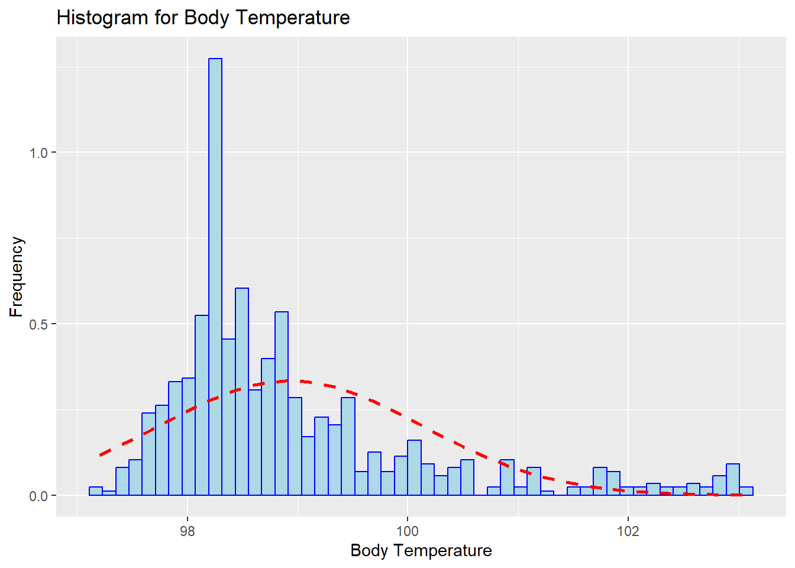
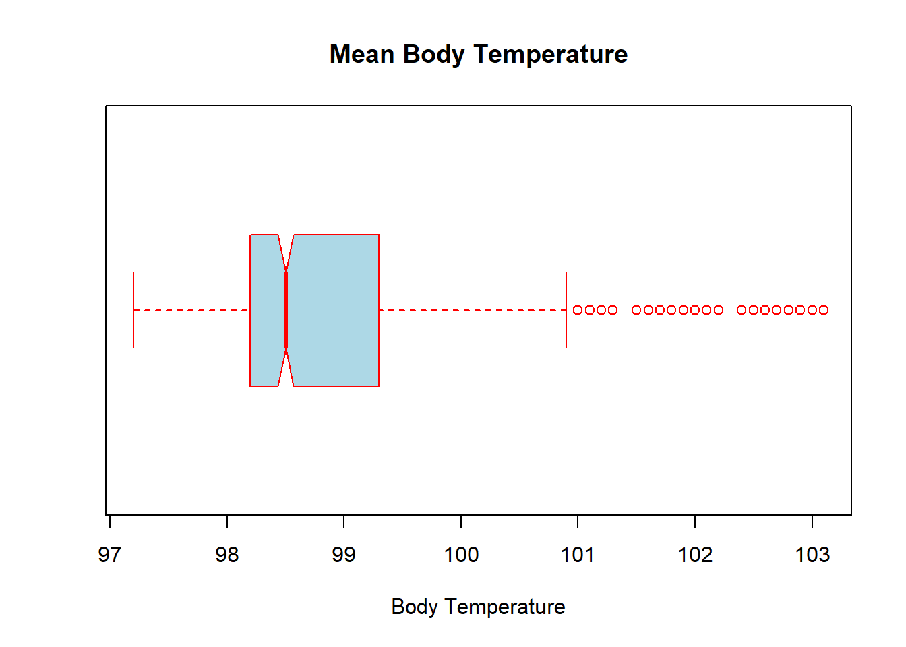
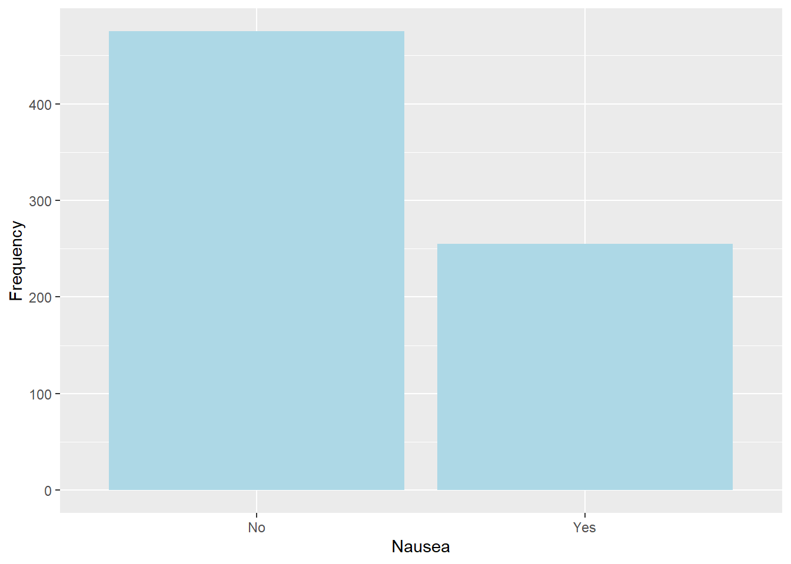
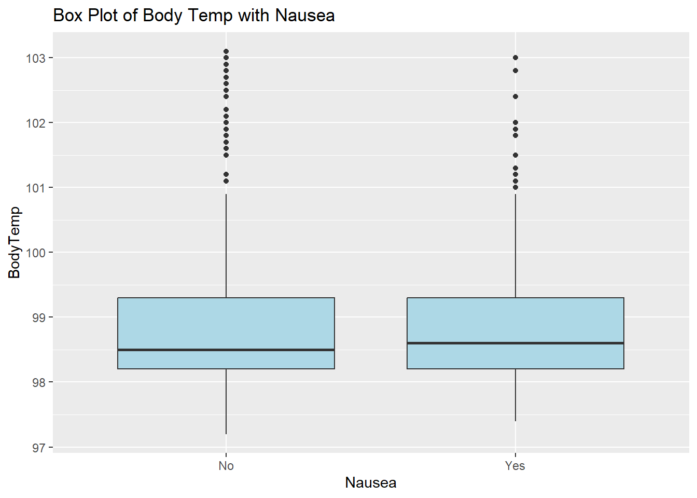
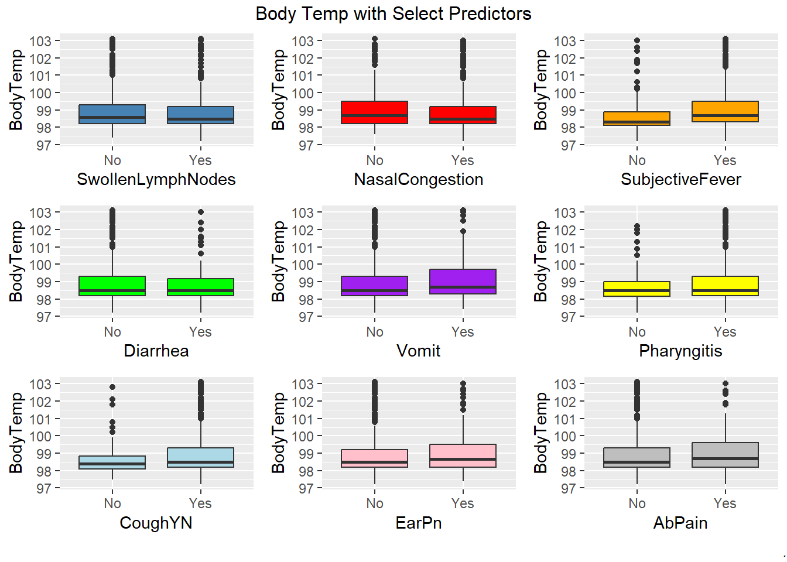
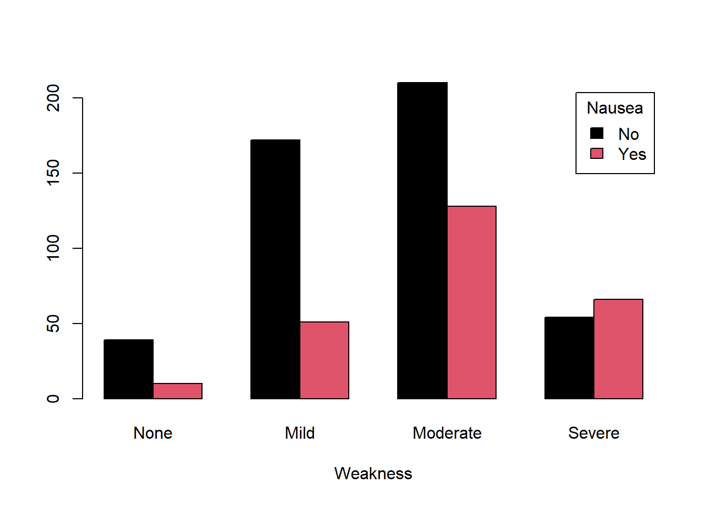
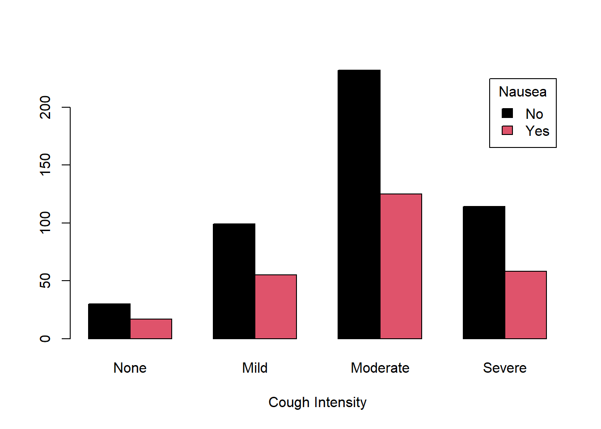
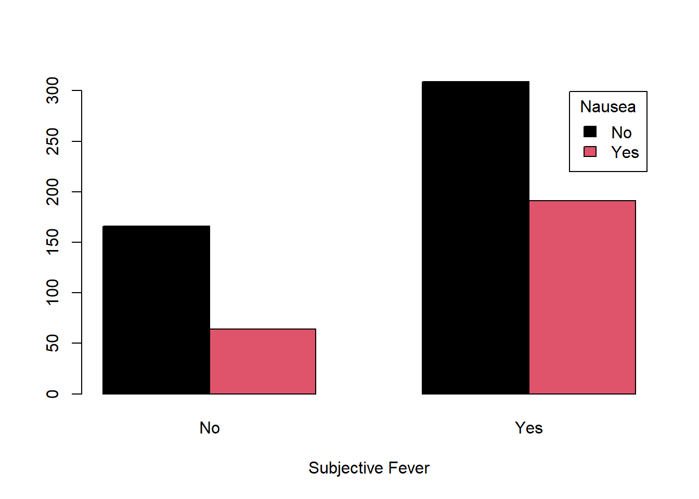

library("here")
library("tidyverse")
library("gt")
library("ggplot2")
library("reshape2")
library("grid")
library("gridExtra")Module 8: Exploration
This Quarto file was developed for the MADA Module 8 exercise.
Load and Process Data
Load required packages
Load data
# Note: Ignore extension on file, actually an RDS file
mod8 <- readRDS(here("fluanalysis", "data", "mod8_clean.rds"))Explore data
For each (important) variable, produce and print some numerical output (e.g. a table or some summary statistics numbers).
# Quick look at data
names(mod8) [1] "SwollenLymphNodes" "ChestCongestion" "ChillsSweats"
[4] "NasalCongestion" "CoughYN" "Sneeze"
[7] "Fatigue" "SubjectiveFever" "Headache"
[10] "Weakness" "WeaknessYN" "CoughIntensity"
[13] "CoughYN2" "Myalgia" "MyalgiaYN"
[16] "RunnyNose" "AbPain" "ChestPain"
[19] "Diarrhea" "EyePn" "Insomnia"
[22] "ItchyEye" "Nausea" "EarPn"
[25] "Hearing" "Pharyngitis" "Breathless"
[28] "ToothPn" "Vision" "Vomit"
[31] "Wheeze" "BodyTemp" str(mod8)'data.frame': 730 obs. of 32 variables:
$ SwollenLymphNodes: Factor w/ 2 levels "No","Yes": 2 2 2 2 2 1 1 1 2 1 ...
$ ChestCongestion : Factor w/ 2 levels "No","Yes": 1 2 2 2 1 1 1 2 2 2 ...
$ ChillsSweats : Factor w/ 2 levels "No","Yes": 1 1 2 2 2 2 2 2 2 1 ...
$ NasalCongestion : Factor w/ 2 levels "No","Yes": 1 2 2 2 1 1 1 2 2 2 ...
$ CoughYN : Factor w/ 2 levels "No","Yes": 2 2 1 2 1 2 2 2 2 2 ...
$ Sneeze : Factor w/ 2 levels "No","Yes": 1 1 2 2 1 2 1 2 1 1 ...
$ Fatigue : Factor w/ 2 levels "No","Yes": 2 2 2 2 2 2 2 2 2 2 ...
$ SubjectiveFever : Factor w/ 2 levels "No","Yes": 2 2 2 2 2 2 2 2 2 1 ...
$ Headache : Factor w/ 2 levels "No","Yes": 2 2 2 2 2 2 1 2 2 2 ...
$ Weakness : Factor w/ 4 levels "None","Mild",..: 2 4 4 4 3 3 2 4 3 3 ...
$ WeaknessYN : Factor w/ 2 levels "No","Yes": 2 2 2 2 2 2 2 2 2 2 ...
$ CoughIntensity : Factor w/ 4 levels "None","Mild",..: 4 4 2 3 1 3 4 3 3 3 ...
$ CoughYN2 : Factor w/ 2 levels "No","Yes": 2 2 2 2 1 2 2 2 2 2 ...
$ Myalgia : Factor w/ 4 levels "None","Mild",..: 2 4 4 4 2 3 2 4 3 2 ...
$ MyalgiaYN : Factor w/ 2 levels "No","Yes": 2 2 2 2 2 2 2 2 2 2 ...
$ RunnyNose : Factor w/ 2 levels "No","Yes": 1 1 2 2 1 1 2 2 2 2 ...
$ AbPain : Factor w/ 2 levels "No","Yes": 1 1 2 1 1 1 1 1 1 1 ...
$ ChestPain : Factor w/ 2 levels "No","Yes": 1 1 2 1 1 2 2 1 1 1 ...
$ Diarrhea : Factor w/ 2 levels "No","Yes": 1 1 1 1 1 2 1 1 1 1 ...
$ EyePn : Factor w/ 2 levels "No","Yes": 1 1 1 1 2 1 1 1 1 1 ...
$ Insomnia : Factor w/ 2 levels "No","Yes": 1 1 2 2 2 1 1 2 2 2 ...
$ ItchyEye : Factor w/ 2 levels "No","Yes": 1 1 1 1 1 1 1 1 1 1 ...
$ Nausea : Factor w/ 2 levels "No","Yes": 1 1 2 2 2 2 1 1 2 2 ...
$ EarPn : Factor w/ 2 levels "No","Yes": 1 2 1 2 1 1 1 1 1 1 ...
$ Hearing : Factor w/ 2 levels "No","Yes": 1 2 1 1 1 1 1 1 1 1 ...
$ Pharyngitis : Factor w/ 2 levels "No","Yes": 2 2 2 2 2 2 2 1 1 1 ...
$ Breathless : Factor w/ 2 levels "No","Yes": 1 1 2 1 1 2 1 1 1 2 ...
$ ToothPn : Factor w/ 2 levels "No","Yes": 1 1 2 1 1 1 1 1 2 1 ...
$ Vision : Factor w/ 2 levels "No","Yes": 1 1 1 1 1 1 1 1 1 1 ...
$ Vomit : Factor w/ 2 levels "No","Yes": 1 1 1 1 1 1 2 1 1 1 ...
$ Wheeze : Factor w/ 2 levels "No","Yes": 1 1 1 2 1 2 1 1 1 1 ...
$ BodyTemp : num 98.3 100.4 100.8 98.8 100.5 ...
- attr(*, "na.action")= 'omit' Named int [1:5] 133 243 363 577 585
..- attr(*, "names")= chr [1:5] "133" "243" "363" "577" ...glimpse(mod8)Rows: 730
Columns: 32
$ SwollenLymphNodes <fct> Yes, Yes, Yes, Yes, Yes, No, No, No, Yes, No, Yes, Y…
$ ChestCongestion <fct> No, Yes, Yes, Yes, No, No, No, Yes, Yes, Yes, Yes, Y…
$ ChillsSweats <fct> No, No, Yes, Yes, Yes, Yes, Yes, Yes, Yes, No, Yes, …
$ NasalCongestion <fct> No, Yes, Yes, Yes, No, No, No, Yes, Yes, Yes, Yes, Y…
$ CoughYN <fct> Yes, Yes, No, Yes, No, Yes, Yes, Yes, Yes, Yes, No, …
$ Sneeze <fct> No, No, Yes, Yes, No, Yes, No, Yes, No, No, No, No, …
$ Fatigue <fct> Yes, Yes, Yes, Yes, Yes, Yes, Yes, Yes, Yes, Yes, Ye…
$ SubjectiveFever <fct> Yes, Yes, Yes, Yes, Yes, Yes, Yes, Yes, Yes, No, Yes…
$ Headache <fct> Yes, Yes, Yes, Yes, Yes, Yes, No, Yes, Yes, Yes, Yes…
$ Weakness <fct> Mild, Severe, Severe, Severe, Moderate, Moderate, Mi…
$ WeaknessYN <fct> Yes, Yes, Yes, Yes, Yes, Yes, Yes, Yes, Yes, Yes, Ye…
$ CoughIntensity <fct> Severe, Severe, Mild, Moderate, None, Moderate, Seve…
$ CoughYN2 <fct> Yes, Yes, Yes, Yes, No, Yes, Yes, Yes, Yes, Yes, Yes…
$ Myalgia <fct> Mild, Severe, Severe, Severe, Mild, Moderate, Mild, …
$ MyalgiaYN <fct> Yes, Yes, Yes, Yes, Yes, Yes, Yes, Yes, Yes, Yes, Ye…
$ RunnyNose <fct> No, No, Yes, Yes, No, No, Yes, Yes, Yes, Yes, No, No…
$ AbPain <fct> No, No, Yes, No, No, No, No, No, No, No, Yes, Yes, N…
$ ChestPain <fct> No, No, Yes, No, No, Yes, Yes, No, No, No, No, Yes, …
$ Diarrhea <fct> No, No, No, No, No, Yes, No, No, No, No, No, No, No,…
$ EyePn <fct> No, No, No, No, Yes, No, No, No, No, No, Yes, No, Ye…
$ Insomnia <fct> No, No, Yes, Yes, Yes, No, No, Yes, Yes, Yes, Yes, Y…
$ ItchyEye <fct> No, No, No, No, No, No, No, No, No, No, No, No, Yes,…
$ Nausea <fct> No, No, Yes, Yes, Yes, Yes, No, No, Yes, Yes, Yes, Y…
$ EarPn <fct> No, Yes, No, Yes, No, No, No, No, No, No, No, Yes, Y…
$ Hearing <fct> No, Yes, No, No, No, No, No, No, No, No, No, No, No,…
$ Pharyngitis <fct> Yes, Yes, Yes, Yes, Yes, Yes, Yes, No, No, No, Yes, …
$ Breathless <fct> No, No, Yes, No, No, Yes, No, No, No, Yes, No, Yes, …
$ ToothPn <fct> No, No, Yes, No, No, No, No, No, Yes, No, No, Yes, N…
$ Vision <fct> No, No, No, No, No, No, No, No, No, No, No, No, No, …
$ Vomit <fct> No, No, No, No, No, No, Yes, No, No, No, Yes, Yes, N…
$ Wheeze <fct> No, No, No, Yes, No, Yes, No, No, No, No, No, Yes, N…
$ BodyTemp <dbl> 98.3, 100.4, 100.8, 98.8, 100.5, 98.4, 102.5, 98.4, …mod8 %>% gt::gt() %>%
gt::tab_header(title = "Flu Data") %>%
gt::tab_style(style = list(gt::cell_fill(color = "#7cb9e8"),
gt::cell_text(weight = "bold")),
locations = gt::cells_body(columns = c(BodyTemp, Nausea)))| Flu Data | |||||||||||||||||||||||||||||||
| SwollenLymphNodes | ChestCongestion | ChillsSweats | NasalCongestion | CoughYN | Sneeze | Fatigue | SubjectiveFever | Headache | Weakness | WeaknessYN | CoughIntensity | CoughYN2 | Myalgia | MyalgiaYN | RunnyNose | AbPain | ChestPain | Diarrhea | EyePn | Insomnia | ItchyEye | Nausea | EarPn | Hearing | Pharyngitis | Breathless | ToothPn | Vision | Vomit | Wheeze | BodyTemp |
|---|---|---|---|---|---|---|---|---|---|---|---|---|---|---|---|---|---|---|---|---|---|---|---|---|---|---|---|---|---|---|---|
| Yes | No | No | No | Yes | No | Yes | Yes | Yes | Mild | Yes | Severe | Yes | Mild | Yes | No | No | No | No | No | No | No | No | No | No | Yes | No | No | No | No | No | 98.3 |
| Yes | Yes | No | Yes | Yes | No | Yes | Yes | Yes | Severe | Yes | Severe | Yes | Severe | Yes | No | No | No | No | No | No | No | No | Yes | Yes | Yes | No | No | No | No | No | 100.4 |
| Yes | Yes | Yes | Yes | No | Yes | Yes | Yes | Yes | Severe | Yes | Mild | Yes | Severe | Yes | Yes | Yes | Yes | No | No | Yes | No | Yes | No | No | Yes | Yes | Yes | No | No | No | 100.8 |
| Yes | Yes | Yes | Yes | Yes | Yes | Yes | Yes | Yes | Severe | Yes | Moderate | Yes | Severe | Yes | Yes | No | No | No | No | Yes | No | Yes | Yes | No | Yes | No | No | No | No | Yes | 98.8 |
| Yes | No | Yes | No | No | No | Yes | Yes | Yes | Moderate | Yes | None | No | Mild | Yes | No | No | No | No | Yes | Yes | No | Yes | No | No | Yes | No | No | No | No | No | 100.5 |
| No | No | Yes | No | Yes | Yes | Yes | Yes | Yes | Moderate | Yes | Moderate | Yes | Moderate | Yes | No | No | Yes | Yes | No | No | No | Yes | No | No | Yes | Yes | No | No | No | Yes | 98.4 |
| No | No | Yes | No | Yes | No | Yes | Yes | No | Mild | Yes | Severe | Yes | Mild | Yes | Yes | No | Yes | No | No | No | No | No | No | No | Yes | No | No | No | Yes | No | 102.5 |
| No | Yes | Yes | Yes | Yes | Yes | Yes | Yes | Yes | Severe | Yes | Moderate | Yes | Severe | Yes | Yes | No | No | No | No | Yes | No | No | No | No | No | No | No | No | No | No | 98.4 |
| Yes | Yes | Yes | Yes | Yes | No | Yes | Yes | Yes | Moderate | Yes | Moderate | Yes | Moderate | Yes | Yes | No | No | No | No | Yes | No | Yes | No | No | No | No | Yes | No | No | No | 98.5 |
| No | Yes | No | Yes | Yes | No | Yes | No | Yes | Moderate | Yes | Moderate | Yes | Mild | Yes | Yes | No | No | No | No | Yes | No | Yes | No | No | No | Yes | No | No | No | No | 97.8 |
| Yes | Yes | Yes | Yes | No | No | Yes | Yes | Yes | Severe | Yes | Mild | Yes | Severe | Yes | No | Yes | No | No | Yes | Yes | No | Yes | No | No | Yes | No | No | No | Yes | No | 98.2 |
| Yes | Yes | Yes | Yes | Yes | No | Yes | Yes | Yes | Severe | Yes | Severe | Yes | Severe | Yes | No | Yes | Yes | No | No | Yes | No | Yes | Yes | No | Yes | Yes | Yes | No | Yes | Yes | 97.9 |
| No | No | Yes | Yes | No | No | Yes | No | Yes | Moderate | Yes | Mild | Yes | Moderate | Yes | Yes | No | No | No | Yes | No | Yes | Yes | Yes | No | Yes | Yes | No | No | No | No | 99.0 |
| Yes | Yes | Yes | Yes | Yes | Yes | Yes | Yes | Yes | Severe | Yes | Severe | Yes | Severe | Yes | Yes | No | Yes | No | No | Yes | Yes | No | No | No | Yes | Yes | No | No | No | Yes | 101.9 |
| Yes | Yes | Yes | Yes | No | No | Yes | No | Yes | Mild | Yes | None | No | Moderate | Yes | Yes | No | No | No | No | Yes | No | No | Yes | No | Yes | No | No | No | No | No | 98.1 |
| No | Yes | Yes | Yes | Yes | Yes | Yes | Yes | Yes | Severe | Yes | Moderate | Yes | Severe | Yes | Yes | No | No | No | No | Yes | No | Yes | No | No | No | No | No | No | No | No | 99.2 |
| No | No | Yes | No | Yes | No | Yes | Yes | Yes | Mild | Yes | Moderate | Yes | Moderate | Yes | No | No | Yes | No | No | Yes | No | No | No | No | No | Yes | No | No | No | No | 99.3 |
| Yes | Yes | Yes | Yes | Yes | Yes | Yes | No | Yes | Mild | Yes | Mild | Yes | None | No | Yes | No | Yes | No | No | Yes | No | Yes | Yes | No | Yes | Yes | Yes | No | No | Yes | 98.1 |
| Yes | Yes | Yes | Yes | Yes | Yes | Yes | Yes | Yes | Moderate | Yes | Severe | Yes | Moderate | Yes | Yes | No | Yes | No | No | Yes | No | Yes | No | No | Yes | No | No | No | No | No | 98.5 |
| Yes | Yes | Yes | Yes | Yes | Yes | Yes | Yes | Yes | Mild | Yes | Moderate | Yes | Moderate | Yes | Yes | No | No | Yes | Yes | No | Yes | Yes | No | No | Yes | No | Yes | No | No | No | 98.2 |
| No | Yes | No | No | Yes | Yes | Yes | No | Yes | Severe | Yes | Severe | Yes | Moderate | Yes | No | No | Yes | No | No | Yes | No | No | Yes | No | Yes | Yes | No | No | No | Yes | 97.8 |
| Yes | No | Yes | No | Yes | Yes | Yes | Yes | Yes | Moderate | Yes | Moderate | Yes | Moderate | Yes | Yes | No | No | No | No | Yes | Yes | No | Yes | No | Yes | No | Yes | No | No | No | 98.4 |
| No | Yes | Yes | Yes | Yes | Yes | Yes | Yes | Yes | Severe | Yes | Moderate | Yes | Moderate | Yes | Yes | Yes | Yes | No | No | Yes | No | Yes | Yes | No | Yes | Yes | Yes | No | No | No | 100.5 |
| Yes | Yes | Yes | Yes | Yes | Yes | Yes | Yes | Yes | Moderate | Yes | Moderate | Yes | Mild | Yes | Yes | No | Yes | No | No | Yes | No | No | Yes | No | Yes | No | No | No | No | No | 100.3 |
| No | No | Yes | Yes | No | No | Yes | Yes | Yes | Severe | Yes | None | No | Moderate | Yes | No | Yes | No | No | No | Yes | No | Yes | Yes | No | Yes | Yes | Yes | Yes | No | Yes | 97.8 |
| No | No | Yes | Yes | Yes | Yes | Yes | Yes | Yes | Mild | Yes | Mild | Yes | Mild | Yes | Yes | No | No | No | Yes | Yes | Yes | Yes | No | No | Yes | No | No | No | Yes | No | 100.0 |
| No | Yes | Yes | Yes | Yes | No | Yes | Yes | Yes | Mild | Yes | Severe | Yes | Mild | Yes | No | Yes | Yes | Yes | No | No | No | No | No | No | Yes | No | No | No | No | Yes | 99.5 |
| Yes | Yes | Yes | Yes | Yes | Yes | Yes | Yes | No | Moderate | Yes | Mild | Yes | Severe | Yes | No | No | No | No | No | No | No | No | No | No | Yes | Yes | No | No | No | No | 100.9 |
| Yes | Yes | Yes | Yes | Yes | No | Yes | Yes | Yes | Moderate | Yes | Moderate | Yes | Moderate | Yes | No | No | No | No | No | No | No | No | Yes | No | Yes | No | Yes | No | No | No | 99.7 |
| No | Yes | Yes | No | Yes | No | Yes | Yes | Yes | Moderate | Yes | Moderate | Yes | Moderate | Yes | No | Yes | Yes | No | No | Yes | No | Yes | No | Yes | No | Yes | No | No | Yes | No | 98.9 |
| Yes | No | Yes | Yes | No | Yes | Yes | No | Yes | Mild | Yes | None | No | Mild | Yes | Yes | No | Yes | No | No | No | No | No | Yes | No | Yes | No | No | No | No | No | 98.7 |
| No | No | Yes | Yes | Yes | No | Yes | Yes | Yes | Moderate | Yes | Mild | Yes | None | No | No | No | No | No | No | Yes | No | No | No | No | Yes | No | No | No | No | No | 98.8 |
| No | Yes | Yes | Yes | Yes | Yes | Yes | Yes | Yes | Moderate | Yes | Severe | Yes | Moderate | Yes | Yes | No | Yes | No | No | Yes | No | No | No | No | Yes | No | Yes | No | No | No | 100.9 |
| Yes | Yes | Yes | No | Yes | Yes | Yes | Yes | Yes | Severe | Yes | Mild | Yes | Severe | Yes | Yes | Yes | No | No | No | Yes | Yes | No | Yes | No | Yes | No | Yes | No | No | No | 99.2 |
| No | No | No | No | Yes | No | Yes | Yes | Yes | Mild | Yes | Moderate | Yes | Moderate | Yes | No | No | No | No | No | No | No | No | No | No | No | No | No | No | No | No | 101.8 |
| No | No | Yes | Yes | Yes | Yes | Yes | Yes | Yes | Moderate | Yes | Moderate | Yes | Moderate | Yes | No | No | No | No | No | Yes | No | Yes | No | No | Yes | No | No | No | Yes | Yes | 100.2 |
| No | No | Yes | Yes | No | No | No | Yes | Yes | Mild | Yes | None | No | Mild | Yes | No | No | No | No | No | No | No | Yes | No | No | Yes | No | No | Yes | No | No | 98.3 |
| Yes | Yes | Yes | Yes | Yes | Yes | Yes | Yes | Yes | Moderate | Yes | Moderate | Yes | Mild | Yes | Yes | No | No | No | No | No | No | Yes | No | No | Yes | No | No | No | No | No | 99.3 |
| No | No | Yes | Yes | Yes | Yes | Yes | Yes | Yes | Moderate | Yes | Severe | Yes | Moderate | Yes | Yes | No | No | No | No | Yes | No | No | No | No | No | Yes | Yes | No | No | Yes | 98.2 |
| Yes | Yes | Yes | Yes | Yes | Yes | Yes | Yes | Yes | Moderate | Yes | Moderate | Yes | Mild | Yes | Yes | No | No | No | No | No | No | No | Yes | No | Yes | No | No | No | No | Yes | 98.0 |
| No | No | Yes | Yes | Yes | No | Yes | Yes | Yes | Moderate | Yes | Moderate | Yes | Moderate | Yes | Yes | No | No | No | Yes | Yes | Yes | No | No | Yes | Yes | No | No | No | No | Yes | 100.4 |
| Yes | Yes | Yes | Yes | Yes | No | Yes | Yes | Yes | Moderate | Yes | Moderate | Yes | Moderate | Yes | No | No | No | No | No | No | No | Yes | No | No | Yes | Yes | No | No | Yes | Yes | 99.7 |
| No | Yes | Yes | No | Yes | No | Yes | Yes | Yes | Moderate | Yes | Moderate | Yes | Moderate | Yes | No | No | Yes | No | No | No | No | Yes | No | No | Yes | Yes | No | No | No | Yes | 98.1 |
| No | No | Yes | No | Yes | Yes | Yes | No | Yes | None | No | Moderate | Yes | Mild | Yes | Yes | No | No | No | No | Yes | No | No | No | No | Yes | Yes | No | No | No | No | 98.7 |
| No | No | Yes | Yes | Yes | No | Yes | Yes | Yes | Moderate | Yes | Moderate | Yes | Severe | Yes | No | No | No | Yes | No | Yes | No | Yes | No | No | Yes | No | No | No | Yes | No | 99.9 |
| Yes | Yes | Yes | Yes | Yes | No | Yes | Yes | Yes | Moderate | Yes | Moderate | Yes | Moderate | Yes | Yes | No | No | No | No | Yes | No | No | No | No | Yes | No | No | No | No | No | 98.5 |
| No | Yes | Yes | Yes | Yes | No | No | Yes | No | Mild | Yes | Severe | Yes | Moderate | Yes | Yes | No | Yes | No | No | Yes | No | Yes | Yes | No | Yes | Yes | No | No | Yes | Yes | 98.1 |
| No | No | No | Yes | Yes | Yes | Yes | No | Yes | Mild | Yes | Mild | Yes | None | No | Yes | No | No | No | No | No | No | No | No | No | Yes | No | No | No | No | No | 98.1 |
| No | Yes | Yes | No | Yes | No | Yes | Yes | No | Moderate | Yes | Mild | Yes | Moderate | Yes | Yes | No | No | No | No | No | No | No | No | No | No | No | No | No | No | No | 98.0 |
| No | Yes | Yes | No | Yes | No | Yes | Yes | Yes | Mild | Yes | Moderate | Yes | Moderate | Yes | No | No | No | No | No | Yes | No | No | No | No | No | No | No | No | No | No | 102.2 |
| No | Yes | No | Yes | Yes | Yes | Yes | No | Yes | Mild | Yes | Severe | Yes | Mild | Yes | Yes | No | Yes | No | No | Yes | No | No | No | No | Yes | No | No | No | No | Yes | 98.0 |
| No | No | Yes | Yes | Yes | No | No | Yes | No | Moderate | Yes | Mild | Yes | Moderate | Yes | Yes | Yes | No | No | No | No | No | No | No | No | No | No | No | No | No | No | 97.7 |
| No | Yes | Yes | Yes | Yes | Yes | Yes | Yes | No | Mild | Yes | Moderate | Yes | Moderate | Yes | Yes | No | No | No | No | Yes | No | Yes | No | No | Yes | No | No | No | No | No | 98.4 |
| Yes | No | Yes | Yes | Yes | No | Yes | Yes | No | Moderate | Yes | Moderate | Yes | Moderate | Yes | Yes | No | No | No | No | Yes | No | No | No | No | Yes | Yes | No | No | No | Yes | 99.7 |
| Yes | Yes | Yes | Yes | Yes | No | Yes | Yes | Yes | Moderate | Yes | Moderate | Yes | Moderate | Yes | Yes | Yes | Yes | No | No | No | No | Yes | Yes | Yes | Yes | Yes | Yes | No | No | Yes | 101.2 |
| No | Yes | Yes | Yes | Yes | Yes | Yes | Yes | Yes | Severe | Yes | Mild | Yes | Moderate | Yes | Yes | No | Yes | No | Yes | No | Yes | No | No | No | Yes | Yes | Yes | No | No | Yes | 101.7 |
| No | No | Yes | No | Yes | No | Yes | Yes | Yes | Moderate | Yes | Severe | Yes | Moderate | Yes | Yes | Yes | Yes | No | No | Yes | Yes | Yes | No | No | Yes | Yes | No | No | No | Yes | 98.7 |
| No | No | Yes | Yes | No | Yes | Yes | Yes | Yes | Severe | Yes | None | No | Moderate | Yes | Yes | No | No | Yes | No | No | No | Yes | No | No | No | No | No | No | No | No | 98.7 |
| No | No | Yes | Yes | No | No | Yes | Yes | Yes | Mild | Yes | Moderate | Yes | Mild | Yes | No | No | No | No | No | No | No | No | No | No | Yes | No | No | No | No | No | 99.6 |
| No | Yes | Yes | No | Yes | No | Yes | Yes | Yes | Severe | Yes | Moderate | Yes | Severe | Yes | Yes | Yes | No | No | No | No | No | Yes | No | No | Yes | Yes | No | No | Yes | No | 99.2 |
| No | No | Yes | Yes | No | No | Yes | Yes | Yes | Mild | Yes | None | No | Moderate | Yes | Yes | No | No | No | No | Yes | No | No | No | No | Yes | No | No | No | No | No | 99.0 |
| No | No | Yes | No | Yes | No | Yes | Yes | Yes | Mild | Yes | Moderate | Yes | None | No | No | No | No | No | No | Yes | No | No | No | No | No | No | No | No | No | Yes | 100.0 |
| Yes | No | Yes | No | Yes | No | Yes | Yes | Yes | Moderate | Yes | Mild | Yes | Moderate | Yes | No | No | No | No | No | No | No | No | Yes | No | Yes | No | No | No | No | No | 98.5 |
| Yes | Yes | Yes | Yes | No | Yes | Yes | No | Yes | Severe | Yes | None | No | Moderate | Yes | No | No | Yes | No | No | No | Yes | Yes | Yes | No | Yes | Yes | Yes | No | No | No | 99.1 |
| Yes | No | Yes | Yes | Yes | No | Yes | Yes | Yes | Mild | Yes | Mild | Yes | Mild | Yes | No | No | No | No | No | No | No | No | No | No | Yes | No | Yes | No | No | No | 99.1 |
| Yes | No | Yes | Yes | Yes | Yes | Yes | Yes | Yes | Mild | Yes | Moderate | Yes | Mild | Yes | Yes | No | No | No | No | No | No | Yes | Yes | No | Yes | Yes | No | No | Yes | Yes | 98.5 |
| No | No | Yes | Yes | Yes | No | Yes | Yes | Yes | Moderate | Yes | Mild | Yes | Moderate | Yes | Yes | No | Yes | No | No | Yes | No | No | No | No | Yes | No | No | No | No | No | 101.2 |
| Yes | Yes | Yes | No | Yes | Yes | Yes | Yes | Yes | Moderate | Yes | Moderate | Yes | Severe | Yes | Yes | No | Yes | Yes | Yes | No | Yes | Yes | No | No | Yes | Yes | Yes | No | No | No | 98.9 |
| Yes | Yes | Yes | Yes | Yes | Yes | Yes | Yes | Yes | Moderate | Yes | Moderate | Yes | Severe | Yes | Yes | No | Yes | No | No | Yes | Yes | No | No | No | Yes | Yes | Yes | No | No | Yes | 99.4 |
| Yes | Yes | Yes | Yes | Yes | Yes | Yes | Yes | Yes | Moderate | Yes | Moderate | Yes | Moderate | Yes | Yes | No | Yes | No | No | Yes | No | No | No | No | Yes | Yes | No | No | No | Yes | 98.3 |
| Yes | Yes | Yes | Yes | Yes | No | Yes | No | Yes | Moderate | Yes | Moderate | Yes | Mild | Yes | Yes | Yes | Yes | No | Yes | Yes | Yes | No | No | Yes | Yes | Yes | No | Yes | No | Yes | 98.2 |
| Yes | No | Yes | Yes | Yes | No | Yes | Yes | Yes | Moderate | Yes | Severe | Yes | Severe | Yes | Yes | Yes | Yes | Yes | No | Yes | No | Yes | Yes | Yes | Yes | No | No | No | No | Yes | 100.2 |
| No | Yes | Yes | Yes | Yes | Yes | Yes | Yes | Yes | Moderate | Yes | Moderate | Yes | Moderate | Yes | Yes | No | No | No | No | Yes | No | No | No | No | Yes | No | No | No | No | Yes | 100.6 |
| No | Yes | Yes | Yes | Yes | No | Yes | Yes | Yes | Severe | Yes | Severe | Yes | Moderate | Yes | Yes | No | No | No | No | No | No | No | No | No | Yes | No | No | No | No | No | 98.5 |
| No | No | No | Yes | Yes | No | Yes | No | No | Mild | Yes | Moderate | Yes | Mild | Yes | Yes | No | No | No | No | Yes | No | Yes | No | No | Yes | No | No | No | No | No | 98.2 |
| No | Yes | Yes | Yes | Yes | No | Yes | Yes | Yes | Severe | Yes | Moderate | Yes | Moderate | Yes | No | No | No | No | No | Yes | No | Yes | Yes | No | Yes | No | No | No | No | No | 99.7 |
| Yes | Yes | No | Yes | Yes | Yes | No | No | Yes | None | No | Moderate | Yes | Mild | Yes | Yes | Yes | No | Yes | No | No | No | Yes | No | No | Yes | Yes | No | No | No | No | 98.0 |
| No | Yes | Yes | No | Yes | No | Yes | No | Yes | Moderate | Yes | Severe | Yes | Moderate | Yes | No | No | No | No | No | Yes | No | No | No | No | Yes | No | Yes | No | No | Yes | 99.9 |
| Yes | Yes | Yes | Yes | Yes | Yes | Yes | No | Yes | Severe | Yes | Moderate | Yes | Moderate | Yes | Yes | No | Yes | No | No | Yes | Yes | Yes | No | No | Yes | Yes | Yes | Yes | No | Yes | 98.5 |
| Yes | No | Yes | Yes | Yes | No | Yes | Yes | Yes | Severe | Yes | Moderate | Yes | Severe | Yes | No | No | Yes | No | No | Yes | No | Yes | No | No | Yes | No | No | No | Yes | No | 99.2 |
| No | Yes | Yes | Yes | Yes | Yes | Yes | Yes | Yes | Severe | Yes | Moderate | Yes | Severe | Yes | No | No | No | Yes | Yes | Yes | No | Yes | Yes | No | Yes | No | Yes | No | No | No | 99.5 |
| No | Yes | Yes | Yes | Yes | Yes | Yes | No | Yes | Mild | Yes | Severe | Yes | Mild | Yes | Yes | No | No | No | No | No | Yes | No | No | No | Yes | No | No | No | No | No | 97.5 |
| Yes | No | Yes | Yes | Yes | Yes | No | Yes | Yes | None | No | Severe | Yes | Mild | Yes | Yes | No | Yes | No | No | Yes | No | No | Yes | No | No | No | Yes | No | No | Yes | 98.2 |
| No | Yes | No | No | Yes | Yes | Yes | No | No | Moderate | Yes | Mild | Yes | Moderate | Yes | Yes | No | Yes | No | No | Yes | No | No | No | No | Yes | Yes | No | No | No | No | 97.9 |
| Yes | Yes | Yes | Yes | Yes | Yes | Yes | Yes | Yes | Mild | Yes | Moderate | Yes | None | No | Yes | No | No | No | No | No | Yes | Yes | No | No | No | No | No | No | No | No | 98.2 |
| Yes | Yes | Yes | Yes | Yes | Yes | Yes | Yes | Yes | Severe | Yes | Severe | Yes | Severe | Yes | Yes | Yes | Yes | No | No | Yes | No | No | Yes | No | Yes | Yes | Yes | No | No | Yes | 99.0 |
| Yes | No | Yes | Yes | Yes | Yes | Yes | Yes | Yes | Mild | Yes | Moderate | Yes | Moderate | Yes | No | Yes | No | No | No | Yes | No | Yes | No | No | Yes | No | No | No | No | No | 98.5 |
| No | Yes | Yes | Yes | Yes | No | Yes | Yes | Yes | Moderate | Yes | Severe | Yes | None | No | No | No | No | No | No | No | No | No | No | No | No | No | No | No | No | No | 100.9 |
| No | No | Yes | Yes | Yes | Yes | Yes | Yes | Yes | Moderate | Yes | Mild | Yes | Moderate | Yes | Yes | No | No | No | Yes | Yes | Yes | Yes | No | No | Yes | No | Yes | No | No | No | 98.7 |
| No | Yes | No | No | Yes | No | Yes | Yes | Yes | Moderate | Yes | Moderate | Yes | None | No | No | No | No | Yes | No | No | No | Yes | No | No | Yes | No | No | No | No | No | 98.1 |
| No | Yes | Yes | Yes | Yes | No | Yes | Yes | Yes | Mild | Yes | Severe | Yes | Moderate | Yes | Yes | Yes | Yes | No | No | Yes | No | Yes | No | No | Yes | Yes | No | No | No | No | 98.0 |
| No | Yes | No | Yes | Yes | Yes | Yes | No | No | None | No | Mild | Yes | Mild | Yes | Yes | No | Yes | No | No | No | No | No | No | No | Yes | Yes | No | No | No | No | 98.3 |
| No | No | Yes | Yes | Yes | Yes | Yes | Yes | Yes | Moderate | Yes | Moderate | Yes | Moderate | Yes | Yes | No | No | No | No | Yes | No | No | No | No | Yes | No | No | No | No | No | 98.4 |
| No | Yes | No | Yes | Yes | No | Yes | No | No | Mild | Yes | Moderate | Yes | None | No | No | No | Yes | No | No | No | No | No | No | No | Yes | Yes | No | No | No | Yes | 98.7 |
| No | Yes | Yes | Yes | Yes | Yes | Yes | Yes | Yes | Severe | Yes | Severe | Yes | None | No | Yes | No | No | Yes | No | Yes | Yes | No | No | No | Yes | Yes | No | No | No | Yes | 97.7 |
| No | No | Yes | No | Yes | No | Yes | Yes | Yes | Severe | Yes | Moderate | Yes | Severe | Yes | No | Yes | No | No | No | Yes | No | No | No | No | Yes | No | No | No | No | No | 100.4 |
| Yes | Yes | No | Yes | Yes | Yes | Yes | No | Yes | Mild | Yes | Moderate | Yes | Moderate | Yes | Yes | No | No | No | No | Yes | No | No | No | No | Yes | No | No | No | No | No | 99.0 |
| Yes | No | No | Yes | Yes | Yes | Yes | No | Yes | Moderate | Yes | Mild | Yes | Moderate | Yes | Yes | Yes | No | No | Yes | Yes | Yes | Yes | No | No | Yes | No | No | No | No | No | 98.1 |
| No | No | Yes | No | No | Yes | No | Yes | Yes | Mild | Yes | Moderate | Yes | Mild | Yes | No | No | No | No | No | Yes | No | No | No | No | Yes | No | No | No | No | No | 99.0 |
| No | Yes | Yes | Yes | Yes | Yes | Yes | Yes | Yes | Severe | Yes | Severe | Yes | Severe | Yes | Yes | No | Yes | No | Yes | Yes | Yes | Yes | No | No | No | Yes | No | No | No | Yes | 98.7 |
| No | Yes | Yes | No | Yes | No | Yes | No | Yes | Moderate | Yes | Severe | Yes | Moderate | Yes | No | No | Yes | Yes | No | Yes | Yes | No | No | No | Yes | No | Yes | No | No | No | 99.7 |
| No | Yes | Yes | Yes | Yes | No | No | Yes | Yes | Mild | Yes | Moderate | Yes | Moderate | Yes | Yes | No | No | No | No | Yes | No | Yes | No | No | No | No | No | No | No | Yes | 97.7 |
| Yes | No | No | Yes | Yes | No | No | No | No | None | No | Moderate | Yes | None | No | Yes | No | No | No | No | No | No | No | No | No | Yes | No | No | No | No | No | 98.9 |
| Yes | No | Yes | Yes | Yes | No | Yes | Yes | Yes | Mild | Yes | Moderate | Yes | Mild | Yes | No | No | No | No | No | No | No | No | No | No | Yes | No | No | No | No | No | 98.0 |
| No | Yes | Yes | Yes | Yes | No | Yes | No | Yes | Moderate | Yes | Severe | Yes | Moderate | Yes | No | No | Yes | No | No | Yes | No | Yes | Yes | No | No | Yes | Yes | No | No | Yes | 99.3 |
| No | Yes | Yes | Yes | Yes | No | Yes | Yes | No | Moderate | Yes | Severe | Yes | Moderate | Yes | Yes | No | Yes | No | No | Yes | No | No | No | No | Yes | Yes | No | No | No | Yes | 98.5 |
| No | Yes | Yes | Yes | Yes | No | Yes | No | No | Moderate | Yes | Severe | Yes | Moderate | Yes | No | No | Yes | No | No | No | No | Yes | No | No | Yes | Yes | No | No | Yes | Yes | 99.2 |
| No | Yes | Yes | Yes | Yes | Yes | Yes | Yes | Yes | Moderate | Yes | Moderate | Yes | Moderate | Yes | Yes | Yes | Yes | No | Yes | Yes | No | No | Yes | No | Yes | Yes | Yes | No | No | No | 100.0 |
| No | No | Yes | Yes | Yes | Yes | No | Yes | No | None | No | Moderate | Yes | Moderate | Yes | Yes | No | No | No | No | Yes | No | No | No | No | No | No | No | No | No | No | 98.3 |
| Yes | No | Yes | Yes | Yes | No | Yes | Yes | Yes | Severe | Yes | Severe | Yes | Moderate | Yes | Yes | No | No | No | No | Yes | No | Yes | Yes | No | Yes | No | Yes | No | No | Yes | 98.8 |
| No | Yes | Yes | No | Yes | Yes | Yes | Yes | No | Moderate | Yes | Severe | Yes | Mild | Yes | Yes | No | No | No | No | No | No | No | No | No | No | Yes | No | No | No | Yes | 98.6 |
| No | Yes | Yes | Yes | Yes | Yes | Yes | No | No | Moderate | Yes | Moderate | Yes | Mild | Yes | Yes | No | Yes | No | No | No | Yes | No | No | Yes | Yes | Yes | No | No | No | Yes | 98.9 |
| Yes | Yes | Yes | Yes | Yes | Yes | Yes | Yes | Yes | Moderate | Yes | Severe | Yes | Moderate | Yes | Yes | No | No | No | No | No | No | No | No | No | Yes | No | No | No | No | No | 98.5 |
| No | Yes | Yes | No | Yes | Yes | Yes | Yes | Yes | Severe | Yes | Moderate | Yes | Severe | Yes | Yes | Yes | Yes | No | No | No | No | Yes | No | No | Yes | Yes | No | No | No | No | 98.2 |
| No | No | Yes | Yes | Yes | Yes | Yes | No | Yes | Moderate | Yes | Moderate | Yes | Moderate | Yes | Yes | No | No | No | No | Yes | No | Yes | No | No | No | Yes | No | No | No | No | 98.6 |
| No | No | No | Yes | Yes | No | Yes | No | Yes | Mild | Yes | Moderate | Yes | Moderate | Yes | Yes | No | Yes | No | No | Yes | No | No | No | No | No | No | No | No | No | No | 98.3 |
| Yes | Yes | Yes | Yes | Yes | No | Yes | No | Yes | Moderate | Yes | Moderate | Yes | Moderate | Yes | Yes | Yes | No | No | No | Yes | No | No | No | No | Yes | Yes | No | No | No | Yes | 98.6 |
| No | Yes | Yes | Yes | Yes | Yes | Yes | Yes | Yes | Severe | Yes | Severe | Yes | Severe | Yes | Yes | No | Yes | No | No | Yes | No | No | No | No | Yes | No | No | No | No | No | 100.3 |
| No | No | Yes | No | Yes | Yes | Yes | Yes | Yes | Moderate | Yes | Moderate | Yes | Severe | Yes | Yes | No | Yes | No | No | No | Yes | No | Yes | No | Yes | No | No | No | No | No | 99.3 |
| Yes | Yes | Yes | Yes | Yes | Yes | Yes | Yes | Yes | None | No | Moderate | Yes | None | No | Yes | No | Yes | Yes | No | No | No | No | No | No | Yes | Yes | No | No | No | Yes | 97.2 |
| No | No | Yes | No | Yes | No | Yes | Yes | Yes | Moderate | Yes | Moderate | Yes | Moderate | Yes | No | Yes | No | No | Yes | No | No | Yes | No | No | Yes | Yes | No | No | Yes | Yes | 98.9 |
| No | No | No | No | Yes | No | Yes | No | Yes | Moderate | Yes | Moderate | Yes | None | No | Yes | No | Yes | No | No | Yes | No | No | No | No | Yes | Yes | No | No | No | No | 98.1 |
| No | No | Yes | No | Yes | No | Yes | Yes | Yes | Mild | Yes | Mild | Yes | Mild | Yes | No | No | No | No | No | No | No | No | No | No | Yes | Yes | No | No | No | No | 100.9 |
| Yes | Yes | Yes | Yes | Yes | Yes | Yes | Yes | Yes | Severe | Yes | Moderate | Yes | Severe | Yes | Yes | Yes | Yes | No | No | Yes | Yes | Yes | Yes | No | Yes | Yes | No | Yes | Yes | No | 98.5 |
| Yes | Yes | Yes | Yes | Yes | Yes | Yes | Yes | Yes | Severe | Yes | Severe | Yes | Severe | Yes | Yes | Yes | Yes | No | Yes | Yes | Yes | No | Yes | No | Yes | Yes | Yes | No | No | Yes | 101.1 |
| No | No | Yes | Yes | Yes | No | Yes | Yes | Yes | Mild | Yes | Moderate | Yes | None | No | Yes | No | No | No | Yes | Yes | No | Yes | No | No | No | No | No | No | No | No | 98.2 |
| No | No | Yes | No | Yes | Yes | Yes | Yes | No | Moderate | Yes | Mild | Yes | Moderate | Yes | No | No | No | No | No | Yes | No | Yes | No | No | Yes | No | No | No | No | No | 102.0 |
| Yes | Yes | Yes | Yes | Yes | Yes | Yes | No | Yes | Moderate | Yes | Moderate | Yes | Severe | Yes | Yes | Yes | Yes | No | No | Yes | Yes | Yes | No | No | Yes | Yes | No | No | No | No | 99.2 |
| Yes | No | Yes | Yes | Yes | Yes | Yes | No | Yes | Moderate | Yes | Severe | Yes | Mild | Yes | Yes | No | Yes | No | No | No | No | No | No | No | No | No | No | No | No | No | 99.7 |
| No | Yes | Yes | Yes | Yes | No | Yes | Yes | Yes | Mild | Yes | Moderate | Yes | Mild | Yes | Yes | No | Yes | No | No | No | No | No | No | Yes | Yes | Yes | Yes | No | No | No | 99.1 |
| Yes | No | Yes | Yes | Yes | No | Yes | Yes | Yes | None | No | Severe | Yes | Mild | Yes | Yes | No | No | No | No | Yes | Yes | No | No | No | Yes | No | No | No | No | No | 98.9 |
| Yes | Yes | No | Yes | Yes | Yes | Yes | Yes | Yes | Moderate | Yes | Mild | Yes | Moderate | Yes | Yes | No | No | No | No | No | Yes | No | No | No | Yes | No | No | No | No | No | 97.7 |
| No | No | Yes | Yes | Yes | Yes | Yes | Yes | No | Moderate | Yes | Moderate | Yes | Moderate | Yes | Yes | No | Yes | No | No | No | No | No | No | No | Yes | No | No | No | No | No | 98.4 |
| No | No | Yes | No | Yes | No | Yes | No | Yes | Moderate | Yes | Mild | Yes | Severe | Yes | No | Yes | No | No | No | No | No | No | Yes | No | Yes | No | No | No | No | No | 99.9 |
| No | No | Yes | Yes | Yes | Yes | No | No | Yes | Severe | Yes | Severe | Yes | Severe | Yes | Yes | No | Yes | No | No | Yes | No | No | Yes | No | Yes | Yes | No | No | No | Yes | 99.5 |
| No | Yes | Yes | No | Yes | No | Yes | Yes | Yes | Mild | Yes | Moderate | Yes | Mild | Yes | No | No | No | Yes | No | Yes | No | No | No | No | Yes | Yes | No | No | No | No | 99.0 |
| No | No | Yes | No | No | No | Yes | No | Yes | Moderate | Yes | Mild | Yes | Moderate | Yes | No | No | No | Yes | No | Yes | No | No | No | No | Yes | No | No | No | No | No | 98.2 |
| No | Yes | Yes | Yes | Yes | No | Yes | Yes | Yes | Mild | Yes | Moderate | Yes | Moderate | Yes | No | Yes | No | No | No | Yes | No | Yes | No | No | Yes | No | No | No | No | Yes | 99.0 |
| Yes | Yes | Yes | Yes | Yes | Yes | No | Yes | Yes | Moderate | Yes | Severe | Yes | Severe | Yes | Yes | No | Yes | No | No | Yes | Yes | No | Yes | No | Yes | Yes | Yes | No | No | No | 98.4 |
| Yes | Yes | Yes | No | Yes | No | Yes | No | Yes | None | No | Moderate | Yes | None | No | No | No | No | No | No | No | No | No | No | No | Yes | Yes | No | No | No | No | 98.3 |
| No | Yes | Yes | No | Yes | No | Yes | Yes | Yes | Moderate | Yes | Severe | Yes | Moderate | Yes | No | Yes | Yes | No | No | Yes | No | No | Yes | No | Yes | Yes | No | No | No | No | 100.4 |
| Yes | Yes | Yes | Yes | No | No | Yes | Yes | Yes | Mild | Yes | Mild | Yes | Severe | Yes | No | Yes | Yes | No | No | Yes | No | Yes | Yes | No | Yes | Yes | Yes | No | Yes | No | 98.7 |
| No | No | No | Yes | Yes | No | No | Yes | Yes | Moderate | Yes | Moderate | Yes | Moderate | Yes | No | No | No | No | No | No | No | No | No | No | Yes | No | No | No | No | No | 99.3 |
| Yes | Yes | Yes | Yes | Yes | Yes | Yes | Yes | No | Mild | Yes | Moderate | Yes | Mild | Yes | Yes | No | No | No | Yes | No | Yes | No | No | No | Yes | Yes | Yes | No | No | No | 99.4 |
| No | No | Yes | Yes | No | Yes | Yes | Yes | Yes | Moderate | Yes | Mild | Yes | Moderate | Yes | Yes | No | No | No | No | Yes | No | Yes | No | No | Yes | No | No | No | No | No | 98.6 |
| Yes | Yes | Yes | Yes | Yes | Yes | Yes | Yes | Yes | Moderate | Yes | Severe | Yes | Moderate | Yes | Yes | No | Yes | No | No | No | No | Yes | Yes | No | Yes | Yes | No | Yes | No | No | 101.0 |
| No | Yes | Yes | Yes | Yes | Yes | Yes | Yes | Yes | Severe | Yes | Severe | Yes | Moderate | Yes | Yes | No | Yes | No | No | Yes | Yes | Yes | Yes | Yes | Yes | Yes | No | No | No | Yes | 97.8 |
| No | Yes | No | No | Yes | No | Yes | Yes | No | Mild | Yes | Moderate | Yes | Mild | Yes | No | No | No | No | No | No | No | No | No | No | Yes | No | No | No | No | No | 98.3 |
| Yes | Yes | Yes | Yes | Yes | Yes | Yes | Yes | Yes | Moderate | Yes | Moderate | Yes | Severe | Yes | Yes | No | No | No | No | Yes | No | Yes | No | No | Yes | Yes | No | No | No | No | 99.1 |
| Yes | Yes | Yes | Yes | Yes | Yes | Yes | Yes | Yes | Moderate | Yes | Severe | Yes | Mild | Yes | Yes | No | Yes | No | No | Yes | No | No | No | No | Yes | No | No | No | No | No | 98.3 |
| No | Yes | Yes | Yes | Yes | Yes | Yes | Yes | Yes | Moderate | Yes | Moderate | Yes | Mild | Yes | Yes | No | No | No | No | No | No | Yes | No | No | Yes | Yes | No | No | No | No | 98.2 |
| No | No | Yes | No | Yes | No | Yes | Yes | No | Moderate | Yes | Severe | Yes | Mild | Yes | No | No | Yes | No | No | No | No | No | No | No | Yes | No | No | No | No | No | 101.2 |
| No | Yes | Yes | Yes | Yes | Yes | Yes | Yes | Yes | Moderate | Yes | Moderate | Yes | Severe | Yes | Yes | No | Yes | No | Yes | No | No | No | No | No | No | Yes | No | No | Yes | Yes | 100.2 |
| No | No | Yes | No | Yes | No | Yes | No | Yes | Severe | Yes | Moderate | Yes | Mild | Yes | No | No | No | No | No | No | No | No | Yes | No | Yes | No | No | No | No | No | 102.6 |
| No | No | Yes | No | Yes | No | Yes | No | Yes | Mild | Yes | Severe | Yes | Moderate | Yes | Yes | No | No | No | No | Yes | No | No | No | No | No | No | No | No | No | No | 98.2 |
| No | Yes | Yes | Yes | Yes | No | Yes | Yes | Yes | Mild | Yes | Severe | Yes | Mild | Yes | Yes | No | Yes | No | No | Yes | No | No | No | No | Yes | Yes | No | No | No | Yes | 98.6 |
| Yes | Yes | Yes | Yes | Yes | Yes | Yes | Yes | Yes | Moderate | Yes | Severe | Yes | Moderate | Yes | No | No | Yes | No | Yes | Yes | Yes | No | Yes | Yes | Yes | No | Yes | No | No | Yes | 97.7 |
| No | No | Yes | Yes | Yes | No | Yes | Yes | Yes | Moderate | Yes | Moderate | Yes | Moderate | Yes | Yes | No | No | No | No | No | No | No | No | No | No | No | No | No | No | No | 102.2 |
| No | Yes | Yes | Yes | Yes | Yes | Yes | Yes | Yes | Moderate | Yes | Severe | Yes | Moderate | Yes | No | Yes | Yes | No | Yes | Yes | No | No | Yes | No | Yes | Yes | Yes | No | No | Yes | 98.8 |
| Yes | No | Yes | Yes | Yes | Yes | Yes | Yes | Yes | Moderate | Yes | Moderate | Yes | Severe | Yes | Yes | No | Yes | Yes | No | No | No | Yes | Yes | No | Yes | Yes | Yes | No | No | No | 98.8 |
| No | Yes | Yes | Yes | Yes | Yes | Yes | No | Yes | Severe | Yes | Severe | Yes | Moderate | Yes | Yes | No | No | Yes | No | Yes | No | Yes | No | No | Yes | No | No | No | No | No | 98.7 |
| Yes | Yes | Yes | Yes | Yes | Yes | Yes | Yes | Yes | Moderate | Yes | Moderate | Yes | Moderate | Yes | Yes | No | Yes | No | No | No | No | Yes | No | No | Yes | Yes | No | No | Yes | Yes | 97.8 |
| Yes | Yes | Yes | Yes | Yes | No | Yes | Yes | Yes | Severe | Yes | Severe | Yes | Severe | Yes | No | No | Yes | No | No | Yes | No | Yes | No | No | Yes | Yes | Yes | No | Yes | Yes | 99.0 |
| No | Yes | Yes | Yes | Yes | Yes | Yes | No | Yes | Moderate | Yes | Moderate | Yes | Moderate | Yes | Yes | No | No | Yes | No | No | No | Yes | Yes | No | No | No | No | No | Yes | No | 97.4 |
| No | No | Yes | Yes | Yes | Yes | Yes | Yes | Yes | Severe | Yes | Moderate | Yes | Moderate | Yes | No | No | No | No | No | Yes | No | Yes | No | No | Yes | Yes | No | No | No | Yes | 100.2 |
| No | No | No | No | Yes | No | No | No | No | Moderate | Yes | Moderate | Yes | Severe | Yes | No | No | No | No | No | Yes | No | No | No | No | Yes | Yes | No | No | No | No | 98.1 |
| No | Yes | Yes | Yes | Yes | Yes | Yes | Yes | Yes | Severe | Yes | Severe | Yes | Moderate | Yes | Yes | No | No | No | No | Yes | Yes | Yes | No | No | Yes | Yes | No | No | Yes | Yes | 100.4 |
| Yes | No | Yes | Yes | Yes | No | No | No | Yes | Mild | Yes | Moderate | Yes | Mild | Yes | No | No | No | Yes | No | Yes | No | No | Yes | No | Yes | Yes | No | No | No | No | 97.9 |
| No | Yes | Yes | Yes | Yes | No | Yes | Yes | Yes | Moderate | Yes | Moderate | Yes | Moderate | Yes | Yes | No | No | No | No | Yes | No | No | No | No | Yes | No | No | No | No | No | 98.9 |
| Yes | Yes | No | Yes | Yes | Yes | Yes | Yes | Yes | Severe | Yes | Severe | Yes | Severe | Yes | Yes | No | No | No | No | Yes | Yes | No | Yes | No | Yes | No | No | No | Yes | No | 98.3 |
| No | No | Yes | Yes | Yes | Yes | Yes | No | Yes | Mild | Yes | Moderate | Yes | Moderate | Yes | Yes | No | No | No | No | Yes | No | No | No | No | Yes | No | No | No | No | No | 98.3 |
| Yes | No | Yes | No | Yes | No | Yes | Yes | No | Moderate | Yes | Moderate | Yes | Moderate | Yes | No | No | No | No | No | Yes | No | No | No | No | Yes | Yes | No | No | Yes | No | 103.1 |
| Yes | Yes | Yes | Yes | Yes | No | Yes | Yes | No | Mild | Yes | Severe | Yes | Severe | Yes | Yes | No | No | No | No | No | No | Yes | No | No | No | No | No | No | Yes | No | 98.1 |
| Yes | No | Yes | Yes | Yes | No | Yes | Yes | Yes | None | No | Moderate | Yes | None | No | No | No | No | No | No | Yes | No | No | No | No | Yes | No | No | No | No | No | 100.1 |
| Yes | Yes | Yes | Yes | Yes | No | Yes | Yes | Yes | Moderate | Yes | Severe | Yes | Moderate | Yes | Yes | No | Yes | No | No | Yes | No | Yes | Yes | No | Yes | Yes | Yes | No | Yes | No | 100.9 |
| No | Yes | Yes | Yes | Yes | Yes | Yes | No | No | Mild | Yes | Moderate | Yes | Moderate | Yes | Yes | No | No | No | No | Yes | No | No | No | No | No | Yes | No | No | No | No | 98.9 |
| No | Yes | Yes | Yes | Yes | Yes | Yes | No | Yes | Severe | Yes | Moderate | Yes | Severe | Yes | Yes | Yes | Yes | No | Yes | Yes | No | Yes | Yes | Yes | Yes | Yes | Yes | No | No | Yes | 98.5 |
| No | No | No | Yes | Yes | Yes | Yes | Yes | Yes | Moderate | Yes | Moderate | Yes | Mild | Yes | Yes | No | No | Yes | No | No | No | No | No | No | Yes | No | No | No | No | Yes | 101.5 |
| No | No | Yes | Yes | Yes | Yes | Yes | Yes | Yes | Mild | Yes | Moderate | Yes | Mild | Yes | Yes | No | Yes | No | No | Yes | Yes | No | No | No | Yes | Yes | No | No | No | No | 98.5 |
| No | Yes | Yes | Yes | Yes | No | Yes | Yes | Yes | Moderate | Yes | Mild | Yes | Mild | Yes | No | No | No | No | No | No | No | Yes | Yes | No | Yes | No | No | No | No | No | 100.9 |
| No | Yes | Yes | Yes | Yes | Yes | Yes | Yes | Yes | Moderate | Yes | Moderate | Yes | Moderate | Yes | Yes | Yes | Yes | Yes | No | No | Yes | Yes | No | No | No | No | No | No | No | No | 98.3 |
| Yes | Yes | Yes | Yes | Yes | Yes | Yes | Yes | Yes | Moderate | Yes | Severe | Yes | Moderate | Yes | Yes | No | Yes | No | Yes | Yes | Yes | No | Yes | No | Yes | Yes | Yes | No | No | No | 98.9 |
| No | No | No | No | Yes | No | Yes | No | Yes | Moderate | Yes | Mild | Yes | Moderate | Yes | No | No | Yes | No | No | No | No | No | No | No | Yes | No | No | No | No | No | 101.8 |
| Yes | Yes | Yes | Yes | Yes | Yes | Yes | Yes | Yes | Severe | Yes | Mild | Yes | Severe | Yes | No | Yes | Yes | No | No | Yes | No | Yes | No | No | Yes | No | Yes | No | Yes | No | 98.1 |
| No | Yes | Yes | No | Yes | No | No | No | No | None | No | Moderate | Yes | None | No | No | No | No | No | No | No | No | No | No | No | Yes | No | No | No | No | Yes | 98.9 |
| Yes | Yes | Yes | Yes | Yes | Yes | Yes | Yes | Yes | Moderate | Yes | Mild | Yes | Moderate | Yes | Yes | No | No | No | No | Yes | Yes | No | Yes | No | Yes | No | No | No | No | No | 98.0 |
| No | Yes | Yes | Yes | Yes | Yes | No | No | No | Mild | Yes | Moderate | Yes | Mild | Yes | No | No | No | No | No | No | No | No | No | No | No | Yes | No | No | No | No | 98.0 |
| No | Yes | Yes | Yes | Yes | Yes | Yes | Yes | Yes | Moderate | Yes | Mild | Yes | Moderate | Yes | Yes | No | No | No | No | No | No | No | No | No | Yes | No | No | No | No | Yes | 98.5 |
| Yes | Yes | Yes | Yes | Yes | Yes | Yes | Yes | Yes | Moderate | Yes | Moderate | Yes | Severe | Yes | Yes | No | Yes | No | No | Yes | No | No | Yes | No | Yes | Yes | Yes | Yes | No | Yes | 97.7 |
| No | Yes | Yes | Yes | Yes | Yes | Yes | Yes | Yes | Moderate | Yes | Moderate | Yes | Severe | Yes | Yes | No | Yes | No | Yes | Yes | Yes | No | Yes | No | Yes | No | Yes | No | No | Yes | 98.5 |
| No | No | Yes | No | Yes | Yes | Yes | No | No | Mild | Yes | Moderate | Yes | Mild | Yes | Yes | No | No | No | No | No | No | No | No | No | No | No | No | No | No | No | 98.2 |
| No | No | Yes | Yes | Yes | No | No | Yes | Yes | Moderate | Yes | Moderate | Yes | Moderate | Yes | Yes | No | No | Yes | No | Yes | No | No | No | No | No | No | No | No | No | No | 98.3 |
| Yes | Yes | No | Yes | Yes | No | No | Yes | Yes | Mild | Yes | Moderate | Yes | None | No | Yes | No | No | No | No | Yes | No | No | No | No | Yes | Yes | No | No | No | Yes | 98.3 |
| No | No | Yes | No | No | No | Yes | No | Yes | Moderate | Yes | None | No | Moderate | Yes | Yes | No | No | No | No | No | Yes | No | Yes | No | Yes | Yes | No | No | No | No | 97.9 |
| No | Yes | No | Yes | Yes | Yes | Yes | No | Yes | Moderate | Yes | Moderate | Yes | Moderate | Yes | Yes | No | Yes | No | No | No | No | No | No | No | No | Yes | Yes | No | No | Yes | 98.5 |
| No | No | Yes | Yes | Yes | Yes | Yes | Yes | Yes | Moderate | Yes | Moderate | Yes | Moderate | Yes | Yes | No | No | No | Yes | No | Yes | No | No | No | Yes | No | No | No | No | No | 98.1 |
| Yes | Yes | No | Yes | Yes | Yes | No | No | Yes | None | No | Severe | Yes | None | No | Yes | No | No | No | No | No | No | No | No | No | Yes | No | No | No | No | No | 98.0 |
| No | No | Yes | Yes | No | Yes | Yes | No | Yes | Moderate | Yes | Mild | Yes | Moderate | Yes | No | No | No | No | No | Yes | No | No | No | No | Yes | No | No | No | No | No | 98.5 |
| No | Yes | Yes | Yes | Yes | Yes | Yes | Yes | Yes | Moderate | Yes | Moderate | Yes | Severe | Yes | Yes | Yes | No | No | Yes | Yes | Yes | Yes | No | No | Yes | Yes | Yes | No | No | No | 98.8 |
| No | No | Yes | Yes | Yes | Yes | Yes | Yes | Yes | Moderate | Yes | Mild | Yes | Moderate | Yes | Yes | No | No | Yes | No | No | No | Yes | No | No | Yes | No | No | No | No | No | 97.5 |
| No | Yes | Yes | No | Yes | No | Yes | Yes | Yes | Moderate | Yes | Moderate | Yes | Severe | Yes | No | Yes | Yes | Yes | No | Yes | No | Yes | No | No | No | Yes | No | No | Yes | Yes | 98.6 |
| No | No | No | Yes | Yes | No | No | No | Yes | Mild | Yes | Severe | Yes | Mild | Yes | Yes | No | Yes | No | No | No | No | No | No | No | Yes | Yes | No | No | No | Yes | 99.2 |
| No | Yes | Yes | Yes | Yes | No | No | Yes | Yes | Mild | Yes | Severe | Yes | None | No | Yes | No | No | No | No | Yes | No | Yes | No | No | Yes | No | No | No | No | No | 99.3 |
| No | Yes | Yes | Yes | Yes | Yes | Yes | No | Yes | Moderate | Yes | Moderate | Yes | Mild | Yes | Yes | No | Yes | No | No | Yes | No | Yes | Yes | No | Yes | Yes | Yes | Yes | No | No | 100.3 |
| No | No | No | Yes | Yes | No | Yes | No | Yes | Moderate | Yes | Moderate | Yes | Moderate | Yes | Yes | No | No | No | No | No | No | Yes | No | No | Yes | Yes | No | No | No | No | 98.3 |
| Yes | No | No | Yes | No | Yes | Yes | No | Yes | Mild | Yes | Mild | Yes | None | No | Yes | No | No | No | No | No | No | No | No | No | Yes | No | Yes | No | No | No | 98.4 |
| Yes | No | Yes | Yes | Yes | Yes | Yes | Yes | No | Moderate | Yes | Severe | Yes | Moderate | Yes | Yes | No | No | No | No | No | No | Yes | No | No | Yes | No | No | No | No | No | 99.1 |
| Yes | No | Yes | Yes | Yes | Yes | Yes | Yes | Yes | Mild | Yes | Severe | Yes | Mild | Yes | Yes | No | No | No | No | Yes | No | Yes | Yes | No | Yes | No | Yes | No | No | Yes | 98.4 |
| Yes | Yes | Yes | Yes | Yes | No | Yes | Yes | Yes | Moderate | Yes | Mild | Yes | Severe | Yes | No | No | No | No | No | Yes | No | No | No | No | Yes | No | No | No | No | No | 99.2 |
| No | No | No | Yes | Yes | Yes | Yes | Yes | Yes | Moderate | Yes | Severe | Yes | Severe | Yes | Yes | No | No | No | No | Yes | No | No | No | No | Yes | No | No | No | No | No | 98.1 |
| No | Yes | Yes | Yes | Yes | Yes | Yes | Yes | No | Severe | Yes | Mild | Yes | Mild | Yes | Yes | No | No | No | No | Yes | No | Yes | Yes | No | Yes | Yes | No | No | No | Yes | 101.9 |
| No | No | Yes | Yes | Yes | No | Yes | Yes | No | Mild | Yes | Severe | Yes | Mild | Yes | Yes | No | No | No | No | Yes | No | Yes | No | No | Yes | Yes | No | No | No | Yes | 97.8 |
| Yes | Yes | Yes | Yes | No | No | Yes | Yes | Yes | Mild | Yes | None | No | Mild | Yes | Yes | No | No | No | Yes | No | Yes | No | Yes | No | Yes | No | No | No | No | No | 98.6 |
| Yes | Yes | Yes | Yes | Yes | Yes | Yes | Yes | Yes | Mild | Yes | Severe | Yes | Mild | Yes | Yes | No | Yes | No | No | Yes | No | No | No | No | Yes | Yes | No | No | Yes | Yes | 97.7 |
| No | Yes | Yes | Yes | Yes | No | Yes | Yes | Yes | Severe | Yes | Moderate | Yes | Mild | Yes | Yes | No | No | No | No | Yes | No | Yes | No | No | Yes | No | No | No | No | No | 103.0 |
| No | Yes | Yes | Yes | Yes | Yes | Yes | Yes | Yes | Severe | Yes | Severe | Yes | Moderate | Yes | Yes | No | Yes | No | Yes | Yes | Yes | No | No | No | No | Yes | No | No | No | Yes | 98.8 |
| Yes | Yes | Yes | No | Yes | Yes | Yes | Yes | Yes | Moderate | Yes | Moderate | Yes | Moderate | Yes | Yes | No | Yes | No | No | No | No | Yes | No | No | Yes | No | No | No | No | No | 100.3 |
| Yes | Yes | Yes | Yes | Yes | Yes | Yes | No | Yes | Mild | Yes | Moderate | Yes | Mild | Yes | Yes | No | Yes | No | No | Yes | No | No | No | No | Yes | No | No | No | No | No | 99.0 |
| No | No | Yes | No | Yes | No | Yes | Yes | Yes | Moderate | Yes | Moderate | Yes | Severe | Yes | Yes | No | No | No | No | No | No | No | No | No | No | No | No | No | No | No | 99.2 |
| No | No | Yes | No | No | Yes | Yes | Yes | Yes | Mild | Yes | None | No | Mild | Yes | Yes | Yes | No | Yes | No | Yes | No | Yes | No | No | No | No | No | No | No | No | 98.7 |
| No | No | Yes | Yes | Yes | No | Yes | Yes | Yes | Moderate | Yes | Severe | Yes | Mild | Yes | Yes | No | No | No | No | No | No | No | No | No | No | Yes | No | No | No | No | 98.1 |
| Yes | No | Yes | Yes | Yes | Yes | Yes | Yes | Yes | Moderate | Yes | Moderate | Yes | Severe | Yes | Yes | No | No | No | Yes | Yes | No | No | No | No | Yes | No | No | No | No | No | 98.2 |
| No | Yes | Yes | Yes | Yes | No | Yes | Yes | Yes | Mild | Yes | Severe | Yes | Mild | Yes | Yes | No | No | No | No | No | No | Yes | No | No | Yes | No | No | No | Yes | No | 100.0 |
| Yes | Yes | Yes | Yes | Yes | No | Yes | No | Yes | Moderate | Yes | Moderate | Yes | Mild | Yes | No | No | Yes | No | No | Yes | No | Yes | No | No | No | No | No | No | No | No | 98.0 |
| No | Yes | Yes | Yes | Yes | No | Yes | Yes | No | Moderate | Yes | Severe | Yes | Moderate | Yes | Yes | No | Yes | No | No | Yes | No | Yes | No | No | No | Yes | No | No | No | No | 98.6 |
| No | No | Yes | No | Yes | No | Yes | No | Yes | Mild | Yes | Mild | Yes | None | No | Yes | No | No | Yes | Yes | No | No | No | No | No | Yes | No | No | No | No | No | 97.9 |
| No | Yes | Yes | Yes | Yes | Yes | Yes | Yes | Yes | Severe | Yes | Moderate | Yes | Moderate | Yes | No | No | Yes | No | No | Yes | No | No | Yes | No | Yes | No | Yes | No | No | No | 98.4 |
| Yes | Yes | Yes | Yes | Yes | Yes | Yes | Yes | Yes | Moderate | Yes | Severe | Yes | Moderate | Yes | Yes | Yes | Yes | No | No | Yes | Yes | Yes | No | No | Yes | Yes | No | No | Yes | No | 98.8 |
| No | Yes | Yes | Yes | Yes | Yes | Yes | Yes | Yes | Moderate | Yes | Moderate | Yes | Severe | Yes | Yes | No | No | No | No | No | No | No | No | No | No | No | No | No | No | No | 98.7 |
| Yes | No | Yes | No | Yes | No | Yes | Yes | Yes | Severe | Yes | Mild | Yes | Moderate | Yes | No | No | No | No | No | No | No | No | Yes | No | Yes | Yes | Yes | No | No | No | 99.2 |
| No | Yes | Yes | Yes | Yes | Yes | Yes | No | Yes | Mild | Yes | Severe | Yes | None | No | Yes | No | No | Yes | No | No | No | No | No | No | Yes | Yes | No | No | No | No | 98.7 |
| No | Yes | Yes | No | Yes | No | Yes | No | Yes | Moderate | Yes | Moderate | Yes | Moderate | Yes | No | No | No | No | No | No | No | Yes | No | No | Yes | No | No | No | No | No | 98.8 |
| Yes | Yes | Yes | Yes | Yes | No | Yes | Yes | Yes | Severe | Yes | Severe | Yes | Moderate | Yes | No | No | Yes | Yes | No | Yes | No | Yes | No | No | Yes | Yes | No | No | No | Yes | 98.5 |
| Yes | Yes | Yes | Yes | Yes | Yes | Yes | Yes | Yes | Moderate | Yes | Mild | Yes | Mild | Yes | Yes | No | Yes | No | No | Yes | Yes | No | Yes | No | No | No | No | No | No | No | 99.0 |
| No | Yes | Yes | No | Yes | No | Yes | Yes | Yes | Moderate | Yes | Mild | Yes | Moderate | Yes | No | No | No | No | No | No | No | Yes | No | No | Yes | No | No | No | No | Yes | 98.9 |
| No | No | Yes | No | Yes | Yes | Yes | Yes | Yes | Mild | Yes | Moderate | Yes | Mild | Yes | Yes | No | No | No | No | No | No | No | No | No | Yes | No | No | No | No | Yes | 98.2 |
| Yes | Yes | Yes | Yes | Yes | No | Yes | Yes | No | Moderate | Yes | Moderate | Yes | Moderate | Yes | Yes | Yes | No | No | No | Yes | No | No | Yes | No | Yes | No | No | No | No | No | 99.9 |
| No | Yes | Yes | Yes | Yes | No | Yes | Yes | Yes | Moderate | Yes | Severe | Yes | Mild | Yes | No | No | Yes | Yes | Yes | No | No | No | No | No | No | Yes | No | No | No | Yes | 102.0 |
| Yes | Yes | Yes | Yes | Yes | Yes | Yes | Yes | Yes | Moderate | Yes | Severe | Yes | Moderate | Yes | Yes | No | No | No | No | No | No | No | Yes | No | Yes | No | Yes | No | No | Yes | 99.1 |
| No | Yes | Yes | Yes | Yes | No | Yes | Yes | Yes | Moderate | Yes | Severe | Yes | Moderate | Yes | Yes | No | No | No | No | Yes | No | No | No | No | No | No | No | No | Yes | Yes | 98.3 |
| No | Yes | Yes | Yes | Yes | Yes | Yes | Yes | Yes | Moderate | Yes | Moderate | Yes | Moderate | Yes | Yes | No | Yes | No | No | No | No | No | No | No | Yes | No | No | No | No | No | 98.2 |
| No | Yes | Yes | Yes | Yes | No | Yes | No | Yes | Severe | Yes | Moderate | Yes | Severe | Yes | No | No | Yes | No | No | Yes | No | Yes | Yes | No | Yes | Yes | Yes | No | No | No | 100.1 |
| Yes | Yes | Yes | Yes | Yes | No | No | No | Yes | Mild | Yes | Severe | Yes | None | No | Yes | No | No | No | No | Yes | No | No | No | No | Yes | Yes | No | No | No | No | 98.3 |
| Yes | No | Yes | Yes | Yes | No | Yes | Yes | Yes | Mild | Yes | Mild | Yes | Mild | Yes | Yes | No | No | No | No | Yes | No | No | No | No | Yes | No | No | No | No | No | 98.5 |
| No | Yes | Yes | Yes | Yes | Yes | Yes | Yes | Yes | Severe | Yes | Mild | Yes | Severe | Yes | Yes | No | No | No | No | Yes | Yes | No | Yes | No | No | No | No | No | No | No | 99.8 |
| No | Yes | No | Yes | Yes | Yes | Yes | No | Yes | Severe | Yes | Severe | Yes | Moderate | Yes | Yes | Yes | Yes | No | No | Yes | No | No | No | No | Yes | Yes | No | No | No | No | 97.7 |
| No | Yes | Yes | Yes | Yes | Yes | Yes | No | Yes | Mild | Yes | Moderate | Yes | Moderate | Yes | Yes | No | No | No | Yes | Yes | Yes | No | No | No | No | No | No | No | No | No | 98.3 |
| No | Yes | Yes | No | Yes | No | Yes | Yes | Yes | Severe | Yes | Moderate | Yes | Severe | Yes | No | Yes | Yes | No | No | Yes | No | No | No | No | Yes | Yes | No | No | No | Yes | 98.4 |
| No | No | Yes | Yes | Yes | Yes | Yes | Yes | Yes | Mild | Yes | Severe | Yes | Mild | Yes | Yes | No | No | No | No | Yes | No | Yes | No | No | Yes | Yes | No | No | No | Yes | 98.5 |
| Yes | No | No | Yes | Yes | Yes | Yes | No | Yes | None | No | Moderate | Yes | None | No | Yes | No | No | No | Yes | No | No | No | No | No | Yes | No | Yes | No | No | No | 97.7 |
| Yes | No | Yes | Yes | Yes | Yes | Yes | No | Yes | Moderate | Yes | Mild | Yes | Mild | Yes | Yes | No | No | No | No | Yes | No | No | Yes | No | Yes | No | Yes | No | No | No | 99.2 |
| Yes | Yes | Yes | Yes | Yes | No | Yes | Yes | No | Moderate | Yes | Moderate | Yes | None | No | No | No | No | No | No | Yes | No | No | No | Yes | Yes | Yes | No | No | No | Yes | 99.1 |
| Yes | No | Yes | No | Yes | Yes | Yes | No | No | Moderate | Yes | Severe | Yes | Moderate | Yes | Yes | No | No | Yes | No | Yes | No | No | No | No | Yes | Yes | No | No | No | No | 98.2 |
| No | Yes | Yes | Yes | Yes | Yes | Yes | Yes | Yes | Moderate | Yes | Severe | Yes | Severe | Yes | Yes | No | Yes | Yes | No | Yes | No | No | No | No | Yes | No | Yes | No | No | No | 98.2 |
| Yes | No | No | No | Yes | No | Yes | Yes | Yes | Mild | Yes | Mild | Yes | None | No | No | No | No | No | No | No | No | No | No | No | Yes | No | No | No | No | No | 98.0 |
| Yes | No | Yes | No | Yes | No | Yes | Yes | Yes | Severe | Yes | Moderate | Yes | Severe | Yes | Yes | No | No | Yes | No | Yes | No | Yes | No | No | No | No | No | No | No | No | 98.5 |
| No | No | Yes | Yes | Yes | Yes | Yes | No | No | Mild | Yes | Mild | Yes | Mild | Yes | No | No | Yes | No | No | No | No | No | No | No | No | No | No | No | No | No | 98.4 |
| No | No | Yes | Yes | Yes | Yes | Yes | No | No | Moderate | Yes | Mild | Yes | Moderate | Yes | Yes | No | No | No | No | No | No | No | No | No | Yes | Yes | No | No | No | No | 98.1 |
| No | Yes | Yes | Yes | Yes | Yes | Yes | Yes | Yes | Moderate | Yes | Moderate | Yes | Moderate | Yes | Yes | No | No | No | No | No | No | No | Yes | No | Yes | No | Yes | No | No | No | 98.2 |
| Yes | No | Yes | No | Yes | No | Yes | Yes | Yes | Mild | Yes | Moderate | Yes | Mild | Yes | No | No | No | No | No | Yes | No | No | No | No | Yes | Yes | No | No | No | No | 98.4 |
| No | Yes | Yes | Yes | Yes | Yes | Yes | Yes | Yes | Severe | Yes | Severe | Yes | Severe | Yes | Yes | Yes | Yes | No | No | Yes | Yes | No | No | No | Yes | Yes | Yes | No | No | No | 97.7 |
| Yes | Yes | No | Yes | Yes | Yes | Yes | No | Yes | Moderate | Yes | Moderate | Yes | Moderate | Yes | Yes | No | Yes | No | Yes | No | No | No | No | No | Yes | No | No | No | No | No | 97.3 |
| No | Yes | Yes | Yes | Yes | No | Yes | No | Yes | Moderate | Yes | Severe | Yes | None | No | Yes | No | No | No | No | No | No | No | No | No | Yes | Yes | No | No | No | Yes | 98.1 |
| No | No | Yes | Yes | Yes | No | Yes | Yes | Yes | Moderate | Yes | Severe | Yes | Moderate | Yes | No | No | No | No | No | No | No | Yes | No | No | Yes | Yes | No | No | No | No | 99.4 |
| No | Yes | Yes | Yes | Yes | No | Yes | Yes | Yes | Mild | Yes | Moderate | Yes | Moderate | Yes | Yes | No | No | No | Yes | Yes | Yes | Yes | No | No | Yes | Yes | Yes | No | No | No | 102.8 |
| Yes | Yes | Yes | Yes | Yes | No | No | Yes | Yes | Mild | Yes | Moderate | Yes | None | No | Yes | No | Yes | No | No | Yes | Yes | Yes | No | No | Yes | Yes | No | No | No | No | 100.5 |
| Yes | Yes | Yes | Yes | Yes | Yes | Yes | Yes | Yes | Moderate | Yes | Moderate | Yes | Moderate | Yes | Yes | No | No | No | No | Yes | No | Yes | No | No | Yes | No | No | No | No | No | 98.0 |
| No | No | Yes | Yes | Yes | No | No | Yes | No | Mild | Yes | Moderate | Yes | Moderate | Yes | Yes | No | No | No | No | Yes | No | No | No | No | Yes | No | No | No | No | No | 98.0 |
| Yes | Yes | Yes | No | Yes | Yes | Yes | Yes | Yes | Severe | Yes | Moderate | Yes | Moderate | Yes | Yes | No | No | Yes | Yes | Yes | Yes | Yes | No | No | Yes | No | No | No | No | No | 98.3 |
| No | Yes | Yes | Yes | Yes | Yes | Yes | Yes | Yes | Mild | Yes | Severe | Yes | Mild | Yes | Yes | No | No | Yes | Yes | Yes | Yes | Yes | No | No | Yes | No | Yes | No | Yes | Yes | 101.1 |
| Yes | No | Yes | Yes | Yes | Yes | Yes | Yes | Yes | Severe | Yes | Moderate | Yes | Moderate | Yes | Yes | No | No | No | No | Yes | No | No | No | No | Yes | Yes | No | No | No | Yes | 97.9 |
| No | No | Yes | Yes | Yes | Yes | Yes | No | Yes | Mild | Yes | Moderate | Yes | None | No | Yes | No | No | No | No | No | No | No | No | No | Yes | No | No | No | No | No | 97.6 |
| No | Yes | Yes | Yes | Yes | No | Yes | Yes | Yes | Moderate | Yes | Severe | Yes | Moderate | Yes | Yes | No | Yes | No | No | Yes | No | No | No | No | No | Yes | No | No | No | No | 98.1 |
| No | Yes | Yes | No | Yes | No | Yes | No | Yes | None | No | Moderate | Yes | Mild | Yes | Yes | No | No | No | Yes | No | Yes | No | Yes | No | Yes | Yes | Yes | No | No | No | 99.5 |
| No | No | Yes | Yes | Yes | Yes | Yes | No | Yes | Moderate | Yes | Mild | Yes | Moderate | Yes | Yes | No | No | No | Yes | Yes | No | No | No | No | No | Yes | No | No | No | No | 97.8 |
| No | No | Yes | Yes | Yes | Yes | Yes | Yes | No | Moderate | Yes | Moderate | Yes | Moderate | Yes | Yes | No | No | No | Yes | No | Yes | No | No | No | Yes | No | No | No | No | No | 99.7 |
| No | Yes | Yes | Yes | Yes | No | Yes | No | Yes | Mild | Yes | Moderate | Yes | Moderate | Yes | Yes | No | No | No | No | Yes | No | No | No | No | Yes | No | No | No | No | No | 101.7 |
| No | Yes | Yes | Yes | Yes | Yes | Yes | Yes | Yes | Moderate | Yes | Moderate | Yes | Mild | Yes | Yes | No | No | No | Yes | Yes | Yes | No | Yes | No | Yes | No | No | No | No | Yes | 98.9 |
| Yes | No | Yes | Yes | Yes | Yes | Yes | No | Yes | Mild | Yes | Moderate | Yes | Mild | Yes | Yes | No | No | No | No | Yes | No | No | No | No | Yes | No | No | No | No | Yes | 98.5 |
| Yes | Yes | Yes | Yes | Yes | Yes | Yes | Yes | Yes | Moderate | Yes | Moderate | Yes | Moderate | Yes | Yes | No | Yes | No | No | No | Yes | Yes | No | No | Yes | Yes | No | No | Yes | Yes | 98.0 |
| Yes | Yes | Yes | No | No | No | Yes | No | Yes | Moderate | Yes | None | No | Moderate | Yes | Yes | Yes | Yes | No | No | Yes | No | Yes | No | No | Yes | Yes | No | No | No | No | 98.2 |
| Yes | Yes | Yes | Yes | Yes | No | Yes | Yes | Yes | Moderate | Yes | Moderate | Yes | Moderate | Yes | No | No | No | No | Yes | Yes | Yes | No | Yes | No | Yes | Yes | No | No | No | No | 99.8 |
| No | Yes | Yes | Yes | Yes | Yes | Yes | Yes | Yes | Severe | Yes | Severe | Yes | Moderate | Yes | No | No | No | Yes | No | Yes | No | Yes | No | No | Yes | Yes | No | No | No | Yes | 99.6 |
| Yes | No | Yes | No | Yes | No | Yes | Yes | Yes | Moderate | Yes | Moderate | Yes | Moderate | Yes | Yes | No | No | No | No | No | No | No | No | No | Yes | No | No | No | No | No | 99.4 |
| No | No | Yes | No | Yes | Yes | Yes | Yes | Yes | None | No | Severe | Yes | Mild | Yes | Yes | No | Yes | No | No | No | No | No | No | No | Yes | No | No | No | No | Yes | 98.4 |
| Yes | Yes | Yes | Yes | Yes | No | No | Yes | Yes | Severe | Yes | Severe | Yes | Severe | Yes | Yes | No | Yes | Yes | No | Yes | No | No | Yes | No | Yes | Yes | No | No | No | Yes | 100.6 |
| Yes | Yes | Yes | Yes | Yes | No | Yes | Yes | Yes | Mild | Yes | Severe | Yes | Mild | Yes | Yes | No | No | No | No | Yes | No | No | No | No | Yes | Yes | No | No | No | Yes | 98.4 |
| Yes | No | No | No | Yes | No | No | Yes | Yes | Mild | Yes | Moderate | Yes | Mild | Yes | Yes | No | Yes | No | No | No | No | No | No | No | No | No | No | No | No | Yes | 98.1 |
| Yes | No | Yes | Yes | Yes | No | Yes | Yes | Yes | Moderate | Yes | Moderate | Yes | Moderate | Yes | No | No | No | No | No | Yes | No | No | No | No | Yes | No | No | No | No | No | 98.4 |
| No | Yes | Yes | Yes | Yes | Yes | Yes | Yes | Yes | Mild | Yes | Moderate | Yes | Mild | Yes | Yes | No | No | No | No | No | Yes | No | No | No | No | No | No | No | No | No | 98.4 |
| No | Yes | Yes | Yes | Yes | No | Yes | Yes | Yes | Mild | Yes | Severe | Yes | Mild | Yes | Yes | No | No | No | Yes | Yes | No | Yes | No | No | Yes | No | Yes | No | No | No | 98.1 |
| Yes | No | Yes | No | Yes | No | Yes | Yes | Yes | Mild | Yes | Mild | Yes | Severe | Yes | No | No | Yes | No | No | Yes | No | No | No | No | Yes | Yes | No | No | No | No | 101.9 |
| No | No | Yes | Yes | Yes | Yes | Yes | Yes | Yes | Moderate | Yes | Severe | Yes | None | No | Yes | No | No | No | No | Yes | Yes | Yes | No | No | Yes | No | No | No | No | Yes | 98.3 |
| Yes | No | No | No | No | No | No | Yes | Yes | Mild | Yes | None | No | Moderate | Yes | No | No | No | No | No | Yes | No | No | No | No | Yes | No | No | No | No | No | 97.9 |
| No | Yes | Yes | No | Yes | No | Yes | Yes | No | Moderate | Yes | Mild | Yes | Severe | Yes | No | No | Yes | No | No | Yes | No | Yes | No | No | Yes | No | No | No | No | No | 98.8 |
| No | Yes | No | Yes | Yes | No | No | No | No | Mild | Yes | Moderate | Yes | Mild | Yes | No | No | No | No | No | Yes | No | No | No | No | Yes | No | No | No | No | No | 99.3 |
| Yes | Yes | Yes | Yes | Yes | Yes | Yes | Yes | Yes | Moderate | Yes | Severe | Yes | Severe | Yes | Yes | No | Yes | No | No | Yes | Yes | No | No | No | Yes | Yes | No | No | No | Yes | 97.9 |
| Yes | No | Yes | Yes | Yes | Yes | Yes | Yes | Yes | Severe | Yes | Mild | Yes | Mild | Yes | Yes | No | No | No | No | Yes | No | No | No | No | Yes | No | No | No | No | No | 101.7 |
| Yes | Yes | Yes | Yes | Yes | Yes | Yes | Yes | Yes | Moderate | Yes | Severe | Yes | Moderate | Yes | Yes | No | No | No | No | Yes | No | No | No | No | No | No | No | No | No | Yes | 98.3 |
| Yes | Yes | Yes | Yes | Yes | No | Yes | Yes | Yes | Mild | Yes | Moderate | Yes | Mild | Yes | No | No | No | No | No | Yes | No | No | No | No | Yes | No | No | No | No | Yes | 98.9 |
| No | No | No | Yes | Yes | Yes | Yes | No | Yes | None | No | Moderate | Yes | Mild | Yes | Yes | No | No | No | No | Yes | Yes | No | Yes | Yes | Yes | No | No | No | No | No | 100.2 |
| No | No | Yes | Yes | Yes | No | No | Yes | Yes | Mild | Yes | Moderate | Yes | Mild | Yes | Yes | No | No | No | No | No | No | No | No | No | Yes | No | No | No | No | No | 98.6 |
| No | No | Yes | Yes | Yes | Yes | Yes | Yes | Yes | Moderate | Yes | Severe | Yes | Severe | Yes | Yes | No | No | No | No | Yes | No | No | No | No | No | No | No | No | No | No | 97.4 |
| No | Yes | No | Yes | No | No | Yes | No | Yes | Mild | Yes | None | No | Mild | Yes | Yes | No | Yes | No | No | No | No | No | No | No | Yes | Yes | No | No | No | No | 99.9 |
| No | No | Yes | Yes | Yes | No | Yes | Yes | Yes | Mild | Yes | Severe | Yes | Moderate | Yes | Yes | No | No | No | No | No | No | No | No | No | No | No | No | No | No | No | 97.9 |
| No | Yes | Yes | Yes | Yes | Yes | Yes | Yes | No | Moderate | Yes | Severe | Yes | Moderate | Yes | Yes | No | No | No | No | No | No | No | No | No | Yes | No | Yes | No | No | No | 98.5 |
| Yes | No | Yes | Yes | Yes | No | Yes | Yes | No | Mild | Yes | Mild | Yes | Mild | Yes | Yes | No | No | No | No | No | No | No | No | No | Yes | No | No | No | No | No | 98.9 |
| Yes | No | No | No | Yes | No | Yes | No | No | Mild | Yes | Mild | Yes | Mild | Yes | Yes | No | No | No | No | No | Yes | No | No | No | Yes | No | No | No | No | Yes | 98.2 |
| No | No | Yes | No | Yes | Yes | Yes | Yes | Yes | Moderate | Yes | Moderate | Yes | Moderate | Yes | Yes | No | No | No | No | Yes | No | No | No | No | Yes | No | No | No | No | No | 99.5 |
| No | No | Yes | Yes | Yes | No | Yes | Yes | Yes | Moderate | Yes | Mild | Yes | Moderate | Yes | Yes | No | No | Yes | No | No | No | No | No | No | No | No | No | No | No | No | 99.3 |
| No | No | Yes | Yes | Yes | Yes | No | No | Yes | Mild | Yes | Moderate | Yes | Mild | Yes | Yes | No | No | No | Yes | Yes | Yes | No | No | No | No | Yes | Yes | No | No | No | 98.5 |
| No | No | Yes | Yes | Yes | Yes | Yes | No | Yes | None | No | Mild | Yes | Mild | Yes | Yes | No | No | No | No | No | No | No | No | Yes | Yes | No | No | No | No | No | 98.2 |
| No | No | Yes | No | Yes | No | No | No | Yes | Mild | Yes | Moderate | Yes | None | No | Yes | No | No | No | No | No | No | Yes | Yes | Yes | Yes | Yes | No | No | Yes | Yes | 99.5 |
| Yes | No | Yes | Yes | Yes | No | Yes | No | Yes | Mild | Yes | Mild | Yes | Moderate | Yes | Yes | No | No | No | No | Yes | No | No | No | No | Yes | No | Yes | No | No | No | 98.2 |
| No | Yes | No | Yes | Yes | No | Yes | No | Yes | Mild | Yes | Moderate | Yes | Mild | Yes | Yes | No | No | Yes | No | Yes | No | No | No | No | Yes | No | Yes | No | No | No | 98.3 |
| No | No | No | Yes | Yes | Yes | Yes | Yes | Yes | Moderate | Yes | Mild | Yes | Mild | Yes | No | No | No | No | No | No | No | No | No | No | Yes | No | No | No | No | No | 98.0 |
| Yes | No | No | Yes | Yes | No | Yes | No | No | Mild | Yes | Moderate | Yes | Mild | Yes | No | No | No | No | No | No | No | No | No | No | Yes | No | No | No | No | No | 97.9 |
| No | Yes | Yes | Yes | No | No | Yes | No | Yes | Moderate | Yes | None | No | Moderate | Yes | No | No | No | No | No | No | No | No | No | No | Yes | Yes | No | No | No | No | 97.8 |
| No | No | No | Yes | Yes | No | Yes | No | Yes | Moderate | Yes | Mild | Yes | Mild | Yes | Yes | No | No | No | No | No | No | Yes | No | No | Yes | No | No | No | No | No | 98.1 |
| Yes | No | Yes | Yes | Yes | Yes | Yes | Yes | Yes | Severe | Yes | Severe | Yes | Severe | Yes | No | No | Yes | No | No | No | No | No | No | No | Yes | Yes | No | Yes | No | Yes | 97.8 |
| No | No | Yes | No | No | No | Yes | Yes | Yes | Moderate | Yes | None | No | Moderate | Yes | No | No | No | No | No | Yes | No | No | No | No | Yes | No | No | No | No | No | 98.2 |
| No | No | No | No | Yes | Yes | Yes | Yes | Yes | Severe | Yes | Moderate | Yes | Mild | Yes | No | Yes | Yes | No | Yes | No | No | No | No | No | Yes | Yes | No | No | No | No | 99.3 |
| Yes | No | Yes | Yes | No | No | Yes | Yes | Yes | Severe | Yes | Mild | Yes | Moderate | Yes | No | No | No | No | No | No | No | Yes | No | No | Yes | No | No | No | No | No | 98.2 |
| Yes | Yes | Yes | Yes | Yes | No | Yes | Yes | Yes | Mild | Yes | Moderate | Yes | Moderate | Yes | Yes | No | Yes | No | No | Yes | Yes | No | Yes | No | Yes | No | No | No | No | No | 97.8 |
| Yes | Yes | Yes | Yes | Yes | No | Yes | Yes | Yes | Severe | Yes | Moderate | Yes | Severe | Yes | Yes | Yes | Yes | Yes | Yes | Yes | No | Yes | Yes | No | Yes | Yes | Yes | No | No | No | 102.4 |
| No | Yes | No | Yes | Yes | Yes | Yes | No | Yes | Moderate | Yes | Moderate | Yes | Moderate | Yes | Yes | No | Yes | No | No | No | No | No | No | No | Yes | No | No | No | No | No | 100.6 |
| Yes | Yes | Yes | Yes | Yes | Yes | Yes | No | Yes | Mild | Yes | Moderate | Yes | Mild | Yes | Yes | No | Yes | No | Yes | No | No | No | No | No | Yes | No | No | No | No | Yes | 98.5 |
| No | Yes | Yes | Yes | Yes | No | Yes | No | Yes | Moderate | Yes | Severe | Yes | Moderate | Yes | No | No | Yes | Yes | No | No | No | Yes | No | No | Yes | Yes | No | No | No | Yes | 99.6 |
| Yes | No | Yes | Yes | Yes | Yes | No | Yes | Yes | Moderate | Yes | Moderate | Yes | None | No | Yes | No | No | No | No | Yes | Yes | No | Yes | No | Yes | Yes | No | No | No | No | 98.2 |
| No | Yes | Yes | Yes | Yes | No | Yes | Yes | Yes | None | No | Moderate | Yes | Mild | Yes | No | No | No | No | No | No | No | No | No | No | Yes | No | No | No | No | No | 99.5 |
| No | Yes | Yes | Yes | Yes | Yes | Yes | Yes | Yes | Moderate | Yes | Moderate | Yes | Severe | Yes | Yes | No | No | No | No | Yes | No | No | No | No | No | No | No | No | No | No | 98.0 |
| Yes | Yes | Yes | Yes | Yes | No | Yes | No | No | Severe | Yes | Moderate | Yes | Moderate | Yes | No | No | No | No | No | Yes | No | No | No | No | Yes | Yes | Yes | No | No | Yes | 98.3 |
| Yes | Yes | Yes | No | Yes | Yes | Yes | Yes | No | Moderate | Yes | Severe | Yes | Moderate | Yes | Yes | No | Yes | No | No | Yes | No | Yes | Yes | No | Yes | Yes | No | No | No | Yes | 99.7 |
| No | No | Yes | Yes | Yes | Yes | Yes | No | Yes | Moderate | Yes | Moderate | Yes | Severe | Yes | No | Yes | Yes | No | No | Yes | No | Yes | No | No | Yes | Yes | Yes | No | No | No | 98.6 |
| No | Yes | No | Yes | Yes | No | Yes | Yes | Yes | Mild | Yes | Mild | Yes | Mild | Yes | No | No | No | No | Yes | Yes | No | No | No | No | Yes | No | Yes | No | No | No | 98.7 |
| No | Yes | Yes | Yes | Yes | No | Yes | No | No | Mild | Yes | Moderate | Yes | Mild | Yes | No | No | No | No | No | No | No | No | No | No | No | No | No | No | No | No | 98.3 |
| Yes | Yes | Yes | Yes | Yes | Yes | Yes | Yes | Yes | Mild | Yes | Moderate | Yes | Mild | Yes | Yes | No | No | No | No | Yes | No | No | No | No | Yes | No | No | No | No | No | 98.3 |
| Yes | No | Yes | No | No | Yes | Yes | Yes | Yes | Moderate | Yes | None | No | Moderate | Yes | Yes | No | No | No | No | Yes | No | No | No | No | Yes | No | Yes | No | No | No | 98.0 |
| No | Yes | Yes | Yes | Yes | No | Yes | Yes | No | Mild | Yes | Moderate | Yes | Mild | Yes | Yes | No | No | No | No | Yes | Yes | No | No | No | Yes | No | No | No | No | No | 102.6 |
| No | No | Yes | Yes | Yes | Yes | Yes | Yes | Yes | Moderate | Yes | Moderate | Yes | Moderate | Yes | Yes | No | No | No | No | No | No | Yes | No | No | Yes | No | No | No | No | No | 98.6 |
| No | Yes | No | Yes | Yes | Yes | Yes | No | Yes | Mild | Yes | Mild | Yes | Mild | Yes | No | No | No | Yes | No | Yes | No | Yes | No | No | Yes | Yes | No | No | No | No | 99.2 |
| Yes | No | No | No | Yes | No | Yes | No | Yes | Mild | Yes | Severe | Yes | Mild | Yes | Yes | No | No | No | No | Yes | Yes | No | No | No | Yes | No | No | No | No | Yes | 97.9 |
| No | Yes | Yes | Yes | Yes | Yes | Yes | Yes | Yes | Moderate | Yes | Mild | Yes | Moderate | Yes | Yes | No | No | No | No | Yes | Yes | No | Yes | Yes | Yes | Yes | No | No | No | No | 99.1 |
| No | No | Yes | Yes | No | Yes | Yes | Yes | No | Mild | Yes | None | No | Moderate | Yes | Yes | Yes | No | No | No | Yes | Yes | Yes | No | No | Yes | Yes | No | No | No | No | 98.9 |
| Yes | No | Yes | No | Yes | Yes | Yes | Yes | Yes | Severe | Yes | Moderate | Yes | Severe | Yes | No | No | Yes | No | No | Yes | Yes | No | Yes | No | No | Yes | No | No | No | Yes | 99.5 |
| No | Yes | Yes | Yes | Yes | Yes | Yes | Yes | Yes | Severe | Yes | Moderate | Yes | Moderate | Yes | Yes | No | Yes | No | No | No | No | Yes | No | No | Yes | Yes | No | No | Yes | Yes | 98.4 |
| Yes | Yes | Yes | Yes | Yes | Yes | Yes | Yes | Yes | Severe | Yes | Moderate | Yes | Severe | Yes | Yes | No | Yes | Yes | Yes | Yes | Yes | Yes | No | No | Yes | Yes | Yes | No | No | No | 98.2 |
| Yes | Yes | Yes | Yes | Yes | Yes | Yes | Yes | Yes | Mild | Yes | Moderate | Yes | Mild | Yes | Yes | No | No | No | No | No | Yes | No | No | No | Yes | No | No | No | No | Yes | 98.2 |
| Yes | No | Yes | Yes | Yes | Yes | Yes | Yes | Yes | Mild | Yes | Mild | Yes | None | No | Yes | No | No | No | No | Yes | No | No | No | No | Yes | No | No | No | No | No | 100.5 |
| Yes | Yes | Yes | Yes | Yes | Yes | Yes | Yes | Yes | Moderate | Yes | Moderate | Yes | Moderate | Yes | Yes | No | Yes | No | No | Yes | No | No | No | No | Yes | No | Yes | No | No | No | 98.3 |
| Yes | Yes | Yes | Yes | Yes | Yes | Yes | Yes | No | Moderate | Yes | Moderate | Yes | Moderate | Yes | Yes | Yes | Yes | No | Yes | Yes | Yes | Yes | Yes | No | No | Yes | Yes | No | No | Yes | 97.5 |
| No | Yes | Yes | Yes | Yes | Yes | Yes | Yes | No | Moderate | Yes | Severe | Yes | Mild | Yes | Yes | No | No | No | No | Yes | Yes | No | No | No | Yes | No | No | No | No | No | 98.6 |
| No | No | Yes | Yes | No | No | No | Yes | Yes | Mild | Yes | None | No | Moderate | Yes | Yes | No | No | No | Yes | No | Yes | No | No | No | Yes | No | Yes | No | No | No | 99.2 |
| No | Yes | Yes | No | Yes | Yes | Yes | No | No | None | No | Moderate | Yes | None | No | Yes | No | No | No | No | No | No | No | No | No | Yes | No | No | No | No | No | 98.7 |
| Yes | No | Yes | Yes | No | Yes | Yes | No | Yes | Moderate | Yes | Mild | Yes | Moderate | Yes | Yes | No | No | No | Yes | Yes | Yes | No | No | No | Yes | Yes | Yes | No | No | No | 98.8 |
| Yes | No | Yes | Yes | Yes | Yes | Yes | Yes | Yes | Moderate | Yes | Moderate | Yes | Moderate | Yes | Yes | No | No | Yes | No | Yes | No | Yes | Yes | No | Yes | No | No | No | Yes | No | 98.0 |
| Yes | Yes | No | Yes | Yes | Yes | Yes | No | Yes | Mild | Yes | Moderate | Yes | Mild | Yes | Yes | No | Yes | No | No | No | No | Yes | No | No | Yes | Yes | Yes | No | No | No | 98.1 |
| Yes | Yes | Yes | Yes | Yes | Yes | Yes | Yes | Yes | Mild | Yes | Severe | Yes | Moderate | Yes | Yes | Yes | Yes | No | No | Yes | No | Yes | No | No | Yes | No | No | No | Yes | Yes | 98.7 |
| Yes | Yes | Yes | No | Yes | Yes | Yes | No | Yes | Mild | Yes | Severe | Yes | Mild | Yes | No | No | No | No | Yes | No | No | No | No | No | Yes | Yes | No | No | No | Yes | 100.0 |
| No | Yes | Yes | No | Yes | Yes | Yes | Yes | Yes | Moderate | Yes | Moderate | Yes | Severe | Yes | Yes | No | Yes | No | No | Yes | No | Yes | No | No | Yes | No | No | No | Yes | Yes | 98.7 |
| Yes | Yes | Yes | Yes | Yes | Yes | Yes | No | Yes | Mild | Yes | Moderate | Yes | Mild | Yes | Yes | Yes | Yes | No | No | Yes | No | Yes | No | No | Yes | Yes | No | No | No | Yes | 98.4 |
| No | No | Yes | Yes | No | No | Yes | Yes | Yes | Moderate | Yes | None | No | Mild | Yes | Yes | No | No | No | No | Yes | No | No | Yes | No | Yes | No | No | No | No | No | 98.3 |
| No | Yes | Yes | Yes | Yes | No | Yes | Yes | Yes | Moderate | Yes | Moderate | Yes | Moderate | Yes | Yes | No | No | No | Yes | No | No | No | No | No | Yes | No | No | No | No | No | 98.9 |
| Yes | Yes | No | No | Yes | No | No | No | No | None | No | Moderate | Yes | None | No | No | No | Yes | No | No | No | No | No | No | No | Yes | Yes | No | No | No | Yes | 102.4 |
| Yes | Yes | Yes | No | Yes | No | Yes | Yes | Yes | Mild | Yes | Moderate | Yes | Mild | Yes | No | No | Yes | No | No | No | No | Yes | No | No | Yes | No | No | No | No | No | 99.9 |
| No | Yes | Yes | Yes | Yes | No | Yes | No | Yes | Moderate | Yes | Moderate | Yes | Moderate | Yes | Yes | No | No | No | No | Yes | Yes | No | Yes | No | Yes | Yes | Yes | No | No | No | 99.0 |
| No | No | Yes | No | No | No | Yes | Yes | Yes | Moderate | Yes | Mild | Yes | Mild | Yes | No | No | No | No | No | No | No | No | Yes | No | Yes | No | No | No | No | No | 97.9 |
| Yes | Yes | Yes | Yes | Yes | Yes | Yes | Yes | Yes | Severe | Yes | Moderate | Yes | Moderate | Yes | Yes | No | No | No | Yes | Yes | Yes | Yes | No | No | Yes | No | Yes | No | No | No | 103.0 |
| Yes | No | No | Yes | No | Yes | Yes | No | Yes | Moderate | Yes | None | No | Mild | Yes | Yes | No | No | No | No | Yes | No | No | Yes | Yes | Yes | No | No | No | No | No | 99.5 |
| Yes | Yes | Yes | Yes | Yes | No | Yes | Yes | Yes | Moderate | Yes | Severe | Yes | Severe | Yes | Yes | No | Yes | No | Yes | No | No | No | No | Yes | Yes | No | No | No | No | Yes | 98.4 |
| Yes | Yes | Yes | Yes | Yes | Yes | Yes | No | Yes | None | No | Moderate | Yes | Mild | Yes | Yes | No | No | No | No | Yes | No | Yes | No | No | Yes | Yes | No | No | No | No | 98.6 |
| No | No | Yes | Yes | Yes | Yes | No | Yes | Yes | Moderate | Yes | Severe | Yes | Mild | Yes | Yes | No | No | No | No | Yes | No | No | No | No | Yes | No | No | No | No | No | 98.1 |
| No | Yes | Yes | Yes | Yes | Yes | Yes | Yes | Yes | Mild | Yes | Moderate | Yes | Mild | Yes | Yes | No | No | Yes | No | Yes | Yes | No | No | No | Yes | No | No | No | No | No | 97.9 |
| Yes | Yes | Yes | Yes | Yes | Yes | Yes | Yes | Yes | Moderate | Yes | Severe | Yes | Moderate | Yes | Yes | No | No | Yes | Yes | Yes | No | No | No | Yes | Yes | Yes | No | No | No | Yes | 99.1 |
| No | No | Yes | Yes | Yes | Yes | Yes | Yes | Yes | Moderate | Yes | Mild | Yes | Moderate | Yes | Yes | No | No | No | No | Yes | No | Yes | Yes | No | Yes | No | No | No | No | Yes | 98.5 |
| Yes | No | No | Yes | No | Yes | Yes | No | Yes | Moderate | Yes | Mild | Yes | Moderate | Yes | Yes | No | No | No | Yes | Yes | Yes | Yes | No | No | Yes | Yes | Yes | No | No | No | 98.2 |
| No | No | Yes | No | Yes | No | Yes | Yes | Yes | Moderate | Yes | Moderate | Yes | Mild | Yes | Yes | No | Yes | No | No | No | No | Yes | No | No | Yes | Yes | No | No | No | No | 99.9 |
| No | No | Yes | Yes | Yes | Yes | Yes | Yes | Yes | Moderate | Yes | Moderate | Yes | Moderate | Yes | Yes | No | No | Yes | No | Yes | No | Yes | Yes | No | Yes | No | Yes | No | Yes | Yes | 98.4 |
| No | No | No | No | Yes | No | Yes | Yes | Yes | Mild | Yes | Severe | Yes | Mild | Yes | No | No | Yes | No | No | Yes | No | No | Yes | No | Yes | Yes | No | No | No | Yes | 99.6 |
| Yes | Yes | No | Yes | Yes | Yes | Yes | Yes | Yes | Mild | Yes | Severe | Yes | Moderate | Yes | Yes | No | Yes | Yes | No | Yes | No | Yes | Yes | No | Yes | Yes | No | No | Yes | Yes | 98.5 |
| No | Yes | Yes | Yes | Yes | Yes | Yes | Yes | Yes | Moderate | Yes | Moderate | Yes | Mild | Yes | Yes | No | No | No | No | Yes | No | No | No | No | Yes | No | No | No | No | No | 99.8 |
| Yes | No | Yes | Yes | Yes | Yes | Yes | Yes | Yes | None | No | Mild | Yes | None | No | Yes | No | No | No | No | No | No | No | Yes | No | No | No | No | No | No | No | 98.5 |
| No | Yes | Yes | No | Yes | Yes | Yes | Yes | Yes | Moderate | Yes | Severe | Yes | Moderate | Yes | No | No | No | Yes | No | No | No | No | No | No | Yes | Yes | No | No | No | Yes | 101.6 |
| Yes | No | Yes | No | Yes | No | Yes | Yes | Yes | Moderate | Yes | Moderate | Yes | Moderate | Yes | No | No | No | No | No | Yes | No | No | No | No | Yes | Yes | No | No | No | Yes | 102.8 |
| No | No | Yes | No | Yes | No | Yes | Yes | No | Mild | Yes | Mild | Yes | Mild | Yes | No | No | No | No | No | No | No | No | No | No | Yes | No | No | No | No | No | 98.7 |
| Yes | No | Yes | Yes | No | Yes | Yes | Yes | Yes | Severe | Yes | None | No | Moderate | Yes | No | No | Yes | No | Yes | No | Yes | No | Yes | No | Yes | No | Yes | No | No | No | 100.2 |
| No | Yes | Yes | No | Yes | Yes | Yes | No | Yes | Moderate | Yes | Moderate | Yes | Moderate | Yes | No | No | Yes | Yes | No | No | Yes | Yes | No | No | Yes | No | Yes | No | No | No | 98.3 |
| No | No | Yes | No | Yes | No | Yes | Yes | Yes | Mild | Yes | Mild | Yes | Moderate | Yes | No | No | No | No | No | No | No | No | No | No | Yes | No | No | No | No | No | 103.1 |
| No | No | Yes | No | Yes | Yes | No | Yes | Yes | Moderate | Yes | Mild | Yes | Moderate | Yes | No | No | No | No | Yes | No | No | No | No | No | Yes | No | No | No | No | No | 97.6 |
| No | No | Yes | No | No | No | Yes | Yes | Yes | Severe | Yes | None | No | Severe | Yes | No | No | No | No | No | No | No | Yes | No | No | Yes | No | No | No | No | No | 102.8 |
| No | No | Yes | Yes | Yes | Yes | Yes | Yes | Yes | Mild | Yes | Mild | Yes | Moderate | Yes | Yes | No | No | No | No | Yes | Yes | No | No | No | Yes | No | No | No | No | No | 98.0 |
| No | No | Yes | No | Yes | No | Yes | No | Yes | Moderate | Yes | Moderate | Yes | Moderate | Yes | Yes | No | No | No | No | Yes | No | No | No | No | No | No | No | No | No | No | 98.5 |
| Yes | No | Yes | Yes | Yes | Yes | Yes | Yes | Yes | Mild | Yes | Moderate | Yes | Mild | Yes | Yes | No | No | No | No | No | No | No | No | No | Yes | No | No | No | No | No | 99.3 |
| No | No | Yes | No | Yes | No | Yes | Yes | Yes | Mild | Yes | Moderate | Yes | Moderate | Yes | No | No | No | No | No | Yes | No | No | No | No | Yes | No | No | No | No | No | 98.3 |
| Yes | Yes | No | Yes | Yes | Yes | Yes | No | Yes | Moderate | Yes | Mild | Yes | Moderate | Yes | Yes | No | Yes | No | No | No | No | No | No | No | Yes | Yes | No | No | No | No | 98.3 |
| No | No | Yes | No | Yes | No | No | Yes | Yes | Moderate | Yes | Mild | Yes | None | No | No | No | No | No | No | No | No | No | No | No | No | No | No | No | Yes | No | 97.9 |
| Yes | Yes | Yes | No | Yes | No | Yes | Yes | Yes | Moderate | Yes | Moderate | Yes | Mild | Yes | Yes | No | Yes | No | No | Yes | Yes | No | No | No | Yes | Yes | No | No | No | Yes | 98.3 |
| No | Yes | Yes | No | Yes | Yes | Yes | Yes | No | Moderate | Yes | Severe | Yes | Moderate | Yes | Yes | No | Yes | No | No | Yes | No | Yes | Yes | No | Yes | No | Yes | No | No | Yes | 98.0 |
| Yes | Yes | Yes | Yes | Yes | Yes | Yes | Yes | Yes | Moderate | Yes | Moderate | Yes | Moderate | Yes | Yes | No | Yes | Yes | No | Yes | Yes | No | Yes | No | Yes | No | No | No | No | Yes | 99.3 |
| Yes | Yes | Yes | No | Yes | No | Yes | Yes | Yes | Severe | Yes | Moderate | Yes | Severe | Yes | No | No | Yes | No | No | Yes | No | No | Yes | No | Yes | No | Yes | No | No | No | 98.4 |
| No | No | No | Yes | Yes | Yes | Yes | No | No | Moderate | Yes | Mild | Yes | None | No | Yes | No | No | No | No | Yes | No | No | No | No | Yes | No | No | No | No | No | 98.2 |
| No | Yes | Yes | No | Yes | No | Yes | Yes | Yes | Moderate | Yes | Moderate | Yes | Moderate | Yes | No | Yes | No | No | No | No | No | No | No | No | No | No | No | No | No | No | 99.5 |
| Yes | Yes | Yes | Yes | Yes | Yes | Yes | Yes | Yes | Mild | Yes | Severe | Yes | Mild | Yes | Yes | No | No | No | No | Yes | No | No | Yes | Yes | Yes | Yes | Yes | No | No | Yes | 102.7 |
| No | Yes | Yes | Yes | Yes | Yes | Yes | Yes | Yes | Moderate | Yes | Moderate | Yes | Moderate | Yes | No | No | No | No | No | No | No | No | No | No | Yes | No | No | No | No | No | 98.3 |
| No | Yes | Yes | Yes | No | No | Yes | Yes | Yes | Severe | Yes | Mild | Yes | Moderate | Yes | Yes | Yes | No | No | No | No | No | Yes | Yes | No | Yes | No | No | No | Yes | No | 101.8 |
| Yes | Yes | Yes | Yes | Yes | Yes | Yes | No | Yes | Severe | Yes | Mild | Yes | Moderate | Yes | Yes | No | No | Yes | Yes | Yes | Yes | Yes | Yes | Yes | Yes | Yes | Yes | No | Yes | No | 98.8 |
| No | No | Yes | Yes | Yes | Yes | Yes | Yes | Yes | Moderate | Yes | Severe | Yes | Moderate | Yes | Yes | Yes | No | Yes | Yes | No | No | Yes | Yes | No | No | Yes | Yes | No | Yes | Yes | 98.7 |
| No | No | Yes | Yes | No | Yes | Yes | Yes | Yes | Moderate | Yes | Mild | Yes | Moderate | Yes | Yes | Yes | No | Yes | No | Yes | No | Yes | No | No | No | No | No | No | Yes | No | 98.3 |
| No | No | Yes | Yes | Yes | No | Yes | No | No | Moderate | Yes | Severe | Yes | Mild | Yes | No | No | Yes | No | No | Yes | No | No | No | No | Yes | No | Yes | No | No | No | 97.9 |
| Yes | No | Yes | No | No | No | Yes | Yes | Yes | Severe | Yes | None | No | Severe | Yes | No | No | No | No | No | No | No | Yes | No | No | Yes | No | Yes | No | No | No | 98.7 |
| Yes | No | Yes | No | No | No | Yes | Yes | Yes | Severe | Yes | Mild | Yes | Severe | Yes | No | No | No | No | No | Yes | No | No | No | No | Yes | Yes | Yes | No | No | No | 98.6 |
| No | Yes | No | Yes | Yes | Yes | Yes | Yes | Yes | Mild | Yes | Mild | Yes | Mild | Yes | Yes | No | Yes | No | Yes | No | Yes | No | No | No | Yes | Yes | No | Yes | No | Yes | 97.8 |
| Yes | Yes | Yes | Yes | Yes | Yes | Yes | Yes | Yes | Moderate | Yes | Severe | Yes | Severe | Yes | Yes | No | Yes | Yes | Yes | Yes | Yes | Yes | Yes | Yes | Yes | Yes | No | Yes | No | Yes | 98.7 |
| No | No | Yes | Yes | Yes | Yes | Yes | Yes | Yes | Moderate | Yes | Moderate | Yes | Moderate | Yes | Yes | No | No | No | No | Yes | No | No | No | No | Yes | No | No | No | No | No | 100.2 |
| Yes | Yes | Yes | Yes | Yes | No | Yes | Yes | Yes | Moderate | Yes | Moderate | Yes | Mild | Yes | Yes | No | No | No | No | Yes | Yes | No | No | No | Yes | Yes | No | No | No | No | 98.5 |
| Yes | Yes | Yes | Yes | Yes | Yes | Yes | Yes | Yes | Moderate | Yes | Moderate | Yes | Moderate | Yes | Yes | No | No | No | No | Yes | No | No | No | No | Yes | No | Yes | No | No | No | 98.3 |
| No | Yes | Yes | Yes | Yes | No | Yes | Yes | No | Moderate | Yes | Severe | Yes | Moderate | Yes | Yes | Yes | Yes | Yes | No | Yes | No | No | No | No | No | Yes | No | No | No | Yes | 100.0 |
| No | No | Yes | Yes | Yes | No | No | Yes | Yes | None | No | Severe | Yes | Mild | Yes | Yes | No | No | No | Yes | Yes | Yes | No | No | No | Yes | No | Yes | No | No | No | 99.4 |
| No | Yes | Yes | Yes | Yes | No | No | Yes | Yes | None | No | Moderate | Yes | Mild | Yes | Yes | No | Yes | No | Yes | No | No | Yes | No | No | Yes | Yes | No | No | No | Yes | 101.0 |
| Yes | No | Yes | Yes | Yes | Yes | Yes | Yes | Yes | Severe | Yes | Moderate | Yes | Severe | Yes | Yes | No | No | No | No | Yes | No | No | No | No | Yes | Yes | No | No | No | No | 97.8 |
| Yes | Yes | Yes | Yes | Yes | No | Yes | Yes | Yes | Mild | Yes | Mild | Yes | Mild | Yes | No | No | No | No | No | No | Yes | No | No | No | Yes | No | No | No | Yes | No | 102.8 |
| No | No | Yes | Yes | Yes | Yes | Yes | No | Yes | Mild | Yes | Severe | Yes | Mild | Yes | No | No | No | No | No | Yes | No | No | No | No | Yes | No | No | No | No | Yes | 98.3 |
| Yes | Yes | Yes | Yes | Yes | No | Yes | Yes | Yes | Mild | Yes | Moderate | Yes | Moderate | Yes | No | No | Yes | No | No | No | Yes | Yes | No | No | Yes | Yes | No | No | Yes | No | 99.2 |
| Yes | No | Yes | Yes | Yes | Yes | Yes | Yes | Yes | Mild | Yes | Mild | Yes | Severe | Yes | Yes | No | No | No | Yes | No | Yes | No | Yes | No | Yes | No | Yes | No | No | No | 98.6 |
| No | Yes | Yes | Yes | Yes | Yes | Yes | Yes | Yes | Mild | Yes | Moderate | Yes | Mild | Yes | Yes | Yes | No | No | No | No | No | Yes | No | No | Yes | No | Yes | No | No | No | 98.1 |
| No | No | No | Yes | Yes | Yes | Yes | No | Yes | Moderate | Yes | Moderate | Yes | Mild | Yes | Yes | No | No | No | No | Yes | No | No | No | No | No | No | No | No | No | No | 97.8 |
| No | No | No | Yes | Yes | Yes | Yes | Yes | Yes | Mild | Yes | Moderate | Yes | Moderate | Yes | Yes | No | No | No | Yes | No | Yes | No | No | No | Yes | No | No | No | No | No | 98.5 |
| No | No | Yes | Yes | Yes | Yes | No | Yes | Yes | Moderate | Yes | Mild | Yes | Moderate | Yes | Yes | Yes | No | No | No | Yes | No | Yes | No | No | No | No | No | No | No | Yes | 98.8 |
| Yes | Yes | Yes | Yes | Yes | No | Yes | Yes | Yes | Mild | Yes | Moderate | Yes | Mild | Yes | No | No | Yes | No | No | No | No | No | No | No | Yes | No | Yes | No | No | No | 98.5 |
| No | No | Yes | No | Yes | No | Yes | No | Yes | Mild | Yes | Moderate | Yes | Mild | Yes | No | No | No | No | No | No | No | No | No | No | Yes | No | No | No | No | No | 98.8 |
| No | No | No | No | Yes | Yes | Yes | No | No | Mild | Yes | Severe | Yes | Mild | Yes | Yes | No | Yes | No | No | Yes | No | No | No | No | Yes | No | No | No | No | Yes | 98.1 |
| Yes | Yes | Yes | Yes | No | Yes | Yes | No | No | Mild | Yes | Mild | Yes | Moderate | Yes | Yes | No | No | No | No | No | No | No | No | No | Yes | No | No | No | No | No | 98.7 |
| No | Yes | Yes | Yes | Yes | Yes | Yes | No | No | Mild | Yes | Moderate | Yes | Moderate | Yes | Yes | No | No | No | No | Yes | No | Yes | No | No | No | Yes | Yes | No | No | No | 98.6 |
| No | Yes | Yes | No | Yes | Yes | Yes | Yes | Yes | Severe | Yes | Moderate | Yes | Severe | Yes | Yes | No | Yes | No | No | Yes | No | No | No | No | Yes | No | No | No | No | No | 99.0 |
| No | Yes | Yes | No | Yes | Yes | Yes | Yes | Yes | Moderate | Yes | Moderate | Yes | Moderate | Yes | Yes | No | No | No | Yes | Yes | No | Yes | No | No | No | Yes | Yes | No | No | Yes | 98.3 |
| Yes | Yes | Yes | Yes | Yes | Yes | No | Yes | No | Moderate | Yes | Mild | Yes | Severe | Yes | Yes | No | No | No | No | Yes | No | No | Yes | No | Yes | Yes | No | No | No | No | 99.0 |
| Yes | No | Yes | No | Yes | No | Yes | Yes | Yes | Moderate | Yes | Moderate | Yes | Mild | Yes | Yes | No | No | No | No | Yes | No | No | No | No | Yes | No | Yes | No | No | No | 99.6 |
| No | No | Yes | No | No | No | Yes | Yes | Yes | Severe | Yes | None | No | Severe | Yes | Yes | No | No | Yes | No | Yes | No | No | No | No | Yes | No | No | No | No | No | 99.0 |
| No | Yes | Yes | No | Yes | No | Yes | Yes | No | Mild | Yes | Moderate | Yes | Mild | Yes | No | No | No | No | No | No | No | Yes | No | No | Yes | No | No | No | No | No | 98.7 |
| No | Yes | Yes | Yes | Yes | No | Yes | Yes | Yes | Severe | Yes | Severe | Yes | Severe | Yes | Yes | No | No | No | No | No | No | Yes | No | No | No | No | Yes | No | No | No | 99.5 |
| No | No | Yes | Yes | Yes | Yes | Yes | No | Yes | Severe | Yes | Moderate | Yes | Moderate | Yes | Yes | No | No | No | No | Yes | No | No | No | No | Yes | No | No | No | No | No | 99.7 |
| No | No | Yes | Yes | Yes | Yes | Yes | No | Yes | Moderate | Yes | Mild | Yes | Moderate | Yes | Yes | No | No | Yes | No | Yes | No | Yes | Yes | No | Yes | Yes | No | No | No | Yes | 97.8 |
| No | Yes | Yes | Yes | Yes | No | Yes | Yes | Yes | Moderate | Yes | Severe | Yes | Moderate | Yes | No | No | Yes | Yes | No | No | No | Yes | No | No | Yes | No | No | No | Yes | No | 97.8 |
| Yes | No | No | Yes | Yes | Yes | Yes | Yes | Yes | Severe | Yes | Mild | Yes | Moderate | Yes | Yes | No | Yes | No | No | Yes | Yes | Yes | No | No | Yes | Yes | No | No | No | No | 97.6 |
| Yes | Yes | Yes | Yes | Yes | Yes | Yes | Yes | Yes | Severe | Yes | Moderate | Yes | Severe | Yes | Yes | No | No | No | No | No | No | No | No | No | Yes | Yes | No | No | No | Yes | 99.0 |
| Yes | Yes | Yes | Yes | Yes | No | Yes | Yes | Yes | Mild | Yes | Severe | Yes | Moderate | Yes | Yes | No | Yes | No | No | No | No | Yes | No | No | Yes | No | Yes | No | Yes | No | 99.5 |
| Yes | No | Yes | Yes | No | Yes | Yes | No | Yes | Moderate | Yes | Mild | Yes | Moderate | Yes | Yes | No | No | No | Yes | No | No | Yes | No | Yes | Yes | No | Yes | No | No | No | 98.6 |
| No | Yes | Yes | Yes | Yes | No | Yes | Yes | Yes | Mild | Yes | Moderate | Yes | Mild | Yes | No | No | Yes | No | No | Yes | No | No | No | No | Yes | No | No | No | No | Yes | 98.7 |
| Yes | Yes | Yes | Yes | Yes | Yes | Yes | No | Yes | Moderate | Yes | Severe | Yes | Moderate | Yes | Yes | No | Yes | No | No | Yes | Yes | No | No | No | Yes | Yes | No | No | No | Yes | 100.0 |
| No | No | No | No | Yes | No | No | Yes | Yes | Moderate | Yes | Moderate | Yes | Moderate | Yes | Yes | No | Yes | No | No | Yes | No | No | No | No | Yes | No | Yes | No | No | No | 98.2 |
| No | No | Yes | Yes | Yes | No | No | No | Yes | Mild | Yes | Moderate | Yes | Moderate | Yes | No | No | No | No | No | Yes | No | No | No | No | Yes | No | No | No | No | No | 98.1 |
| No | No | Yes | No | Yes | No | Yes | No | Yes | Moderate | Yes | Moderate | Yes | Mild | Yes | No | No | No | No | No | Yes | No | No | No | No | Yes | No | Yes | No | Yes | No | 99.0 |
| Yes | Yes | Yes | Yes | Yes | Yes | Yes | No | Yes | None | No | Mild | Yes | None | No | Yes | No | No | No | Yes | No | Yes | No | No | No | Yes | Yes | Yes | No | No | No | 97.5 |
| No | Yes | No | No | Yes | No | Yes | No | Yes | Mild | Yes | Moderate | Yes | Mild | Yes | No | No | Yes | No | No | Yes | No | No | No | No | Yes | No | No | No | No | No | 99.0 |
| No | No | Yes | No | Yes | No | Yes | No | Yes | Moderate | Yes | Moderate | Yes | Moderate | Yes | No | No | No | No | No | No | No | No | No | No | No | No | No | No | No | No | 98.7 |
| No | Yes | No | Yes | Yes | No | Yes | No | Yes | Mild | Yes | Mild | Yes | Mild | Yes | Yes | No | No | No | Yes | Yes | No | No | No | No | Yes | No | No | No | No | No | 97.5 |
| Yes | Yes | No | Yes | Yes | Yes | Yes | No | Yes | Mild | Yes | Moderate | Yes | Mild | Yes | Yes | No | No | No | No | Yes | No | No | Yes | No | Yes | No | Yes | No | No | Yes | 98.5 |
| No | No | Yes | No | Yes | No | Yes | Yes | Yes | Moderate | Yes | Moderate | Yes | Mild | Yes | Yes | No | No | No | No | No | No | No | No | No | No | No | No | No | No | No | 99.0 |
| Yes | Yes | Yes | Yes | Yes | Yes | Yes | Yes | Yes | Moderate | Yes | Moderate | Yes | Severe | Yes | Yes | No | No | No | No | Yes | Yes | Yes | No | No | Yes | Yes | No | No | Yes | Yes | 98.3 |
| No | No | Yes | No | No | No | Yes | Yes | No | Mild | Yes | Mild | Yes | Mild | Yes | Yes | No | No | No | No | No | No | No | No | No | Yes | No | No | No | No | No | 98.2 |
| Yes | Yes | Yes | Yes | Yes | Yes | Yes | Yes | Yes | Moderate | Yes | Severe | Yes | Mild | Yes | Yes | Yes | Yes | Yes | No | No | No | Yes | No | No | Yes | No | No | No | Yes | Yes | 103.0 |
| Yes | No | Yes | Yes | No | Yes | Yes | Yes | No | Moderate | Yes | None | No | None | No | Yes | No | No | No | No | No | Yes | No | No | No | Yes | No | No | No | No | No | 98.4 |
| No | No | Yes | Yes | Yes | No | No | No | Yes | Mild | Yes | Moderate | Yes | Mild | Yes | Yes | No | No | No | No | No | Yes | No | No | No | Yes | No | No | No | No | No | 98.6 |
| Yes | Yes | Yes | Yes | Yes | Yes | Yes | Yes | Yes | Severe | Yes | Severe | Yes | Moderate | Yes | Yes | No | No | No | No | No | Yes | No | Yes | No | Yes | Yes | Yes | No | No | Yes | 100.1 |
| No | No | Yes | Yes | Yes | No | Yes | Yes | No | Moderate | Yes | Severe | Yes | Moderate | Yes | No | No | No | No | No | Yes | No | No | No | No | Yes | No | No | No | No | Yes | 98.8 |
| Yes | Yes | Yes | No | Yes | No | Yes | Yes | Yes | Moderate | Yes | Moderate | Yes | Moderate | Yes | Yes | No | No | No | No | No | No | No | No | No | Yes | No | No | No | No | No | 100.1 |
| No | No | Yes | No | Yes | No | Yes | Yes | Yes | Severe | Yes | Mild | Yes | Moderate | Yes | Yes | No | No | No | No | No | No | No | No | No | Yes | No | No | No | No | No | 98.4 |
| No | No | Yes | Yes | Yes | Yes | Yes | Yes | Yes | Mild | Yes | Moderate | Yes | Mild | Yes | Yes | No | No | No | No | No | No | No | No | No | No | Yes | No | No | No | Yes | 98.3 |
| Yes | No | Yes | Yes | Yes | Yes | Yes | Yes | Yes | Mild | Yes | Moderate | Yes | None | No | Yes | No | No | No | No | No | No | No | No | No | Yes | No | No | No | No | Yes | 99.4 |
| No | Yes | No | Yes | Yes | Yes | No | Yes | Yes | Mild | Yes | Moderate | Yes | None | No | Yes | No | No | No | No | Yes | No | No | Yes | No | Yes | Yes | No | No | No | No | 98.2 |
| Yes | Yes | Yes | Yes | Yes | No | Yes | Yes | Yes | Severe | Yes | Moderate | Yes | Severe | Yes | Yes | No | No | No | No | No | Yes | Yes | No | Yes | Yes | No | No | No | No | No | 98.6 |
| Yes | No | Yes | No | Yes | No | Yes | Yes | No | Mild | Yes | Mild | Yes | Mild | Yes | Yes | No | No | No | No | No | No | No | No | No | Yes | No | No | No | No | No | 98.5 |
| No | No | Yes | Yes | Yes | Yes | Yes | Yes | No | Moderate | Yes | Severe | Yes | Moderate | Yes | No | Yes | No | No | No | Yes | Yes | Yes | No | No | Yes | No | No | No | Yes | No | 101.9 |
| Yes | Yes | Yes | Yes | Yes | Yes | Yes | Yes | Yes | Moderate | Yes | Severe | Yes | Severe | Yes | Yes | No | Yes | No | No | Yes | Yes | Yes | Yes | No | Yes | Yes | Yes | No | No | No | 99.9 |
| No | No | Yes | Yes | Yes | No | Yes | Yes | No | Mild | Yes | Mild | Yes | Moderate | Yes | Yes | No | No | No | No | No | No | No | Yes | No | Yes | No | No | No | No | No | 98.2 |
| No | No | Yes | Yes | No | Yes | Yes | Yes | Yes | Mild | Yes | Mild | Yes | Mild | Yes | Yes | No | No | No | Yes | Yes | No | No | No | No | Yes | No | No | No | No | No | 102.1 |
| Yes | No | Yes | No | Yes | No | Yes | No | Yes | Moderate | Yes | Moderate | Yes | Moderate | Yes | No | No | Yes | No | No | Yes | No | No | No | No | Yes | No | No | No | No | Yes | 98.9 |
| No | Yes | Yes | Yes | Yes | Yes | Yes | Yes | Yes | Moderate | Yes | Severe | Yes | Severe | Yes | Yes | No | Yes | No | No | Yes | No | Yes | No | No | No | No | No | No | No | No | 99.0 |
| Yes | No | No | Yes | No | Yes | Yes | No | Yes | Moderate | Yes | None | No | Moderate | Yes | Yes | No | No | No | No | No | Yes | No | Yes | No | No | No | Yes | No | No | No | 98.1 |
| No | No | Yes | Yes | Yes | Yes | Yes | Yes | No | Mild | Yes | Moderate | Yes | Mild | Yes | Yes | No | No | No | No | Yes | No | No | No | No | No | No | No | No | No | No | 99.9 |
| No | No | Yes | Yes | Yes | Yes | Yes | Yes | Yes | Moderate | Yes | Moderate | Yes | Moderate | Yes | Yes | No | No | No | No | No | No | Yes | No | No | Yes | No | No | No | No | Yes | 98.3 |
| Yes | Yes | No | Yes | Yes | No | Yes | No | No | Moderate | Yes | Severe | Yes | None | No | Yes | No | Yes | No | No | Yes | No | No | No | No | Yes | Yes | No | No | Yes | Yes | 101.2 |
| Yes | No | Yes | No | Yes | No | Yes | No | Yes | Mild | Yes | Moderate | Yes | Mild | Yes | No | No | No | No | No | No | No | No | No | No | Yes | Yes | No | No | No | No | 98.2 |
| Yes | Yes | Yes | Yes | Yes | Yes | Yes | No | Yes | Mild | Yes | Severe | Yes | Mild | Yes | Yes | No | No | No | No | Yes | No | No | No | No | Yes | Yes | No | No | No | No | 98.2 |
| Yes | No | No | Yes | Yes | No | Yes | No | No | None | No | Mild | Yes | None | No | No | No | No | No | No | Yes | No | No | No | No | Yes | Yes | No | No | No | No | 97.5 |
| No | Yes | Yes | Yes | Yes | Yes | Yes | Yes | Yes | Mild | Yes | Moderate | Yes | Mild | Yes | Yes | No | No | No | No | No | Yes | No | Yes | No | Yes | Yes | Yes | No | No | No | 103.0 |
| Yes | Yes | Yes | Yes | Yes | Yes | Yes | No | Yes | Moderate | Yes | Moderate | Yes | Mild | Yes | Yes | Yes | No | Yes | No | No | No | Yes | No | No | Yes | No | No | No | No | No | 98.2 |
| No | No | Yes | No | No | No | Yes | Yes | Yes | Moderate | Yes | None | No | Moderate | Yes | No | No | No | No | No | Yes | No | No | No | No | Yes | No | No | No | No | No | 98.3 |
| Yes | No | No | Yes | Yes | Yes | No | No | No | Mild | Yes | Mild | Yes | None | No | Yes | No | No | Yes | No | No | No | Yes | No | No | Yes | No | No | No | No | No | 97.4 |
| Yes | Yes | Yes | Yes | Yes | Yes | Yes | Yes | Yes | Moderate | Yes | Moderate | Yes | Moderate | Yes | Yes | Yes | Yes | No | Yes | No | No | No | Yes | No | Yes | Yes | Yes | No | No | Yes | 98.5 |
| Yes | Yes | Yes | Yes | Yes | Yes | Yes | No | Yes | Moderate | Yes | Severe | Yes | Mild | Yes | Yes | No | No | Yes | No | No | Yes | No | No | No | Yes | Yes | No | No | No | No | 97.5 |
| Yes | No | Yes | Yes | No | No | Yes | Yes | Yes | Moderate | Yes | None | No | Mild | Yes | No | No | No | No | No | No | No | Yes | No | No | Yes | No | No | No | No | No | 97.8 |
| Yes | No | Yes | Yes | Yes | Yes | Yes | Yes | Yes | Moderate | Yes | Moderate | Yes | Moderate | Yes | Yes | No | No | No | No | No | No | Yes | No | No | Yes | Yes | No | No | No | No | 98.5 |
| No | Yes | Yes | Yes | Yes | Yes | Yes | Yes | Yes | Severe | Yes | Moderate | Yes | Moderate | Yes | No | No | No | No | No | No | No | No | No | No | No | No | No | No | No | No | 98.7 |
| No | Yes | Yes | Yes | Yes | No | Yes | Yes | Yes | Mild | Yes | Severe | Yes | Mild | Yes | No | No | No | No | Yes | No | No | No | No | No | Yes | No | Yes | No | No | No | 101.1 |
| No | No | Yes | Yes | Yes | No | Yes | No | Yes | Mild | Yes | Moderate | Yes | Mild | Yes | No | No | No | No | No | Yes | Yes | No | Yes | No | Yes | No | No | No | No | No | 98.3 |
| Yes | No | Yes | Yes | Yes | Yes | Yes | No | Yes | Severe | Yes | Mild | Yes | Moderate | Yes | Yes | No | No | No | No | Yes | No | Yes | No | No | Yes | No | No | No | No | No | 97.9 |
| No | No | No | Yes | Yes | No | Yes | Yes | Yes | Moderate | Yes | Moderate | Yes | Mild | Yes | Yes | No | No | No | No | Yes | No | No | No | No | Yes | No | No | No | No | No | 98.3 |
| Yes | Yes | Yes | Yes | Yes | Yes | Yes | Yes | Yes | Severe | Yes | Moderate | Yes | Moderate | Yes | Yes | Yes | No | No | No | Yes | No | No | No | No | Yes | Yes | No | No | No | Yes | 100.9 |
| No | Yes | Yes | No | Yes | No | No | Yes | Yes | Moderate | Yes | Severe | Yes | None | No | No | No | Yes | Yes | No | Yes | No | No | No | No | Yes | No | No | No | No | No | 99.1 |
| Yes | No | Yes | Yes | Yes | Yes | Yes | Yes | No | Moderate | Yes | Severe | Yes | Moderate | Yes | Yes | No | No | No | No | Yes | No | No | No | No | Yes | No | No | No | Yes | No | 98.6 |
| No | Yes | Yes | No | Yes | Yes | Yes | Yes | No | Mild | Yes | Mild | Yes | None | No | Yes | No | No | No | No | No | No | No | No | No | Yes | No | No | No | No | No | 98.5 |
| No | Yes | Yes | Yes | Yes | Yes | Yes | Yes | No | None | No | Severe | Yes | Moderate | Yes | Yes | No | Yes | No | No | No | Yes | No | No | No | Yes | No | No | No | No | No | 99.7 |
| Yes | No | Yes | No | Yes | No | Yes | Yes | Yes | Moderate | Yes | Severe | Yes | Moderate | Yes | No | Yes | Yes | No | No | Yes | Yes | No | No | No | Yes | Yes | No | No | No | No | 98.7 |
| No | No | Yes | Yes | Yes | Yes | Yes | Yes | Yes | Moderate | Yes | Mild | Yes | Mild | Yes | Yes | No | No | No | Yes | No | No | No | No | No | Yes | No | Yes | No | No | No | 99.3 |
| No | Yes | Yes | No | Yes | No | Yes | Yes | Yes | Moderate | Yes | Severe | Yes | Moderate | Yes | No | No | No | Yes | No | Yes | No | No | No | No | Yes | Yes | No | No | No | No | 100.2 |
| Yes | Yes | Yes | Yes | Yes | No | Yes | Yes | Yes | Moderate | Yes | Moderate | Yes | Severe | Yes | No | Yes | Yes | No | No | Yes | No | No | No | No | Yes | Yes | No | Yes | No | Yes | 102.5 |
| Yes | Yes | Yes | Yes | Yes | Yes | Yes | Yes | Yes | Mild | Yes | Severe | Yes | Mild | Yes | Yes | No | Yes | No | No | Yes | No | No | Yes | No | Yes | No | No | No | No | No | 98.0 |
| Yes | Yes | No | Yes | Yes | Yes | Yes | Yes | Yes | Severe | Yes | Moderate | Yes | Moderate | Yes | Yes | No | Yes | No | No | Yes | No | No | No | No | Yes | Yes | No | No | No | Yes | 98.1 |
| No | Yes | Yes | Yes | Yes | No | Yes | Yes | Yes | Moderate | Yes | Moderate | Yes | Severe | Yes | Yes | No | Yes | No | No | No | No | Yes | No | No | No | Yes | Yes | No | Yes | Yes | 98.2 |
| No | Yes | Yes | Yes | Yes | No | Yes | Yes | Yes | Moderate | Yes | Mild | Yes | Mild | Yes | Yes | No | Yes | No | No | Yes | No | No | No | No | No | No | No | No | No | No | 98.4 |
| No | Yes | Yes | Yes | Yes | Yes | Yes | No | Yes | Moderate | Yes | Moderate | Yes | Moderate | Yes | Yes | No | Yes | No | No | Yes | Yes | Yes | No | Yes | Yes | Yes | Yes | No | No | Yes | 98.5 |
| Yes | No | Yes | Yes | Yes | Yes | Yes | No | Yes | Mild | Yes | Moderate | Yes | Mild | Yes | Yes | No | No | No | No | Yes | No | No | Yes | Yes | Yes | No | No | No | No | Yes | 97.7 |
| Yes | Yes | Yes | Yes | Yes | No | Yes | Yes | Yes | Moderate | Yes | Moderate | Yes | Moderate | Yes | No | No | No | No | No | No | No | No | No | No | Yes | No | No | No | No | Yes | 97.9 |
| No | No | No | No | No | No | Yes | No | Yes | None | No | None | No | None | No | No | No | Yes | No | No | No | No | No | Yes | No | Yes | Yes | No | No | No | No | 97.7 |
| No | Yes | No | Yes | Yes | No | No | No | No | Mild | Yes | Severe | Yes | Mild | Yes | Yes | No | No | No | No | Yes | No | No | No | No | Yes | No | No | No | No | No | 97.9 |
| No | No | Yes | No | Yes | No | Yes | Yes | No | Moderate | Yes | Moderate | Yes | Mild | Yes | Yes | No | Yes | No | No | Yes | Yes | No | No | No | Yes | No | No | No | No | No | 102.7 |
| No | Yes | No | No | Yes | No | Yes | No | Yes | Mild | Yes | Moderate | Yes | None | No | Yes | No | Yes | Yes | No | No | No | Yes | No | No | Yes | No | No | No | Yes | No | 98.3 |
| No | Yes | No | No | Yes | No | Yes | No | No | Mild | Yes | Severe | Yes | None | No | No | No | No | No | No | Yes | No | No | No | No | Yes | No | No | No | No | Yes | 98.5 |
| Yes | Yes | Yes | Yes | Yes | No | Yes | Yes | No | Mild | Yes | Severe | Yes | Moderate | Yes | Yes | No | No | Yes | No | Yes | No | No | No | No | Yes | Yes | No | No | No | No | 97.8 |
| Yes | Yes | Yes | No | Yes | No | Yes | No | Yes | Moderate | Yes | Moderate | Yes | Moderate | Yes | No | No | No | Yes | No | Yes | No | No | No | No | Yes | No | No | No | No | No | 98.1 |
| No | Yes | Yes | Yes | Yes | No | Yes | Yes | Yes | Moderate | Yes | Mild | Yes | Moderate | Yes | Yes | No | No | Yes | Yes | Yes | Yes | Yes | No | No | Yes | No | No | No | No | No | 98.2 |
| Yes | No | Yes | Yes | Yes | Yes | Yes | Yes | Yes | Moderate | Yes | Mild | Yes | Moderate | Yes | Yes | Yes | No | No | No | Yes | No | No | Yes | No | Yes | No | No | No | No | No | 102.6 |
| No | No | No | Yes | Yes | Yes | Yes | No | No | None | No | Moderate | Yes | None | No | No | No | No | No | No | No | No | No | No | No | Yes | No | No | No | No | No | 98.5 |
| No | Yes | Yes | Yes | Yes | Yes | Yes | Yes | Yes | Mild | Yes | Moderate | Yes | Moderate | Yes | No | No | No | No | Yes | Yes | Yes | No | No | No | Yes | No | No | No | No | Yes | 98.4 |
| No | No | Yes | Yes | Yes | No | Yes | Yes | Yes | Mild | Yes | Moderate | Yes | None | No | Yes | No | No | No | Yes | No | No | No | No | No | Yes | No | No | No | No | No | 100.9 |
| Yes | No | No | No | Yes | Yes | Yes | No | No | Mild | Yes | Mild | Yes | None | No | Yes | No | No | No | No | No | Yes | No | No | No | Yes | No | No | No | No | Yes | 97.9 |
| No | Yes | Yes | Yes | Yes | Yes | Yes | No | Yes | Moderate | Yes | Mild | Yes | Moderate | Yes | Yes | No | No | No | No | Yes | Yes | Yes | No | No | Yes | Yes | Yes | No | No | Yes | 98.1 |
| No | No | Yes | Yes | Yes | Yes | Yes | Yes | Yes | Mild | Yes | Moderate | Yes | Mild | Yes | Yes | No | No | No | No | No | No | Yes | Yes | No | Yes | No | No | No | No | No | 98.2 |
| No | Yes | Yes | Yes | Yes | No | Yes | Yes | No | Mild | Yes | Moderate | Yes | Mild | Yes | Yes | No | No | No | No | No | No | No | No | No | No | No | No | No | No | No | 98.3 |
| No | No | Yes | No | Yes | Yes | Yes | Yes | Yes | Moderate | Yes | Mild | Yes | Severe | Yes | No | No | No | No | No | Yes | No | Yes | Yes | No | Yes | No | Yes | No | No | No | 98.6 |
| Yes | No | No | Yes | Yes | Yes | Yes | Yes | Yes | Mild | Yes | Severe | Yes | Moderate | Yes | Yes | No | No | No | No | No | Yes | No | No | No | Yes | No | No | No | No | Yes | 98.7 |
| Yes | Yes | Yes | Yes | Yes | No | Yes | Yes | Yes | Moderate | Yes | Severe | Yes | Moderate | Yes | No | No | Yes | Yes | No | Yes | No | No | No | No | Yes | Yes | No | No | No | Yes | 98.1 |
| Yes | No | Yes | Yes | Yes | Yes | Yes | No | Yes | Moderate | Yes | Severe | Yes | Moderate | Yes | Yes | No | No | No | No | Yes | No | No | Yes | No | Yes | Yes | Yes | No | No | Yes | 98.0 |
| Yes | Yes | Yes | Yes | Yes | No | Yes | No | Yes | Moderate | Yes | Moderate | Yes | Moderate | Yes | Yes | No | No | Yes | No | No | No | No | No | No | Yes | No | No | No | No | No | 98.9 |
| No | No | Yes | Yes | Yes | No | Yes | No | Yes | Mild | Yes | Mild | Yes | Moderate | Yes | Yes | No | No | No | No | No | No | Yes | No | No | No | Yes | No | No | No | No | 99.0 |
| No | No | Yes | No | No | Yes | Yes | No | Yes | Moderate | Yes | None | No | Mild | Yes | Yes | Yes | Yes | Yes | Yes | Yes | Yes | Yes | No | No | No | No | Yes | Yes | Yes | No | 98.0 |
| Yes | No | Yes | No | Yes | No | Yes | Yes | Yes | Severe | Yes | Moderate | Yes | Mild | Yes | No | No | No | Yes | No | Yes | No | Yes | No | No | Yes | Yes | No | No | Yes | No | 99.0 |
| No | Yes | Yes | Yes | Yes | No | Yes | Yes | Yes | Mild | Yes | Moderate | Yes | None | No | Yes | No | No | No | Yes | No | Yes | No | No | No | Yes | Yes | No | No | No | Yes | 102.9 |
| Yes | No | Yes | Yes | Yes | No | Yes | No | Yes | Mild | Yes | Mild | Yes | Mild | Yes | Yes | No | No | No | No | No | No | No | No | No | Yes | No | No | No | No | No | 99.1 |
| No | No | No | Yes | Yes | No | Yes | Yes | Yes | Mild | Yes | Mild | Yes | Mild | Yes | Yes | No | No | No | No | No | No | No | No | No | Yes | No | No | No | No | No | 99.4 |
| Yes | No | Yes | Yes | Yes | No | Yes | Yes | Yes | Moderate | Yes | Moderate | Yes | Mild | Yes | No | No | Yes | No | No | Yes | Yes | No | No | No | Yes | Yes | No | No | No | Yes | 98.5 |
| Yes | No | Yes | Yes | Yes | Yes | Yes | Yes | Yes | Severe | Yes | Moderate | Yes | Severe | Yes | Yes | No | Yes | No | Yes | Yes | Yes | Yes | Yes | No | Yes | Yes | Yes | No | Yes | No | 98.8 |
| Yes | Yes | Yes | Yes | Yes | No | Yes | Yes | Yes | Moderate | Yes | Moderate | Yes | Moderate | Yes | Yes | No | No | No | No | No | No | No | No | No | Yes | Yes | Yes | No | No | Yes | 100.1 |
| No | Yes | Yes | Yes | Yes | Yes | Yes | Yes | Yes | Mild | Yes | Severe | Yes | None | No | No | No | Yes | Yes | No | Yes | No | Yes | No | No | Yes | No | No | No | No | Yes | 98.5 |
| No | Yes | Yes | Yes | Yes | No | Yes | Yes | Yes | Severe | Yes | Severe | Yes | Severe | Yes | Yes | Yes | No | No | No | Yes | Yes | Yes | Yes | No | Yes | Yes | Yes | No | Yes | Yes | 98.8 |
| No | Yes | Yes | Yes | Yes | Yes | Yes | Yes | Yes | Severe | Yes | Severe | Yes | Severe | Yes | Yes | No | No | No | No | Yes | No | No | No | No | Yes | No | Yes | No | No | No | 98.5 |
| Yes | Yes | Yes | Yes | Yes | No | Yes | Yes | Yes | Mild | Yes | Moderate | Yes | None | No | Yes | No | Yes | Yes | Yes | No | No | No | No | No | Yes | No | Yes | No | No | No | 98.4 |
| No | No | Yes | Yes | Yes | No | Yes | Yes | Yes | Mild | Yes | Mild | Yes | Mild | Yes | Yes | No | No | Yes | No | No | No | No | No | No | Yes | No | No | No | No | No | 98.7 |
| No | Yes | Yes | Yes | Yes | Yes | Yes | Yes | Yes | Mild | Yes | Moderate | Yes | Mild | Yes | Yes | No | Yes | Yes | No | Yes | No | No | No | No | Yes | No | Yes | No | No | Yes | 98.7 |
| Yes | No | Yes | Yes | Yes | No | Yes | Yes | No | Mild | Yes | Mild | Yes | Mild | Yes | No | No | No | Yes | No | No | No | No | No | No | Yes | Yes | No | No | Yes | Yes | 98.3 |
| No | No | Yes | Yes | No | No | Yes | No | Yes | Mild | Yes | None | No | Moderate | Yes | No | No | No | No | No | No | No | No | No | No | Yes | No | No | No | No | No | 97.5 |
| Yes | Yes | No | Yes | Yes | Yes | Yes | No | Yes | Moderate | Yes | Severe | Yes | None | No | Yes | No | Yes | No | No | Yes | No | No | Yes | No | Yes | Yes | Yes | No | No | Yes | 98.1 |
| Yes | No | Yes | Yes | Yes | Yes | Yes | Yes | Yes | Severe | Yes | Moderate | Yes | Moderate | Yes | Yes | Yes | Yes | No | Yes | Yes | Yes | Yes | Yes | No | Yes | Yes | No | No | No | No | 98.3 |
| Yes | Yes | Yes | Yes | Yes | No | Yes | Yes | No | Moderate | Yes | Moderate | Yes | Moderate | Yes | Yes | No | No | No | No | No | No | No | No | No | Yes | Yes | No | No | No | No | 99.1 |
| Yes | Yes | Yes | Yes | Yes | Yes | Yes | Yes | Yes | Moderate | Yes | Moderate | Yes | Moderate | Yes | Yes | No | No | No | No | Yes | Yes | Yes | No | Yes | Yes | Yes | No | No | No | Yes | 98.9 |
| No | Yes | Yes | No | Yes | No | Yes | Yes | Yes | Severe | Yes | Mild | Yes | Moderate | Yes | No | Yes | No | Yes | No | No | No | Yes | Yes | No | Yes | Yes | No | No | Yes | Yes | 98.3 |
| No | Yes | Yes | Yes | Yes | No | Yes | Yes | Yes | Severe | Yes | Moderate | Yes | Moderate | Yes | No | No | No | No | No | Yes | No | No | No | No | No | Yes | No | No | No | No | 98.9 |
| No | No | Yes | Yes | Yes | No | Yes | No | Yes | Moderate | Yes | Mild | Yes | Moderate | Yes | Yes | No | No | No | No | Yes | Yes | Yes | Yes | No | Yes | No | No | No | No | No | 98.5 |
| Yes | No | Yes | Yes | No | No | Yes | No | Yes | None | No | None | No | Mild | Yes | Yes | No | No | No | Yes | No | No | No | Yes | No | Yes | No | Yes | No | No | No | 97.9 |
| Yes | Yes | Yes | No | Yes | Yes | Yes | Yes | Yes | Moderate | Yes | Severe | Yes | Moderate | Yes | Yes | Yes | Yes | No | Yes | No | No | Yes | Yes | No | Yes | Yes | No | No | Yes | No | 100.9 |
| No | Yes | No | No | Yes | Yes | Yes | No | Yes | Moderate | Yes | Severe | Yes | Mild | Yes | Yes | No | No | No | No | Yes | No | No | Yes | No | Yes | No | No | No | No | Yes | 99.3 |
| Yes | Yes | Yes | Yes | Yes | No | Yes | Yes | Yes | Moderate | Yes | Moderate | Yes | Moderate | Yes | No | No | No | No | No | Yes | No | No | No | No | Yes | Yes | No | No | No | No | 99.4 |
| No | Yes | Yes | Yes | Yes | Yes | Yes | No | No | Mild | Yes | Moderate | Yes | Mild | Yes | Yes | No | No | No | No | No | No | No | No | No | Yes | No | No | No | No | No | 98.1 |
| No | No | No | Yes | Yes | Yes | No | No | Yes | Mild | Yes | Moderate | Yes | Moderate | Yes | Yes | No | No | No | No | Yes | No | No | No | No | Yes | No | No | No | No | No | 98.2 |
| No | Yes | Yes | Yes | Yes | Yes | Yes | Yes | Yes | Mild | Yes | Moderate | Yes | Mild | Yes | Yes | No | No | No | No | No | No | No | No | No | No | No | No | No | No | No | 99.1 |
| No | Yes | Yes | Yes | Yes | Yes | Yes | No | Yes | Moderate | Yes | Severe | Yes | Severe | Yes | Yes | Yes | Yes | Yes | Yes | Yes | Yes | Yes | Yes | No | Yes | Yes | Yes | No | Yes | Yes | 99.8 |
| Yes | No | Yes | No | No | No | Yes | Yes | Yes | Moderate | Yes | None | No | Moderate | Yes | Yes | No | No | No | No | Yes | Yes | No | No | No | Yes | Yes | No | No | No | No | 102.8 |
| Yes | Yes | Yes | Yes | Yes | Yes | Yes | No | Yes | Moderate | Yes | Severe | Yes | Moderate | Yes | Yes | Yes | Yes | No | Yes | Yes | Yes | No | Yes | No | Yes | Yes | No | No | No | Yes | 99.2 |
| No | No | Yes | Yes | Yes | No | Yes | Yes | Yes | Moderate | Yes | Moderate | Yes | Severe | Yes | No | No | No | No | No | Yes | No | No | No | No | Yes | Yes | No | No | No | Yes | 99.2 |
| No | Yes | Yes | Yes | Yes | Yes | Yes | Yes | Yes | Severe | Yes | Moderate | Yes | Severe | Yes | Yes | Yes | Yes | No | No | No | Yes | Yes | No | No | Yes | No | No | No | Yes | No | 98.6 |
| Yes | Yes | No | No | Yes | No | Yes | Yes | Yes | Mild | Yes | Moderate | Yes | None | No | No | No | Yes | No | No | Yes | No | No | No | No | Yes | No | No | No | No | No | 100.4 |
| Yes | No | No | Yes | Yes | Yes | Yes | No | Yes | Mild | Yes | Severe | Yes | Mild | Yes | Yes | No | Yes | No | No | Yes | No | No | No | No | Yes | No | Yes | No | No | No | 98.6 |
| Yes | Yes | Yes | Yes | Yes | No | Yes | Yes | Yes | Moderate | Yes | Moderate | Yes | Mild | Yes | No | No | Yes | No | No | Yes | No | Yes | No | No | Yes | Yes | No | No | No | Yes | 98.0 |
| No | No | Yes | Yes | Yes | Yes | Yes | Yes | Yes | Moderate | Yes | Mild | Yes | Moderate | Yes | Yes | No | No | No | No | No | No | No | No | No | No | No | No | No | No | No | 98.1 |
| No | No | No | Yes | Yes | No | Yes | No | Yes | Moderate | Yes | Moderate | Yes | Moderate | Yes | Yes | No | Yes | No | No | Yes | No | No | Yes | No | Yes | Yes | No | No | No | No | 97.9 |
| No | Yes | Yes | Yes | Yes | No | Yes | No | Yes | Moderate | Yes | Moderate | Yes | Moderate | Yes | Yes | No | Yes | No | Yes | No | No | No | No | No | Yes | Yes | No | No | No | Yes | 98.6 |
| No | No | Yes | Yes | Yes | No | Yes | No | Yes | Mild | Yes | Mild | Yes | Mild | Yes | Yes | No | No | No | No | No | No | No | No | No | Yes | No | No | No | No | No | 98.4 |
| No | Yes | Yes | Yes | Yes | Yes | Yes | No | Yes | Moderate | Yes | Moderate | Yes | Moderate | Yes | Yes | No | No | No | No | No | No | No | No | No | No | Yes | Yes | No | No | No | 99.8 |
| Yes | Yes | No | Yes | Yes | No | Yes | No | Yes | None | No | Moderate | Yes | None | No | Yes | No | No | No | No | No | No | No | No | No | Yes | No | No | No | No | No | 97.9 |
| No | No | Yes | No | Yes | No | Yes | Yes | Yes | Mild | Yes | Moderate | Yes | Moderate | Yes | Yes | No | Yes | No | No | Yes | No | No | No | No | No | No | No | No | No | No | 98.4 |
| No | No | No | Yes | Yes | Yes | Yes | Yes | Yes | Mild | Yes | Moderate | Yes | Moderate | Yes | Yes | No | No | No | No | Yes | No | No | No | No | Yes | No | No | No | No | No | 98.4 |
| No | Yes | Yes | Yes | Yes | No | No | No | No | Mild | Yes | Moderate | Yes | Mild | Yes | Yes | No | No | No | No | Yes | Yes | Yes | No | No | Yes | Yes | No | No | Yes | No | 98.2 |
| Yes | No | No | Yes | Yes | Yes | Yes | Yes | Yes | Mild | Yes | Mild | Yes | Moderate | Yes | Yes | No | No | No | Yes | No | No | No | No | No | Yes | No | Yes | No | No | No | 98.1 |
| Yes | No | Yes | No | Yes | No | Yes | Yes | Yes | Moderate | Yes | Mild | Yes | Mild | Yes | Yes | No | No | No | Yes | No | No | No | Yes | No | Yes | No | No | No | No | No | 102.2 |
| No | Yes | Yes | Yes | Yes | No | No | No | No | Moderate | Yes | Moderate | Yes | None | No | No | No | No | No | No | No | No | Yes | No | No | No | No | No | No | No | No | 99.5 |
| Yes | No | No | Yes | No | No | Yes | Yes | Yes | Moderate | Yes | None | No | None | No | Yes | No | No | No | No | No | No | No | Yes | No | Yes | No | Yes | No | No | No | 99.2 |
| Yes | Yes | Yes | Yes | Yes | Yes | Yes | Yes | Yes | Moderate | Yes | Mild | Yes | Moderate | Yes | Yes | Yes | No | No | Yes | No | Yes | Yes | Yes | No | Yes | Yes | Yes | No | No | No | 98.1 |
| Yes | No | Yes | No | Yes | No | Yes | Yes | Yes | Mild | Yes | Moderate | Yes | Moderate | Yes | No | No | Yes | No | No | No | No | No | No | No | Yes | Yes | No | No | No | No | 102.1 |
| Yes | No | No | No | No | No | Yes | No | Yes | Severe | Yes | None | No | Moderate | Yes | Yes | No | No | No | No | No | No | Yes | No | No | Yes | Yes | No | No | No | No | 98.1 |
| Yes | No | Yes | Yes | Yes | Yes | Yes | Yes | Yes | Moderate | Yes | Mild | Yes | Mild | Yes | Yes | No | No | Yes | No | No | Yes | Yes | Yes | No | Yes | No | Yes | No | Yes | No | 98.5 |
| No | Yes | No | Yes | Yes | No | Yes | No | Yes | Mild | Yes | Moderate | Yes | Mild | Yes | No | No | Yes | No | No | No | No | Yes | No | No | Yes | Yes | No | No | No | No | 99.9 |
| No | No | Yes | Yes | Yes | Yes | Yes | Yes | Yes | Mild | Yes | Mild | Yes | Moderate | Yes | No | No | No | No | No | Yes | No | No | No | No | Yes | No | No | No | No | No | 98.8 |
| No | No | Yes | Yes | Yes | No | Yes | Yes | No | Mild | Yes | Moderate | Yes | None | No | Yes | No | No | No | No | No | No | No | No | No | Yes | No | No | No | No | No | 98.1 |
| Yes | Yes | Yes | Yes | Yes | Yes | Yes | Yes | Yes | Moderate | Yes | Moderate | Yes | Severe | Yes | Yes | No | No | No | Yes | Yes | Yes | No | No | No | Yes | No | Yes | No | No | No | 97.9 |
| No | Yes | Yes | No | Yes | No | Yes | No | Yes | Mild | Yes | Mild | Yes | Moderate | Yes | Yes | Yes | No | No | No | Yes | No | No | No | No | No | Yes | No | No | No | No | 98.0 |
| Yes | No | Yes | Yes | Yes | Yes | Yes | No | No | Moderate | Yes | Mild | Yes | Moderate | Yes | Yes | No | No | No | No | Yes | No | Yes | Yes | No | Yes | No | No | No | Yes | No | 98.3 |
| Yes | Yes | No | Yes | Yes | Yes | Yes | Yes | Yes | Moderate | Yes | Moderate | Yes | Mild | Yes | No | No | No | Yes | No | No | No | Yes | No | No | Yes | No | No | No | No | No | 98.1 |
| No | Yes | No | No | Yes | No | No | No | No | None | No | Moderate | Yes | None | No | No | Yes | Yes | Yes | No | No | No | No | No | No | Yes | Yes | No | No | No | Yes | 98.2 |
| Yes | No | Yes | Yes | Yes | No | Yes | No | Yes | Moderate | Yes | Moderate | Yes | Moderate | Yes | No | Yes | No | No | No | No | No | No | No | No | No | Yes | Yes | No | No | No | 97.2 |
| Yes | No | Yes | Yes | No | No | Yes | No | Yes | Moderate | Yes | None | No | Moderate | Yes | Yes | No | No | No | No | Yes | No | No | Yes | Yes | Yes | Yes | Yes | Yes | No | Yes | 99.3 |
| No | No | No | No | No | Yes | Yes | No | Yes | Mild | Yes | None | No | Mild | Yes | Yes | No | No | No | No | No | No | No | No | No | Yes | No | No | No | No | No | 98.0 |
| Yes | Yes | Yes | Yes | Yes | No | Yes | Yes | Yes | Moderate | Yes | Moderate | Yes | Moderate | Yes | Yes | No | No | No | No | Yes | No | Yes | Yes | No | Yes | Yes | Yes | No | No | No | 98.8 |
| No | Yes | No | Yes | Yes | No | No | No | No | Mild | Yes | Severe | Yes | None | No | Yes | No | Yes | No | No | Yes | No | No | No | Yes | Yes | Yes | No | No | No | Yes | 98.2 |
| Yes | Yes | No | Yes | Yes | No | Yes | No | Yes | Moderate | Yes | Moderate | Yes | Moderate | Yes | Yes | No | Yes | No | No | Yes | No | Yes | No | No | Yes | Yes | No | No | No | Yes | 100.3 |
| Yes | Yes | Yes | Yes | Yes | No | Yes | Yes | Yes | Moderate | Yes | Mild | Yes | Moderate | Yes | Yes | No | No | No | No | No | No | No | No | No | Yes | No | No | No | No | No | 98.7 |
| No | Yes | Yes | Yes | Yes | Yes | Yes | Yes | Yes | Severe | Yes | Severe | Yes | Moderate | Yes | Yes | No | Yes | Yes | No | Yes | Yes | Yes | No | No | No | Yes | No | No | No | No | 98.5 |
| Yes | No | No | Yes | Yes | No | Yes | No | Yes | None | No | Moderate | Yes | Mild | Yes | No | No | No | Yes | No | Yes | Yes | Yes | No | No | Yes | No | No | No | No | No | 98.1 |
| No | No | Yes | Yes | Yes | No | Yes | Yes | Yes | Moderate | Yes | Mild | Yes | Moderate | Yes | Yes | Yes | No | No | Yes | No | Yes | No | Yes | No | Yes | No | Yes | Yes | No | No | 98.0 |
| Yes | No | Yes | Yes | Yes | Yes | Yes | Yes | Yes | Moderate | Yes | Moderate | Yes | Mild | Yes | Yes | No | No | Yes | No | No | No | Yes | No | No | Yes | Yes | Yes | Yes | No | Yes | 98.5 |
| No | No | Yes | Yes | Yes | Yes | Yes | Yes | Yes | Severe | Yes | Moderate | Yes | Mild | Yes | Yes | No | No | No | No | Yes | Yes | Yes | No | No | Yes | Yes | No | No | No | No | 98.4 |
| No | Yes | Yes | Yes | Yes | Yes | Yes | No | Yes | Moderate | Yes | Mild | Yes | Severe | Yes | Yes | No | No | No | No | No | No | No | No | No | No | No | No | No | No | No | 98.6 |
| Yes | Yes | Yes | Yes | No | Yes | Yes | Yes | Yes | Moderate | Yes | None | No | Moderate | Yes | Yes | No | No | No | No | Yes | No | Yes | No | No | Yes | Yes | Yes | No | No | No | 98.3 |
| No | Yes | Yes | Yes | Yes | Yes | Yes | Yes | Yes | Moderate | Yes | Severe | Yes | Moderate | Yes | Yes | No | No | No | No | Yes | No | No | No | No | Yes | No | No | No | No | No | 98.8 |
| No | No | Yes | Yes | Yes | Yes | Yes | No | Yes | None | No | Moderate | Yes | Mild | Yes | Yes | Yes | No | Yes | No | No | Yes | Yes | No | No | Yes | No | No | No | Yes | Yes | 97.8 |
| No | No | Yes | Yes | Yes | Yes | Yes | Yes | Yes | None | No | Moderate | Yes | None | No | Yes | No | No | No | No | Yes | No | Yes | No | No | Yes | No | Yes | No | No | No | 98.2 |
| No | Yes | No | Yes | Yes | No | Yes | Yes | No | Mild | Yes | Severe | Yes | Mild | Yes | No | No | Yes | No | No | Yes | No | No | No | No | Yes | No | No | No | No | Yes | 98.9 |
| No | No | Yes | No | Yes | Yes | Yes | No | Yes | Moderate | Yes | Severe | Yes | Moderate | Yes | Yes | No | Yes | No | No | No | Yes | No | No | No | Yes | Yes | No | No | No | Yes | 99.3 |
| Yes | Yes | Yes | Yes | Yes | Yes | Yes | Yes | Yes | Mild | Yes | Mild | Yes | Mild | Yes | Yes | No | No | No | No | No | No | Yes | No | No | Yes | Yes | Yes | No | No | No | 97.9 |
| No | No | Yes | Yes | Yes | No | Yes | Yes | Yes | Mild | Yes | Moderate | Yes | Moderate | Yes | Yes | No | No | No | No | Yes | No | No | No | No | Yes | No | Yes | No | No | No | 99.6 |
| No | Yes | Yes | Yes | Yes | Yes | Yes | Yes | Yes | Moderate | Yes | Moderate | Yes | Moderate | Yes | Yes | No | No | No | No | Yes | No | No | No | No | Yes | Yes | Yes | No | No | No | 97.9 |
| Yes | Yes | No | Yes | Yes | Yes | Yes | Yes | Yes | Mild | Yes | Severe | Yes | Moderate | Yes | Yes | No | No | No | No | Yes | No | No | Yes | No | Yes | No | No | No | No | No | 98.4 |
| No | Yes | Yes | Yes | Yes | Yes | Yes | Yes | Yes | Moderate | Yes | Moderate | Yes | Severe | Yes | Yes | No | Yes | No | Yes | Yes | Yes | Yes | No | No | Yes | Yes | No | Yes | No | Yes | 97.8 |
| Yes | Yes | Yes | Yes | Yes | Yes | Yes | Yes | Yes | Moderate | Yes | Severe | Yes | Mild | Yes | Yes | No | Yes | No | Yes | No | Yes | No | Yes | No | Yes | Yes | Yes | No | No | Yes | 98.4 |
| Yes | Yes | Yes | Yes | Yes | No | Yes | Yes | Yes | Severe | Yes | Moderate | Yes | Severe | Yes | No | No | Yes | No | No | Yes | No | Yes | Yes | No | Yes | Yes | No | No | No | Yes | 101.9 |
| Yes | No | Yes | Yes | No | No | Yes | Yes | Yes | Moderate | Yes | Mild | Yes | Moderate | Yes | Yes | No | No | No | No | No | Yes | No | No | No | Yes | No | No | No | No | No | 98.3 |
| Yes | Yes | Yes | Yes | Yes | Yes | No | Yes | Yes | Mild | Yes | Moderate | Yes | Mild | Yes | Yes | No | No | No | Yes | Yes | Yes | No | Yes | No | Yes | No | No | No | No | No | 97.7 |
| Yes | No | No | Yes | No | Yes | Yes | No | Yes | None | No | None | No | Mild | Yes | Yes | No | No | No | No | No | Yes | No | No | No | No | No | No | No | No | No | 98.2 |
| Yes | Yes | Yes | Yes | Yes | Yes | Yes | Yes | Yes | Severe | Yes | Severe | Yes | Severe | Yes | Yes | No | Yes | No | No | Yes | No | No | Yes | No | Yes | Yes | No | No | No | Yes | 97.6 |
| No | No | Yes | No | Yes | No | Yes | No | Yes | Mild | Yes | Moderate | Yes | Moderate | Yes | No | No | No | No | Yes | No | Yes | No | No | No | Yes | No | No | No | No | Yes | 98.1 |
| Yes | Yes | No | Yes | Yes | Yes | No | No | No | Mild | Yes | Moderate | Yes | None | No | Yes | No | Yes | No | Yes | No | No | No | No | No | Yes | Yes | No | No | No | Yes | 99.8 |
| Yes | Yes | Yes | Yes | Yes | Yes | Yes | Yes | Yes | Moderate | Yes | Mild | Yes | Moderate | Yes | Yes | No | Yes | No | No | No | Yes | Yes | No | No | Yes | Yes | No | No | No | No | 98.4 |
| No | Yes | Yes | Yes | Yes | No | Yes | Yes | Yes | Moderate | Yes | Mild | Yes | Mild | Yes | Yes | No | No | No | No | No | No | Yes | No | No | Yes | No | No | No | No | No | 103.0 |
| No | Yes | Yes | Yes | Yes | Yes | Yes | Yes | Yes | Moderate | Yes | Moderate | Yes | Mild | Yes | Yes | No | Yes | No | Yes | No | Yes | No | No | No | Yes | No | No | No | No | Yes | 99.0 |
| No | No | Yes | Yes | Yes | No | Yes | Yes | Yes | Severe | Yes | Moderate | Yes | Severe | Yes | No | No | No | No | No | Yes | No | No | No | No | No | No | No | No | No | No | 98.6 |
| No | No | No | Yes | Yes | No | Yes | No | Yes | Mild | Yes | Moderate | Yes | Mild | Yes | Yes | No | No | No | No | Yes | No | No | No | No | Yes | No | No | No | No | Yes | 98.3 |
| No | No | Yes | Yes | Yes | No | Yes | Yes | No | Mild | Yes | Moderate | Yes | Mild | Yes | Yes | No | No | No | No | No | No | No | No | No | No | Yes | No | No | No | Yes | 100.5 |
| Yes | Yes | Yes | No | Yes | Yes | Yes | Yes | Yes | Mild | Yes | Moderate | Yes | Mild | Yes | No | No | No | No | No | No | No | Yes | No | No | No | Yes | No | No | No | Yes | 99.3 |
| No | Yes | No | Yes | Yes | Yes | No | No | No | None | No | Moderate | Yes | None | No | Yes | No | No | No | No | No | No | No | No | No | Yes | No | No | No | No | Yes | 98.1 |
| No | No | Yes | Yes | Yes | No | Yes | No | Yes | Mild | Yes | Moderate | Yes | Moderate | Yes | Yes | No | No | No | No | No | No | No | No | No | Yes | Yes | No | No | No | No | 97.6 |
| No | Yes | Yes | Yes | Yes | Yes | Yes | No | Yes | Severe | Yes | Moderate | Yes | Severe | Yes | Yes | No | No | No | No | Yes | No | No | No | No | Yes | Yes | No | No | No | No | 98.4 |
| No | Yes | No | No | Yes | No | Yes | Yes | Yes | None | No | Severe | Yes | Mild | Yes | No | No | No | No | Yes | Yes | No | Yes | No | No | Yes | No | No | No | No | No | 100.8 |
| Yes | Yes | Yes | Yes | Yes | Yes | Yes | No | No | Moderate | Yes | Moderate | Yes | None | No | Yes | No | No | No | No | No | No | No | No | No | Yes | No | No | No | No | No | 98.3 |
| Yes | Yes | Yes | Yes | Yes | Yes | Yes | Yes | Yes | Moderate | Yes | Moderate | Yes | Moderate | Yes | Yes | No | Yes | No | No | Yes | Yes | Yes | No | No | Yes | No | No | No | No | No | 98.2 |
| Yes | Yes | Yes | Yes | Yes | Yes | Yes | Yes | Yes | Moderate | Yes | Moderate | Yes | Moderate | Yes | Yes | No | Yes | No | No | Yes | Yes | No | No | No | Yes | Yes | No | No | No | Yes | 98.5 |
| No | Yes | Yes | Yes | Yes | No | Yes | No | Yes | Mild | Yes | Moderate | Yes | None | No | Yes | No | No | No | Yes | Yes | No | Yes | No | No | Yes | Yes | No | No | No | No | 98.0 |
| No | No | No | No | Yes | No | Yes | No | No | Mild | Yes | Severe | Yes | Mild | Yes | No | No | Yes | No | No | Yes | No | Yes | No | No | Yes | Yes | No | No | Yes | Yes | 101.9 |
| No | No | Yes | Yes | Yes | No | Yes | Yes | Yes | Moderate | Yes | Mild | Yes | Moderate | Yes | Yes | No | No | No | No | Yes | No | No | No | No | No | Yes | No | No | No | No | 98.5 |
| No | No | Yes | No | Yes | No | Yes | Yes | Yes | Severe | Yes | Mild | Yes | Severe | Yes | Yes | No | No | No | No | Yes | No | No | No | No | Yes | No | No | No | No | No | 101.8 |
| No | No | Yes | Yes | Yes | Yes | Yes | Yes | Yes | None | No | Moderate | Yes | Mild | Yes | Yes | No | No | No | No | Yes | No | No | No | No | Yes | Yes | No | No | No | Yes | 99.0 |
| Yes | Yes | No | Yes | Yes | Yes | Yes | Yes | Yes | Mild | Yes | Mild | Yes | Mild | Yes | Yes | No | No | No | Yes | No | Yes | No | Yes | No | Yes | No | No | No | No | No | 98.8 |
| No | No | Yes | Yes | Yes | No | Yes | Yes | No | None | No | Moderate | Yes | Mild | Yes | Yes | No | No | No | No | No | No | Yes | No | No | Yes | No | No | No | Yes | No | 99.0 |
| No | Yes | Yes | Yes | Yes | Yes | Yes | No | Yes | Severe | Yes | Moderate | Yes | Moderate | Yes | Yes | No | No | No | Yes | Yes | No | No | No | No | Yes | No | No | No | No | No | 99.2 |
| Yes | Yes | Yes | Yes | Yes | Yes | No | Yes | Yes | Mild | Yes | Moderate | Yes | Mild | Yes | Yes | No | No | No | No | Yes | No | No | No | No | Yes | No | No | No | No | No | 98.5 |
| No | No | Yes | Yes | No | Yes | Yes | Yes | Yes | Moderate | Yes | Mild | Yes | Moderate | Yes | Yes | No | No | No | No | No | Yes | No | Yes | No | No | No | No | No | No | No | 97.8 |
| Yes | No | Yes | Yes | Yes | Yes | Yes | Yes | No | Moderate | Yes | Mild | Yes | Moderate | Yes | Yes | No | No | No | No | Yes | No | Yes | No | No | Yes | No | No | No | Yes | No | 97.9 |
| No | No | Yes | Yes | Yes | Yes | Yes | Yes | Yes | Mild | Yes | Moderate | Yes | None | No | Yes | No | No | Yes | No | No | Yes | No | No | No | No | No | No | No | No | Yes | 98.7 |
| No | Yes | Yes | Yes | Yes | No | Yes | No | No | Moderate | Yes | Moderate | Yes | Moderate | Yes | No | No | Yes | No | No | No | No | No | No | No | Yes | Yes | No | No | Yes | Yes | 98.2 |
| No | Yes | Yes | Yes | Yes | Yes | Yes | No | Yes | None | No | Moderate | Yes | Moderate | Yes | Yes | No | No | No | No | Yes | No | No | No | No | Yes | No | No | No | No | No | 97.5 |
| Yes | Yes | Yes | Yes | Yes | Yes | Yes | Yes | Yes | Moderate | Yes | Mild | Yes | Severe | Yes | Yes | No | Yes | No | No | No | No | Yes | Yes | No | Yes | Yes | Yes | No | No | Yes | 100.1 |
| Yes | Yes | Yes | Yes | Yes | Yes | Yes | Yes | Yes | Severe | Yes | Severe | Yes | Severe | Yes | Yes | Yes | No | No | No | No | No | Yes | No | No | Yes | Yes | No | No | No | Yes | 98.4 |
| Yes | No | Yes | Yes | No | Yes | Yes | Yes | Yes | Moderate | Yes | Mild | Yes | Moderate | Yes | Yes | No | No | No | No | Yes | No | No | Yes | No | Yes | No | No | No | No | No | 98.1 |
| No | Yes | No | Yes | Yes | No | Yes | No | Yes | Mild | Yes | Mild | Yes | Moderate | Yes | Yes | No | No | No | No | No | No | No | No | No | Yes | No | No | No | No | Yes | 100.6 |
| Yes | No | No | No | No | Yes | Yes | No | Yes | Mild | Yes | None | No | Moderate | Yes | No | No | No | No | No | No | No | No | No | No | Yes | No | No | No | No | No | 97.8 |
| Yes | Yes | Yes | Yes | Yes | No | Yes | Yes | Yes | Severe | Yes | Mild | Yes | Moderate | Yes | No | Yes | No | No | No | Yes | No | Yes | No | No | Yes | No | No | No | No | No | 103.0 |
| Yes | No | No | No | No | Yes | Yes | No | No | Mild | Yes | None | No | None | No | No | No | Yes | No | No | No | No | No | Yes | No | Yes | Yes | No | No | No | No | 97.8 |
| No | No | Yes | No | Yes | No | Yes | Yes | No | Severe | Yes | Moderate | Yes | Moderate | Yes | No | No | No | No | No | Yes | No | No | No | No | Yes | No | No | No | No | Yes | 98.8 |
| No | Yes | No | Yes | Yes | Yes | No | No | Yes | None | No | Severe | Yes | None | No | Yes | No | No | No | No | Yes | Yes | No | Yes | No | No | No | Yes | No | No | No | 97.9 |
| Yes | Yes | No | Yes | Yes | No | No | No | No | None | No | Mild | Yes | None | No | No | No | No | No | No | No | No | No | No | No | Yes | No | No | No | No | No | 98.3 |
| No | Yes | Yes | Yes | Yes | Yes | Yes | Yes | Yes | Severe | Yes | Moderate | Yes | Moderate | Yes | Yes | No | No | Yes | No | No | Yes | Yes | Yes | No | Yes | No | No | No | No | Yes | 100.1 |
| Yes | Yes | Yes | Yes | Yes | Yes | Yes | Yes | Yes | Moderate | Yes | Moderate | Yes | Moderate | Yes | Yes | No | No | No | No | Yes | No | Yes | No | No | Yes | No | Yes | No | No | No | 98.3 |
| Yes | No | Yes | No | Yes | No | Yes | Yes | Yes | Severe | Yes | Mild | Yes | Moderate | Yes | Yes | No | No | No | No | Yes | Yes | Yes | No | No | Yes | No | No | No | No | No | 99.2 |
| Yes | Yes | No | No | Yes | No | No | No | No | Mild | Yes | Moderate | Yes | None | No | No | No | No | No | No | No | No | No | No | No | Yes | No | No | No | No | No | 98.1 |
| No | Yes | No | Yes | Yes | Yes | Yes | No | Yes | Moderate | Yes | Moderate | Yes | Mild | Yes | Yes | Yes | Yes | No | Yes | Yes | Yes | No | No | No | Yes | No | No | No | No | No | 98.3 |
| No | Yes | Yes | Yes | Yes | Yes | Yes | Yes | Yes | Moderate | Yes | Moderate | Yes | Mild | Yes | No | No | No | No | No | No | No | No | No | No | No | Yes | No | No | Yes | Yes | 98.3 |
| Yes | Yes | No | Yes | Yes | No | Yes | No | Yes | Moderate | Yes | Moderate | Yes | Severe | Yes | No | No | Yes | No | No | No | No | No | No | No | Yes | No | No | No | No | No | 98.4 |
| No | No | No | Yes | Yes | Yes | Yes | No | Yes | Moderate | Yes | Mild | Yes | Moderate | Yes | Yes | No | No | No | No | No | Yes | Yes | No | No | Yes | No | No | No | No | No | 99.1 |
| No | No | Yes | No | No | No | No | Yes | Yes | Moderate | Yes | None | No | Moderate | Yes | No | No | No | Yes | No | No | No | No | Yes | No | No | No | No | No | No | No | 98.4 |
| Yes | Yes | Yes | No | Yes | No | Yes | Yes | Yes | Moderate | Yes | Moderate | Yes | Moderate | Yes | Yes | No | Yes | No | No | Yes | No | Yes | Yes | No | Yes | No | No | No | No | No | 98.9 |
| No | Yes | Yes | Yes | Yes | Yes | No | Yes | No | Moderate | Yes | Severe | Yes | Mild | Yes | Yes | No | No | No | No | Yes | No | No | Yes | No | Yes | No | No | No | No | Yes | 98.4 |
| Yes | No | Yes | Yes | Yes | No | Yes | Yes | Yes | Moderate | Yes | Mild | Yes | Moderate | Yes | No | No | No | No | Yes | No | Yes | No | No | No | Yes | No | No | No | No | No | 99.4 |
| No | Yes | Yes | Yes | Yes | No | Yes | Yes | Yes | Mild | Yes | Mild | Yes | Moderate | Yes | Yes | No | No | No | No | No | Yes | No | No | No | Yes | No | Yes | No | No | No | 101.6 |
| No | Yes | No | Yes | Yes | Yes | Yes | No | Yes | None | No | Moderate | Yes | Mild | Yes | Yes | No | No | Yes | No | No | No | No | No | No | No | No | No | No | No | No | 97.7 |
| Yes | Yes | Yes | Yes | Yes | No | Yes | Yes | Yes | Severe | Yes | Mild | Yes | Severe | Yes | Yes | Yes | No | No | Yes | Yes | Yes | Yes | Yes | No | Yes | No | Yes | No | No | No | 97.4 |
| No | No | Yes | Yes | Yes | Yes | Yes | Yes | Yes | Severe | Yes | Severe | Yes | Severe | Yes | Yes | Yes | Yes | Yes | No | No | No | Yes | No | No | Yes | Yes | Yes | No | No | Yes | 98.3 |
| No | No | Yes | Yes | Yes | Yes | Yes | Yes | Yes | Moderate | Yes | Moderate | Yes | Moderate | Yes | Yes | No | No | No | Yes | Yes | Yes | Yes | Yes | No | Yes | No | Yes | No | No | No | 98.3 |
| Yes | Yes | No | Yes | Yes | No | Yes | Yes | Yes | Moderate | Yes | Moderate | Yes | Severe | Yes | Yes | No | Yes | No | No | No | No | Yes | No | No | Yes | Yes | Yes | No | No | Yes | 99.2 |
| No | Yes | No | Yes | Yes | Yes | Yes | No | Yes | Moderate | Yes | Severe | Yes | Moderate | Yes | Yes | No | No | No | No | Yes | Yes | Yes | No | No | Yes | No | Yes | No | Yes | No | 99.3 |
| No | No | Yes | Yes | Yes | Yes | Yes | Yes | Yes | None | No | Moderate | Yes | Moderate | Yes | Yes | No | No | No | Yes | No | No | No | No | No | Yes | Yes | No | No | No | No | 98.9 |
| Yes | Yes | Yes | Yes | Yes | Yes | Yes | Yes | Yes | Severe | Yes | Mild | Yes | Moderate | Yes | Yes | No | No | No | No | Yes | Yes | No | No | No | No | No | No | Yes | No | No | 98.7 |
| No | Yes | Yes | Yes | Yes | Yes | Yes | Yes | Yes | Mild | Yes | Moderate | Yes | Moderate | Yes | Yes | Yes | No | Yes | No | Yes | Yes | Yes | No | No | No | No | No | No | Yes | No | 99.7 |
| No | Yes | Yes | Yes | Yes | Yes | No | Yes | No | None | No | Severe | Yes | Mild | Yes | Yes | Yes | No | No | No | No | Yes | Yes | No | No | Yes | No | No | No | No | No | 98.0 |
| No | No | No | Yes | Yes | Yes | Yes | No | Yes | Moderate | Yes | Severe | Yes | Mild | Yes | Yes | No | No | No | No | Yes | Yes | No | No | No | Yes | No | No | No | No | No | 98.3 |
| No | Yes | Yes | Yes | Yes | Yes | Yes | No | Yes | Mild | Yes | Moderate | Yes | Mild | Yes | Yes | No | Yes | No | No | No | No | No | No | No | Yes | Yes | No | No | No | Yes | 99.1 |
| No | No | Yes | No | No | Yes | Yes | Yes | Yes | Moderate | Yes | None | No | Severe | Yes | Yes | No | Yes | No | No | Yes | No | Yes | No | No | No | No | Yes | No | No | No | 98.7 |
| Yes | Yes | Yes | Yes | Yes | Yes | Yes | Yes | Yes | Mild | Yes | Moderate | Yes | Moderate | Yes | Yes | No | Yes | Yes | No | Yes | Yes | No | Yes | No | Yes | Yes | Yes | No | No | Yes | 98.2 |
| No | No | Yes | No | Yes | No | Yes | Yes | Yes | Severe | Yes | Mild | Yes | Severe | Yes | No | Yes | No | Yes | No | Yes | No | Yes | No | No | No | No | No | No | Yes | No | 101.3 |
| Yes | No | Yes | Yes | Yes | No | Yes | Yes | No | Moderate | Yes | Mild | Yes | Moderate | Yes | Yes | No | No | No | No | Yes | No | No | No | No | Yes | No | No | No | No | No | 98.3 |
| No | Yes | Yes | Yes | Yes | No | Yes | No | No | Moderate | Yes | Moderate | Yes | Moderate | Yes | Yes | No | No | No | No | No | No | No | No | No | No | No | No | No | No | No | 97.4 |
| No | Yes | Yes | Yes | Yes | No | Yes | No | Yes | Severe | Yes | Moderate | Yes | Severe | Yes | No | No | No | No | No | No | Yes | Yes | No | No | No | No | No | No | No | No | 97.6 |
| No | No | No | Yes | Yes | Yes | Yes | No | No | Mild | Yes | Moderate | Yes | None | No | No | No | No | No | No | Yes | No | No | No | No | Yes | Yes | No | No | No | No | 98.0 |
| No | No | Yes | Yes | Yes | No | Yes | No | Yes | Moderate | Yes | Mild | Yes | Moderate | Yes | Yes | No | No | Yes | No | Yes | No | Yes | No | No | Yes | Yes | No | No | No | No | 103.0 |
| No | No | Yes | No | Yes | No | Yes | No | Yes | Moderate | Yes | Moderate | Yes | Moderate | Yes | No | No | No | No | No | Yes | No | Yes | No | No | No | Yes | No | No | No | No | 98.1 |
| Yes | Yes | Yes | Yes | Yes | Yes | Yes | Yes | Yes | None | No | Severe | Yes | Moderate | Yes | Yes | No | No | No | No | Yes | No | Yes | No | No | Yes | No | No | No | No | Yes | 99.3 |
| No | Yes | Yes | Yes | Yes | No | Yes | Yes | Yes | Severe | Yes | Severe | Yes | Severe | Yes | Yes | No | No | No | Yes | Yes | No | No | No | No | Yes | Yes | No | No | No | Yes | 98.7 |
| Yes | No | Yes | Yes | No | No | Yes | Yes | Yes | Moderate | Yes | None | No | Moderate | Yes | No | No | Yes | No | No | No | No | Yes | Yes | No | Yes | Yes | Yes | No | No | No | 98.5 |
| No | Yes | No | Yes | Yes | Yes | Yes | Yes | Yes | Severe | Yes | Severe | Yes | None | No | Yes | No | Yes | No | No | No | No | Yes | No | No | Yes | Yes | No | No | No | No | 100.4 |
| Yes | No | Yes | Yes | No | No | Yes | Yes | Yes | Severe | Yes | Mild | Yes | Severe | Yes | No | No | No | No | No | Yes | No | Yes | No | No | Yes | Yes | Yes | No | No | No | 98.8 |
| Yes | Yes | Yes | Yes | Yes | Yes | Yes | Yes | Yes | Moderate | Yes | Moderate | Yes | Moderate | Yes | Yes | No | Yes | No | No | Yes | Yes | No | No | No | Yes | Yes | No | No | No | No | 98.8 |
| Yes | No | Yes | No | Yes | No | Yes | Yes | Yes | Mild | Yes | Moderate | Yes | Moderate | Yes | Yes | No | No | No | No | Yes | No | No | No | No | No | No | No | No | No | No | 98.5 |
| Yes | Yes | No | Yes | Yes | Yes | Yes | No | Yes | Moderate | Yes | Severe | Yes | Moderate | Yes | Yes | No | Yes | No | No | Yes | No | No | Yes | No | Yes | No | No | No | No | Yes | 97.9 |
| No | No | Yes | Yes | No | Yes | Yes | No | Yes | Severe | Yes | Mild | Yes | Severe | Yes | No | Yes | No | No | No | No | No | Yes | No | No | Yes | No | No | No | No | No | 98.6 |
| No | Yes | No | No | Yes | No | Yes | Yes | Yes | None | No | Moderate | Yes | None | No | No | Yes | No | No | Yes | No | No | No | No | No | No | Yes | No | No | No | Yes | 97.9 |
| Yes | No | Yes | Yes | Yes | Yes | Yes | Yes | Yes | Moderate | Yes | Mild | Yes | Moderate | Yes | No | No | No | No | No | Yes | Yes | Yes | No | No | Yes | Yes | No | No | No | No | 97.8 |
| No | Yes | Yes | Yes | Yes | No | Yes | Yes | Yes | Moderate | Yes | Moderate | Yes | Moderate | Yes | No | Yes | Yes | Yes | Yes | No | Yes | Yes | No | No | No | Yes | No | No | No | No | 99.4 |
| Yes | Yes | Yes | Yes | Yes | No | Yes | Yes | Yes | Mild | Yes | Moderate | Yes | Mild | Yes | Yes | No | No | No | No | No | No | No | No | No | Yes | No | No | No | No | No | 98.4 |
| No | No | Yes | No | No | No | Yes | No | No | Mild | Yes | Mild | Yes | Moderate | Yes | No | No | No | No | No | Yes | No | No | Yes | No | Yes | No | Yes | No | No | No | 97.6 |
| No | Yes | No | Yes | Yes | Yes | Yes | Yes | Yes | Moderate | Yes | Moderate | Yes | Mild | Yes | Yes | No | No | No | No | No | No | Yes | No | No | Yes | Yes | No | No | No | Yes | 97.4 |
| Yes | No | Yes | Yes | Yes | Yes | No | Yes | Yes | Severe | Yes | Severe | Yes | Moderate | Yes | Yes | No | No | No | No | No | No | No | No | No | Yes | Yes | No | No | No | No | 98.2 |
| No | No | Yes | Yes | No | Yes | Yes | No | Yes | Moderate | Yes | None | No | Mild | Yes | Yes | No | No | No | No | Yes | Yes | No | No | No | Yes | No | No | No | No | No | 98.1 |
| No | No | Yes | No | No | No | Yes | No | Yes | Moderate | Yes | None | No | Moderate | Yes | No | No | No | No | No | No | No | Yes | Yes | No | Yes | No | Yes | No | No | No | 98.1 |
| Yes | Yes | Yes | Yes | Yes | No | Yes | Yes | Yes | Moderate | Yes | Severe | Yes | Mild | Yes | Yes | No | No | No | No | Yes | No | No | No | No | Yes | Yes | No | No | No | No | 99.4 |
| Yes | No | Yes | Yes | Yes | Yes | Yes | Yes | Yes | Moderate | Yes | Mild | Yes | Moderate | Yes | Yes | No | No | No | No | Yes | Yes | Yes | Yes | No | Yes | Yes | Yes | No | No | Yes | 101.5 |
| No | No | Yes | Yes | Yes | Yes | Yes | Yes | Yes | Moderate | Yes | Moderate | Yes | Severe | Yes | Yes | No | No | No | No | Yes | No | Yes | No | No | Yes | No | Yes | No | No | No | 98.7 |
| No | No | Yes | Yes | No | Yes | Yes | Yes | Yes | Severe | Yes | Mild | Yes | Moderate | Yes | Yes | No | No | No | Yes | No | Yes | No | No | No | Yes | Yes | No | No | No | No | 98.5 |
| No | No | No | Yes | Yes | Yes | Yes | No | No | None | No | Moderate | Yes | None | No | Yes | No | No | No | No | Yes | Yes | No | Yes | No | Yes | No | Yes | No | No | No | 98.3 |
| Yes | Yes | No | Yes | Yes | Yes | Yes | No | No | Moderate | Yes | Moderate | Yes | None | No | Yes | No | No | Yes | No | No | No | Yes | No | No | Yes | No | No | No | No | No | 97.4 |
| No | Yes | Yes | Yes | Yes | Yes | Yes | No | Yes | Moderate | Yes | Severe | Yes | Mild | Yes | Yes | No | Yes | Yes | No | Yes | Yes | No | No | No | Yes | Yes | Yes | Yes | No | Yes | 98.3 |
| No | Yes | Yes | Yes | Yes | Yes | Yes | No | Yes | Moderate | Yes | Mild | Yes | Moderate | Yes | Yes | No | Yes | Yes | No | Yes | Yes | Yes | Yes | Yes | Yes | Yes | Yes | No | No | No | 99.0 |
| No | Yes | Yes | Yes | Yes | Yes | Yes | Yes | Yes | Moderate | Yes | Moderate | Yes | Moderate | Yes | Yes | No | No | No | No | Yes | Yes | No | No | No | Yes | No | No | No | No | No | 99.5 |
# Quick look at stats for key outcome vars
summary(mod8$BodyTemp) Min. 1st Qu. Median Mean 3rd Qu. Max.
97.20 98.20 98.50 98.94 99.30 103.10 table(mod8$Nausea, useNA="always")
No Yes <NA>
475 255 0 # Separate yes/no vars and 4-level severity vars into subsets
yesno_vars<-mod8 %>% select(SwollenLymphNodes, ChestCongestion, ChillsSweats, NasalCongestion, CoughYN, Sneeze, Fatigue, SubjectiveFever, Headache,
WeaknessYN, CoughYN2, MyalgiaYN, RunnyNose, AbPain, ChestPain, Diarrhea, EyePn, Insomnia, ItchyEye, Nausea, EarPn, Hearing,
Pharyngitis, Breathless, ToothPn, Vision, Vomit, Wheeze)
sevlev_vars<- mod8 %>% select(Weakness, CoughIntensity, Myalgia)
# Look at counts for all yes/no vars
levs2 <- c("No", "Yes")
yesno_counts<-t(data.frame(sapply(yesno_vars, function(x) table(factor(x, levels=levs2, ordered=TRUE)))))
yesno_counts No Yes
SwollenLymphNodes 418 312
ChestCongestion 323 407
ChillsSweats 130 600
NasalCongestion 167 563
CoughYN 75 655
Sneeze 339 391
Fatigue 64 666
SubjectiveFever 230 500
Headache 115 615
WeaknessYN 49 681
CoughYN2 47 683
MyalgiaYN 79 651
RunnyNose 211 519
AbPain 639 91
ChestPain 497 233
Diarrhea 631 99
EyePn 617 113
Insomnia 315 415
ItchyEye 551 179
Nausea 475 255
EarPn 568 162
Hearing 700 30
Pharyngitis 119 611
Breathless 436 294
ToothPn 565 165
Vision 711 19
Vomit 652 78
Wheeze 510 220# Look at counts for all 4-level severity vars
levs4 <- c("None", "Mild", "Moderate", "Severe")
sevlev_counts<-t(data.frame(sapply(sevlev_vars, function(x) table(factor(x, levels=levs4, ordered=TRUE)))))
sevlev_counts None Mild Moderate Severe
Weakness 49 223 338 120
CoughIntensity 47 154 357 172
Myalgia 79 213 325 113For each (important) continuous variable, create a histogram or density plot.
ggplot(mod8, aes(mod8$BodyTemp)) +
geom_histogram(aes(y = ..density..), fill='lightblue', col='blue', bins=50) +
labs(title = "Histogram for Body Temperature",
x = "Body Temperature",
y = "Frequency") +
stat_function(fun = dnorm, args = list(mean=mean(mod8$BodyTemp), sd=sd(mod8$BodyTemp)), col='red', lwd=1, lty='dashed') Warning: Using `size` aesthetic for lines was deprecated in ggplot2 3.4.0.
ℹ Please use `linewidth` instead.Warning: The dot-dot notation (`..density..`) was deprecated in ggplot2 3.4.0.
ℹ Please use `after_stat(density)` instead.
Create scatterplots or boxplots or similar plots for the variable you decided is your main outcome of interest and the most important (or all) independent variables/predictors (choose a few predictor variables).
# Outcome 1: Body Temp
boxplot(mod8$BodyTemp,
main = "Mean Body Temperature",
xlab = "Body Temperature",
ylab = " ",
col = "lightblue",
border = "red",
horizontal = TRUE,
notch = TRUE
)
# Outcome 2: Nausea
ggplot(mod8, aes(x=reorder(Nausea, Nausea, function(x)-length(x)))) +
geom_bar(fill='lightblue') +
labs(x='Nausea', y='Frequency')
# Outcome 1 and 2 together
ggplot(mod8, aes(x=Nausea, y=BodyTemp)) +
labs(title = "Box Plot of Body Temp with Nausea") +
geom_boxplot(fill='lightblue')
# Look at some predictors with each outcome
# BodyTemp
#df.m <- melt(mod8, id.var = "Label")
p1<-ggplot(mod8, aes(x=SwollenLymphNodes, y=BodyTemp)) +
geom_boxplot(fill='steelblue')
p2<-ggplot(mod8, aes(x=NasalCongestion, y=BodyTemp)) +
geom_boxplot(fill='red')
p3<-ggplot(mod8, aes(x=SubjectiveFever, y=BodyTemp)) +
geom_boxplot(fill='orange')
p4<-ggplot(mod8, aes(x=Diarrhea, y=BodyTemp)) +
geom_boxplot(fill='green')
p5<-ggplot(mod8, aes(x=Vomit, y=BodyTemp)) +
geom_boxplot(fill='purple')
p6<-ggplot(mod8, aes(x=Pharyngitis, y=BodyTemp)) +
geom_boxplot(fill='yellow')
p7<-ggplot(mod8, aes(x=CoughYN, y=BodyTemp)) +
geom_boxplot(fill='lightblue')
p8<-ggplot(mod8, aes(x=EarPn, y=BodyTemp)) +
geom_boxplot(fill='pink')
p9<-ggplot(mod8, aes(x=AbPain, y=BodyTemp)) +
geom_boxplot(fill='grey')
grid.arrange(p1, p2, p3, p4, p5, p6, p7, p8, p9,
nrow = 3,
top = "Body Temp with Select Predictors",
bottom = textGrob(".",
gp = gpar(fontface = 3, fontsize = 9),
hjust = 1,
x = 1
)
)
# Nausea
n_Weakness <- table(mod8$Weakness,
mod8$Nausea)
barplot(t(n_Weakness),
legend.text = TRUE,
beside = TRUE,
xlab="Weakness", args.legend=list(title="Nausea"), col=1:2)
n_CoughIntensity <- table(mod8$CoughIntensity,
mod8$Nausea)
barplot(t(n_CoughIntensity),
legend.text = TRUE,
beside = TRUE,
xlab="Cough Intensity", args.legend=list(title="Nausea"), col=1:2)
n_SubjectiveFever <- table(mod8$SubjectiveFever,
mod8$Nausea)
barplot(t(n_SubjectiveFever),
legend.text = TRUE,
beside = TRUE,
xlab="Subjective Fever", args.legend=list(title="Nausea"), col=1:2)